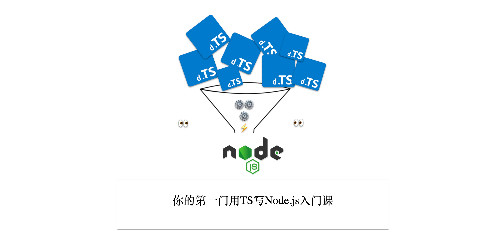
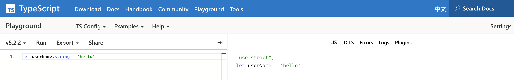
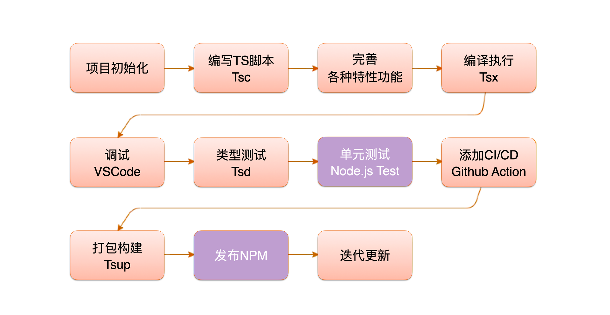
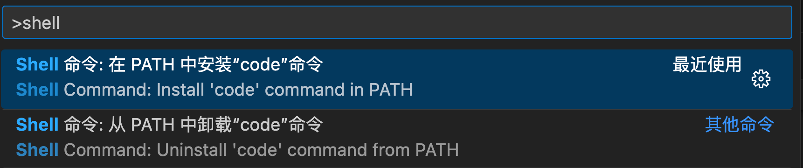
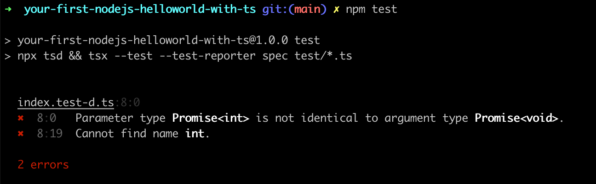

前言

AI时代放大了全栈的好处，很多以前我们觉得可以吃饭的一些技能都变成了必备技能，IT技术平民化，原因有2个。
1、AIGC时代，风口，快速实现更重要，资本不等人。
2、IT技术平民化，全栈化，必须要简单高效。
这样筛选下来，只有2种可能的语言，那就是Node.js和Python。Python是大模型必备，搞定服务端也是很轻松的，而要搞定前端和服务端，成本最低的就是用同一种语言，无疑Node.js是最好的选择。毕竟现在SDK标准三个语言必须实现，那就是Java、Node.js和Python。
除了AI时代放大了Node全栈外，Node.js自身的发展也到了一个必须要总结的时间点了。目前市面上的书、文章、课程主要是Node.js 8以前的（不知道朴灵的深入浅出2能否有突破），现在已经是Node.js v20了。Node.js v20里的很多新特性，比如下面是我觉得比较重要的一些。
Node.js v20的新特性
- V8(5.8→11.3) eventloop promise-base api（error-first） event npm
- ESM
- async/await + promise + hooks
- worker thread（tinypool）
- loader、network-import
- test runner
- 权限模型
- 可观测性，包括 logging/metrics/tracing，以及 APM 等
- 现代化的 HTTP：undici
- WASM
- N-API
除了第一条没变外，其他的差异还是蛮大的。差异如此大，目前还没有课程能够系统的进行讲解，这是我觉得非常可惜的，所以本课程后续也会持续的完善。
Node.js对比Deno，Deno基本上没有啥绝对优势，至于Bun.js还需要观望，按照现在的思路很难能突破Node.js的应用范围。
- Deno：默认支持TS，推荐network-import，现在也支持NPM了
- Bun：默认支持TS，内置包管理工具，更进一步。
无论是Deno也好，还是Bun也好，它们都选择了TS作为宿主语言，足以证明TS的优秀和流行。在Node.js世界，还需要转译(在Node.js v23版本后，已经支持TS了)，可能这也是Node.js一直被诟病落后的一个原因。但是，我们反过来想想，Node.js真的落后吗？我不这样认为。
- 核心够强，生态更强大。
- TS这种交给生态来做就好了，等成熟了，再像test runner收编。
- 克制，专注，社区驱动，更值得信赖。
TS已经是JavaScript开发中的主流选择，它的问题也是比较多的，比如下面这几条。
- 本身TS开发上手成本比JS高很多，尤其是类型体操，以及OO带来的各种不适感，导致很多人很反感
- 调试是一个大坑，前端很复杂，打日志，断点调试，TDD看起来很简单，但很多人都止步于断点调试。更何况加入了TS，让调试难度更大了。
- TS的编译器其实也比较多，从TSC到TS-Node到TSX、ESNO、TSUP，大量的内容。底层还有ESBuild、Sucrase等，选起来很难，学起来很烦。
- 对于很多写了很久TS的人，其实也不一定很标准，比如类型测试TSD用法等，用的也不算多
- 还有就是CJS和ESM各种规范转换，也是非常烦的。所以发布NPM包的时候需要注意很多细节
以上问题其实都是TS带来的成本，如果过不了这关，其实很难往下走。
至此，我们讲了3个要点。
- AI时代间接带动了Node全栈。
- Node.js v20是一个阶段性版本，需要重新梳理。
- TS已经是主流选择，但依然问题很多。
回到实际应用场景中，Node.js + TS下让很多初学者望而却步，为了更好的解决这个问题，我们才推出这门课程。本课程主要是科普最佳实践，讲解如何使用TS开发Node.js应用，从开发、调试、测试、发布四个方面进行讲解。为了让读者更容易理解，这里首先会讲解使用ESM进行开发，这是在使用Node.js v20版本必备的知识，更早一些CommonJS规范用法，可以参考狼书系列之卷一。然后讲如何使用TypeScript进行开发，让读者能够掌握我理解的比较好的开发实践，以及对比ESM写法和TypeScript写法的区别。
本课程有5个目的
- 讲清楚Node.js 8到Node.js v20之间的变化，直观感受是ESM模块支持和内置测试框架。
- 让读者了解核心ESM模块和内置的测试框架用法。
- 讲清楚TypeScript改写ESM编码之后带来的变化，以及TSC、TSX、TSUP、TSD工具使用。
- 工程实践，从HelloWorld到Monorepo，覆盖开发、调试、测试、发布全流程
- 知识面延展，比如ESBuild、Bundless等。
1、Hello Node.js v20
市面上的Node.js书籍绝大部分是Node.js 8版本以前的，而现在最新的Node.js版本是v20。从Node.js 8到Node.js v20，整整12个版本，从2017到2023，整整6年时间里，变化是极大的。
本章内容主要是帮助初学者更容易的掌握Node.js v20简单项目的如何入门进行讲解的，内容相对简单，但知识点还是比较多的。即使作为一个很多年经验的Node.js开发者，对于这里面的知识点很多也不一定都清楚的。无论哪种情况，笔者都建议大家好好学习一下这一章节。
如果想写好一个Node.js v20简单的入门项目，你可能会涉及到已下3个主要变化。
- 模块规范从CommonJS过渡到ESM，必须要掌握ESM，CommonJS已经是可选了。
- 异步编程模块，从回调函数到Promise，从Promise到过渡到Async函数，必须掌握Async函数，其他可选。
- Node.js 内置了test runner，不再需要mocha、tap、tape、ava、jest、vitest等。
下面我们会对这些变化进行一一讲解。
Node.js v20
2023年4 月 18 日，Node.js 正式发布了 v20 版本，是当前最新的可用版本。从Node.js 8之后，很长一段时间，都是围绕如何兼容Web新规范而演进，之所以要讲解v20这个版本，主要有5个原因。
- 变化较多，从Node.js 8到v20，可以说是翻天覆地的变化，无论Node.js新手，还是老手，都值得重新学习一下。
- 截止到v20版本，新特性基本趋于稳定，像ESM、Async函数等都已经非常成熟了。
- 搭配前端最新Web规范，很多Node.js知识点需要更新，比如内置fetch等。
- Deno、Bun等服务端JavaScript运行时崛起，其实Node.js v20已经有很多与时俱进的内容，比如network-import等，依然是当前主流，稳定，可靠的。
- AIGC爆火，带动Node.js全栈需求更加旺盛。结合LLM模型（OpenAI或Replicate等），Langchain.js，以及https://github.com/vercel-labs/ai SDK，组合数据库操作，可以快速落地AI业务。
Node.js是什么
按照官方介绍https://nodejs.dev/en/learn/，通过5个要点来讲解Node.js是什么，具体如下。
1、JavaScript运行时环境
Node.js 是一个开源和跨平台的 JavaScript 运行时环境。 它是几乎任何类型项目的流行工具！Node.js 具有独特的优势，因为数百万为浏览器编写 JavaScript 的前端开发者现在除了客户端代码之外，还能够编写服务器端代码，而无需学习完全不同的语言。
这里需要说明的是，JavaScript优先，但也支持C/C++/Rust，通过N-Api（之前叫Nan node addon）扩展即可。
Node.js主要场景是服务器端代码，却在前端工程领域无心插柳柳成荫，变成了大前端领域必备的组成部分。下面讲Node.js应用场景的时候会细讲。
2、基于v8，所以快
Node.js 在浏览器之外运行 V8 JavaScript 引擎（Google Chrome 的内核）。 这使得 Node.js 执行速度非常高效。
很多c代码写的算法，都不一定比v8写的js代码执行速度快。参考https://github.com/felixge/faster-than-c
3、单进程单线程，简单
Node.js 应用在单个进程中运行，无需为每个请求创建新线程。 Node.js 在其标准库中提供了一组异步 I/O ，以防止 JavaScript 代码阻塞，并且通常Node.js 中的库是使用非阻塞范例编写的，这使得阻塞行为成为异常而不是常态。
缺点：部署服务端代码的时候，一般你需要根据多少个cpu核数n来决定起n-1个实例，这时候就需要pm2这样的进程管理工具，很多人人吐槽pm2，其根本原因是Node.js自身机制问题。
4、基于libuv实现的事件循环，成败皆因此
当 Node.js 执行 I/O 操作时，如从网络读取、访问数据库或文件系统，Node.js 不会阻塞线程和浪费 CPU 周期等待，而是会在事件循环完成恢复操作。

当Node.js进程启动时，Node会创建一个类似于while(true){...}的EventLoop（浏览器也有），每执行一次循环体的过程我们称为Tick。每个Tick的过程就是查看是否有事件待处理，如果有，就取事件及其相关的回调函数。如果存在关联的回调函数，就执行他们。然后进入下一个循环，如果不再有事件要处理，就退出进程。以后学的深入的时候，需要setImmediate 和 process.nextTick，就是围绕EventLoop操作的相关API。
这使得 Node.js 可以使用单个服务器处理数千个并发连接，而不会引入管理线程并发的负担（这可能是灾难的来源）。
基于EventLoop，任务是异步的，所以要采用Error-first Callback写法，所以导致后面异步流程极其复杂，且编写代码时，需要时刻注意EventLoop里加入的代码是否为异步，不然就可能出现性能问题。
辩证的看，Node.js的好处是让你不需要关注多线程就能实现高性能，但你需要关注事件循环是否为异步。

果然，天下没有免费的午餐。
5、跟进Web标准
在 Node.js 中，可以毫无问题地使用新的 ECMAScript 标准（部分），因为你不必等待所有用户更新他们的浏览器（但要等v8更新） - 你负责通过更改 Node.js 版本来决定使用哪个 ECMAScript 版本（这其实不是特性，而是不完善）， 你还可以通过运行带有标志的 Node.js 来启用特定的实验性特性（这种一般就是玩玩）。
说的有点夸张了，但跟进是事实，且一定是有滞后现象的。
Node.js应用场景

1、最重要的场景是Server场景（初心）
2、最通用的是Cli工具开发场景（通用）
3、占比较大的前端相关场景（当前最多，除了Server、API，其他基本都算）
Node.js v20运行原理和新特性

- node v20特性：std lib 在标准化，user lib 在精细化
- v8+eventloop+promise-base api（error-first）+event
- npm
- esm
- async/await + promise
- worker thead（tinypool）
- loader
- test runner
- 权限模型
- 可观测性，包括 logging/metrics/tracing，以及 APM 等
- 现代化的 HTTP：undici
- wasm
- n-api
本节主要讲解Node.js v20入门，大家了解一下即可，限于篇幅，下一门课会详细讲具体细节。
Node.js和大前端的关系
讲Node.js应用场景的时候，我们说过占比较大的前端相关场景，除了Server、API，其他基本都算是大前端场景的组成部分。
下面我们来看一下Node.js和大前端的关系。

Node.js在大前端中发挥了重要作用，主要包括以下方面：
- 服务器端开发：Node.js可以作为服务器端语言来处理HTTP请求，实现服务器端的逻辑处理和数据存储等功能。
- 前端构建工具：Node.js提供了npm包管理工具，开发者可以通过npm下载和管理各种前端框架、库和插件等。
- 前端自动化构建：Node.js可以结合gulp、grunt、webpack、vite等自动化构建工具来进行前端代码的自动化打包、压缩、合并等操作，提高开发效率。
- 实时通信：Node.js可以通过socket.io等技术实现实时通信，例如聊天室、在线游戏等，比如hmr等。
- 数据库操作：Node.js可以通过mongoose等库来进行数据库的操作，例如数据的增删改查等。
- 人工智能：Node.js可以结合TensorFlow等机器学习框架来进行人工智能的开发和应用。
- 云计算：Node.js可以结合AWS Lambda等云计算平台来进行云计算相关的开发和应用。
总之，Node.js在大前端中的应用非常广泛，可以帮助开发者快速搭建服务器、构建前端、实现自动化构建、进行实时通信、操作数据库、开发人工智能等。
Node.js安装
这部分参考了《狼书（卷1）：更了不起的Node.js》里的3m安装法。
nvm（node version management）
首先介绍第一种 nvm，Github 地址 https://github.com/nvm-sh/nvm，文档写的也很详细，推荐去阅读，以下为安装步骤：
- 安装 nvm：wget -qO- https://raw.githubusercontent.com/creationix/nvm/v0.33.2/install.sh | bash
- 查看所有 Node.js 版本：nvm ls-remote
- 查看本地 Node.js 版本：nvm ls
- 安装 Node.js：nvm install v6.9.5
- 设置系统的默认 Node.js 版本：nvm alias default v6.9.5
Example:
nvm install 8.0.0 Install a specific version number
nvm use 8.0 Use the latest available 8.0.x release
nvm run 6.10.3 app.js Run app.js using node 6.10.3
nvm exec 4.8.3 node app.js Run `node app.js` with the PATH pointing to node 4.8.3
nvm alias default 8.1.0 Set default node version on a shell
nvm alias default node Always default to the latest available node version on a shell
nvm install node Install the latest available version
nvm use node Use the latest version
nvm install --lts Install the latest LTS version
nvm use --lts Use the latest LTS version
nvm set-colors cgYmW Set text colors to cyan, green, bold yellow, magenta, and white
如果是windows平台，推荐使用nvs。
npm（node package management）
npm（Node Package Manager）是Node.js的包管理工具，用于安装、发布和管理Node.js模块。它是Node.js的默认包管理工具，随同Node.js一起安装。
最新特性包括：
- npx：npx是npm 5.2.0版本引入的新命令，用于执行临时安装的模块。它可以直接运行本地安装的模块，而无需全局安装。例如，可以使用npx来运行项目依赖的模块，而无需在全局安装它们。
- npx create：npx create是一种快速创建项目的方式，它可以通过执行命令"npx create-
"来创建一个新的项目。例如，可以使用"npx create-react-app my-app"来创建一个新的React应用程序。
与yarn和pnpm相比，npm是最流行的包管理工具之一，拥有大量的社区支持和生态系统。
- yarn是由Facebook开发的另一种包管理工具，它具有更快的安装速度和更好的缓存机制。
- pnpm是一个相对较新的包管理工具，它的主要优势是节省磁盘空间和更快的安装速度。
虽然pnpm大有后来居上的意味，但是，npm的生态系统更加完善，而且npm的新特性也在不断地更新和完善，因此npm仍然是最受欢迎的包管理工具之一。
为了解决npm、yarn、pnpm等各种包的管理问题，Node.js官方提供了Corepack工具，它是一个用于管理和分发Node.js核心模块的工具，旨在提供一个简单、可靠的方式来访问和使用Node.js核心模块。
Node.js Corepack的主要特性包括：
- 简化的安装和使用：Corepack可以通过一条简单的命令行指令来安装和更新Node.js核心模块。它提供了一个统一的接口，使得安装和使用核心模块变得更加简单和方便。
- 版本管理：Corepack允许你在不同的Node.js版本之间切换，并且可以管理和安装不同版本的核心模块。这对于开发者来说非常有用，可以轻松地切换和管理不同版本的Node.js核心模块。
- 快速的下载和更新：Corepack使用了高效的下载和缓存机制，可以快速地下载和更新核心模块。这样可以节省时间，并且可以在没有网络连接的情况下进行离线安装和更新。
- 可靠的分发：Corepack使用了Node.js团队提供的官方分发源，确保了核心模块的可靠性和安全性。它还支持自定义分发源，使得开发者可以使用自己的私有分发源。
总的来说，Node.js Corepack是一个方便、可靠的工具，可以帮助开发者更好地管理和使用Node.js核心模块。它简化了安装和更新的过程，提供了版本管理和快速下载的功能，同时保证了核心模块的可靠性和安全性。
Corepack目前还不是默认开启的功能，暂时先了解就可以了。
nrm（node registry management）
- https://www.npmjs.com/ 官方源。
- https://npmmirror.com/ 国内源，之前叫cnpm。
常识
- 国内安装会比国外快。所以能用https://npmmirror.com/就尽量用
- 内网安装会比外网快。能在内网使用cnpm搭建一个npm私有源，就尽量用。
无论哪种情况，我们都需要切换npm源。
安装
$ npm install -g nrm
查看支持的源
$ nrm ls
* npm ---------- https://registry.npmjs.org/
yarn --------- https://registry.yarnpkg.com/
tencent ------ https://mirrors.cloud.tencent.com/npm/
cnpm --------- https://r.cnpmjs.org/
taobao ------- https://registry.npmmirror.com/
npmMirror ---- https://skimdb.npmjs.com/registry/
切换源
$ nrm use cnpm //switch registry to cnpm
Registry has been set to: http://r.cnpmjs.org/
ESM
当下前端主流用法是基于ESM方式进行编写，Node.js v20已经非常好的支持ESM了，推荐大家使用这种方式进行编写。
为了能够让大家理解ESM前世今生，本节我们也花了一点时间了解模块规范演进历史和必须了解的CommonJS，最后给出了现在Node.js里最常用的引用写法。
下面我们从模块规范演进历史开始进行一一讲解。
模块规范演进历史
JavaScript模块规范的发展历史可以追溯到早期的CommonJS规范，然后发展到ESM（ECMAScript Modules）规范。下面是一个简要的描述：
- CommonJS规范：在Node.js出现之前，JavaScript缺乏一种官方的模块化规范。为了解决这个问题，CommonJS规范在2009年提出，它定义了一种模块加载和导出机制，使得开发者可以将代码组织成独立的模块，并在需要时进行加载和使用。CommonJS规范主要用于服务器端的JavaScript开发，Node.js采用了这个规范。
- CommonJS规范定义了
require和module.exports等关键字，用于加载和导出模块。 - 在Node.js中，采用了CommonJS规范，通过
require函数加载模块，通过module.exports导出模块。
- CommonJS规范定义了
- AMD规范：在浏览器端，由于网络请求的异步性质，CommonJS规范在加载模块时存在一些问题。为了解决这个问题，AMD（Asynchronous Module Definition）规范在2011年提出，它引入了
define和require函数，使得模块的加载可以异步进行。RequireJS是一个遵循AMD规范的模块加载器。 - UMD规范：由于CommonJS和AMD规范在语法和用法上存在差异，为了兼容两者，UMD（Universal Module Definition）规范在2013年提出。UMD规范允许开发者编写兼容CommonJS和AMD规范的模块，使得模块可以在不同的环境中使用。
- ES6模块规范：随着ES6（ECMAScript 2015）的发布，JavaScript语言本身引入了官方的模块化规范，即ESM规范。ESM规范在语法和用法上与CommonJS和AMD规范有所不同，它使用
export和import语句来导出和导入模块。ESM规范提供了更强大和灵活的模块化功能，并逐渐成为JavaScript的主流模块规范。
总结来说，JavaScript模块规范经历了CommonJS、AMD、UMD等发展阶段，最终在ES6中引入了官方的ESM规范。这些规范的出现和发展，为JavaScript开发者提供了不同的模块化方案，使得代码的组织和复用更加方便和灵活。
作为Node.js开发者来说，我们只需要了解Commonjs（上一代）和ESM（当前Web规范）二种规范即可，甚至可以只会ESM，短期内也是够用的。
CommonJS
CommonJS是一种用于JavaScript模块化的规范，它定义了一种模块加载和导出机制，使得开发者可以将代码组织成独立的模块，并在需要时进行加载和使用。
在CommonJS规范中，每个模块都是一个单独的文件，文件中的代码通过module.exports导出，其他模块可以通过require函数来加载和使用这些导出的模块。
以下是一个使用CommonJS规范的简单示例：
假设有两个文件，分别为math.js和app.js。
math.js文件中定义了一个简单的加法函数：
// math.js
function add(a, b) {
return a + b;
}
module.exports = add;
app.js文件中使用了math.js中导出的加法函数：
// app.js
const add = require('./math.js');
console.log(add(2, 3)); // 输出：5
在app.js中，我们使用了require函数来加载math.js文件，并将导出的add函数赋值给变量add。然后，我们可以直接调用add函数进行加法运算。
这是一个简单的CommonJS规范的示例，通过模块的导出和加载，我们可以将代码组织成独立的模块，提高代码的可维护性和复用性。
市面上很多教程里的代码都是下面这样采用CommonJS规范实现的，这是因为当下市面上能够见到的书籍基本都是基于Node.js 8版本之前编写的。
const fs = require('fs');
fs.writeFile('example.txt', 'Hello, world!', 'utf8', (error) => {
if (error) {
console.error(error);
} else {
console.log('File written successfully.');
}
});
在Node.js v20里，它也是可以运行的，只是不推荐而已。有更先进且符合Web标准的ESM规范，了解一下就够，不必深学（以前为了动态加载模块，很多时候还会处理require.cache，比如jest里的测试Node.js有时候会有一些莫名奇妙的bug，就是这个原因）。
ESM
ESM（ECMAScript Modules）是JavaScript官方的模块化规范，它最早于2015年在ES6（ECMAScript 2015）中引入。ESM规范在语法和用法上与CommonJS和AMD规范有所不同，它使用export和import语句来导出和导入模块。
在ES6中，ESM规范仅仅是一个提案，需要通过Babel等工具进行转换才能在浏览器和Node.js中使用。随着时间的推移和ES6的广泛应用，ESM规范逐渐成为JavaScript的主流模块规范。

自从2021年 sindresorhus 发表 esm only 的宣言 一年多以来，许多项目开始转向了 esm only，即仅支持 esm 而不支持 cjs，以此来迫使整个生态更快的迁移到 esm only。
一些流行的项目已经这样做了
- sindresorhus 维护的上千个 npm 包
- node-fetch
- remark 系列
- 更多开源模块。。。
我是非常支持sindresorhus的做法，规范是不断演进的，背着包袱前行，不过是权宜之计。
export和import
在Node.js中，ESM规范最早于2017年在v8.5.0版本中引入（狼书卷一中讲过esnext，甚至还有systemjs这样的esm加载器，如今浏览器内置，用武之地极小），但是需要在文件中添加"type": "module"的声明才能启用ESM模块。随着Node.js的版本更新，ESM规范的支持逐渐完善，可以通过import和export语句来导入和导出模块，也可以使用动态导入等高级特性。
在ESM规范中，每个模块都是一个单独的文件，文件中的代码通过export和import语句来导出和导入模块。
1、export
export 用于对外输出模块，可导出常量、函数、文件等，相当于定义了对外的接口，两种导出方式：
- export: 使用 export 方式导出的，导入时要加上 {} 需预先知道要加载的变量名，在一个文件中可以使用多次。
- export default: 为模块指定默认输出，这样加载时就不需要知道所加载的模块变量名，一个文件中仅可使用一次。
// src/caculator.mjs
export function add (a, b) {
return a + b;
};
export function subtract (a, b) {
return a - b;
}
const caculator = {
add,
subtract,
}
export default caculator;
2、import
import 语句用于导入另一个模块导出的绑定，三种导入方式：
- 导入默认值：导入在 export default 定义的默认接口。
- as 别名导入：在导入时可以重命名在 export 中定义的接口。
- 单个或多个导入：根据需要导入 export 定一个的一个或多个接口。
// src/app.mjs
import caculator from "./src/caculator.mjs";
import * as caculatorAs from "./src/caculator.mjs";
const result = caculator.add(4, 2);
console.dir(result);
// caculator.subtract(4, 2);
const result2 = caculatorAs.subtract(4, 2);
console.dir(result2);
我们使用了import语句来加载math.js文件中导出的add函数，并将其赋值给变量add。然后，我们可以直接调用add函数进行加法运算。这是一个简单的ESM规范的示例，通过模块的导出和加载，我们可以将代码组织成独立的模块，提高代码的可维护性和复用性。
ESM执行的2种方式
需要注意的是ESM在Node.js世界里有2种执行方式。
1、在Node.js中，ESM规范需要使用.mjs文件扩展名，如果在package.json文件中没有指定"type": "module"，就必须使用.mjs文件扩展名。
$ node src/app.mjs
2、使用.js文件扩展名，需要在package.json文件中指定"type": "module"，
$ node app.js
这种用法在Node.js v17以上版本都可以直接使用。
在命令行中如果Node.js版本大于8或小于17，你也可以使用--experimental-modules参数来启用ESM模块，在Node.js v17版本以上已经是默认开启ESM模块了。
$ node --experimental-modules app.js
说明。
- 第一种方式，最为原始，最开始实现loader的时候，为了区别CommonJS和ESM而做区分使用的文件扩展
- 第二种方式，通过确定当前模块是ESM模块，你就可以不用使用文件后缀名来区分它是什么格式，很明显这是更简单的。
node: 引用
在Node.js v12.20之后就已经开始支持URLs引用了。通过node:可以引用Node.js内置的模块，简言之，Node.js 内置的SDK方法都可以通过这种方式来引用。

举个例子，参见src/buildin-modules.mjs
import { builtinModules as builtin } from "node:module";
console.dir(builtin);
执行结果如下。

这些其实就是Node.js SDK里所有模块，需要说明的是以”_“开头的是内部私有模块，不要直接使用，比如”_http_agent“是在”http“模块里应用的，对应的功能有对外导出。
Async/await
理解了ESM规范中的export和import，以及import xx from ‘node:xx’方式，你已经可以开始写Node.js v20的项目了。但Node.js最核心的点其实是异步流程控制，如果处理不好异步流程控制，在Node.js世界里，你就只能写写Cli工具，能做的相对比较有限。
本节，我们之所以以Async/await命名，是因为它是你在Node.js异步世界里必须掌握的内容，它和ESM一样重要。
Node.js SDK Api演进过程
为了让大家更好的理解为什么Async/await如此重要，我们需要先讲一下Node.js SDK API风格演示过程。
作为Node.js开发者，以下是一些常见的Node.js SDK写法风格：
- 回调函数（Callback）风格：
- 在早期的Node.js版本中，常见的异步操作是通过回调函数来处理的。
- 回调函数通常有两个参数，第一个参数用于传递错误信息，第二个参数用于传递结果或数据。
- 开发者需要在回调函数中处理错误和结果，以确保代码的正确执行。
- Promise风格：
- 随着ES6的普及，Promise成为了处理异步操作的一种新方式。
- Promise是一种表示异步操作的对象，可以通过
.then和.catch方法进行链式调用。 - 开发者可以使用
new Promise来创建Promise对象，并在异步操作完成后调用resolve或reject来处理结果和错误。
- async/await风格：
- ES8引入了async/await语法糖，使得异步代码的书写更加简洁和直观。
- 使用
async关键字定义一个异步函数，其中可以使用await关键字等待一个Promise的完成。 - 开发者可以像编写同步代码一样编写异步代码，提高了代码的可读性和可维护性。
总结来说，Node.js SDK的写法风格在异步流程调用方面经历了从回调函数到Promise再到async/await的发展历程。开发者可以根据自己的喜好和项目需求选择合适的写法风格，以提高代码的可读性和可维护性。
异步流程控制概览
关于异步流程调用的发展历史，在《狼书1》第七章异步流程控制一章中，总结的已经非常全面了，如下图。

说明如下。
- callback hell：在esm出现之前error-first callback是默认API风格，所以会出现很多回调函数里嵌套回调的情况。在esm+promisify api之后，基本很少有人用error-first callback写法的api了，虽然Node.js会一直提供。
- Thunk已经退出历史舞台了，今天知道且用的人已经很少了。
- Generator在遍历和操作数据集合时候偶尔会用，更有Async Generator，我目前只在 https://github.com/typicode/xv 里见过。
在Node.js v20项目里，你需要掌握的是只有2个异步流程控制知识点：Promise和Async函数，就足够开发Node.js项目了。
同步还是回调?
Node.js本身以异步著名，绝大部分任务都是需要在EventLoop里运行，但也有意外，比如writeFile和writeFileSync就是特例，它们都是用于写入文件的两个不同的函数，具体用法行的差异如下。
1、writeFile是一个异步函数，它接受文件路径、要写入的数据和可选的编码参数，并在写入完成后调用回调函数。这意味着在写入文件时，程序可以继续执行其他操作，而不必等待写入完成。示例代码如下：
const fs = require('fs');
fs.writeFile('example.txt', 'Hello, world!', 'utf8', (error) => {
if (error) {
console.error(error);
} else {
console.log('File written successfully.');
}
});
2、writeFileSync是一个同步函数，它接受文件路径、要写入的数据和可选的编码参数，并在写入完成后返回。这意味着在写入文件时，程序会阻塞并等待写入完成，然后继续执行后续操作。示例代码如下：
const fs = require('fs');
try {
fs.writeFileSync('example.txt', 'Hello, world!', 'utf8');
console.log('File written successfully.');
} catch (error) {
console.error(error);
}
总的来说，writeFile适用于异步编程场景，可以在写入文件的同时执行其他操作，而writeFileSync适用于同步编程场景，需要等待写入完成后再执行后续操作。选择使用哪个函数取决于具体的应用场景和需求。
讲这个的目的是为了说明原理。
但Sync方法是由场景限制的，不可以乱用。
反思
Promise
Promise是JS异步编程中的重要概念，异步抽象处理对象，是目前比较流行Javascript异步编程解决方案之一。在Node.js世界里，本身是Error-first Callback写法，和Promise结合是最简单的用法。所以在Node.js 10之前，基本上都会使用bluebird这样的Promise库来实现，后面ES6内置Promise，所以Node.js（基于v8内核，v8是Chrome的js渲染引擎）也开始支持Promisee对象，并且对fs等模块进行了Promise话，甚至还出现了util.promisify这样的工具函数。
ES6 Promise
ES6引入了Promise对象，它是一种用于处理异步操作的对象。Promise可以将异步操作转化为类似同步操作的链式调用方式，使得代码更易读、更易维护。
Promise对象具有以下特点：
- Promise对象是一个构造函数，通过
new Promise()来创建一个Promise实例。 - Promise对象的构造函数接受一个函数作为参数，该函数包含两个参数：resolve和reject。resolve用于将Promise状态从pending转为fulfilled，reject用于将Promise状态从pending转为rejected。
- Promise对象的实例具有
then方法，用于指定Promise状态变为fulfilled时的回调函数，并返回一个新的Promise对象。then方法可以被链式调用，即可以在一个then方法的回调函数中再调用另一个then方法。
下面是一个简单的示例代码，演示了Promise的基本用法：
// 创建一个Promise对象
const promise = new Promise((resolve, reject) => {
// 模拟异步操作
setTimeout(() => {
const randomNumber = Math.random();
if (randomNumber > 0.5) {
// 异步操作成功，将Promise状态从pending转为fulfilled，并返回结果
resolve(randomNumber);
} else {
// 异步操作失败，将Promise状态从pending转为rejected，并返回错误信息
reject(new Error('Random number is less than 0.5'));
}
}, 1000);
});
// 使用then方法指定Promise状态变为fulfilled时的回调函数
promise.then(result => {
console.log('Promise fulfilled:', result);
}).catch(error => {
console.error('Promise rejected:', error);
});
在上面的示例中，我们首先创建了一个Promise对象，通过new Promise()来定义一个异步操作。在异步操作中，通过setTimeout模拟了一个耗时1秒的操作，并根据随机数的大小决定操作成功还是失败。如果随机数大于0.5，操作成功，调用resolve函数将Promise状态从pending转为fulfilled，并返回随机数；如果随机数小于等于0.5，操作失败，调用reject函数将Promise状态从pending转为rejected，并返回一个错误对象。
然后，我们使用then方法指定了Promise状态变为fulfilled时的回调函数，通过链式调用的方式，可以在then方法的回调函数中继续调用另一个then方法。
最后，我们通过catch方法指定了Promise状态变为rejected时的回调函数，用于处理异步操作失败的情况。
综上所述，ES6 Promise是一种用于处理异步操作的对象，通过将异步操作转化为类似同步操作的链式调用方式，使得代码更易读、更易维护。Promise具有三种状态：pending、fulfilled和rejected，可以通过resolve和reject函数将Promise状态从pending转为fulfilled或rejected，并返回相应的结果或错误信息。then方法用于指定Promise状态变为fulfilled时的回调函数，catch方法用于指定Promise状态变为rejected时的回调函数。
Promisify
如果不用Sync方法，也不想使用回调函数写法，使用Promise是一个更好的选择。在 Node.js v10开始，他们在使用 Promisepromises的fs模块中创建了一个对象，而主fs模块继续公开使用回调的函数。在此程序中，你可以将导入模块的 promise 版本。
- 以前导入模块后，创建一个异步函数来读取文件。异步函数学习bluebird方式，以
async关键字开头。现在和fs保持一致了，更方便。
使用异步函数，您可以使用await关键字解析承诺，而不是将承诺与.then()方法链接起来。
fs.promises模块提供了一组以Promise风格的方式封装的文件系统函数，可以方便地处理文件操作。以下是一个使用fs.promises模块的示例：
const fs = require('fs').promises;
// 使用Promise风格的函数读取文件内容
fs.readFile('example.txt', 'utf8')
.then(data => {
console.log(data);
})
.catch(error => {
console.error(error);
});
// 使用Promise风格的函数写入文件内容
fs.writeFile('example.txt', 'Hello, world!', 'utf8')
.then(() => {
console.log('File written successfully.');
})
.catch(error => {
console.error(error);
});
在上面的示例中，我们首先引入了fs.promises模块，然后使用readFile函数读取文件内容，并使用writeFile函数写入文件内容。这些函数都返回Promise对象，因此我们可以使用.then和.catch方法处理异步操作的结果和错误。
需要注意的是，fs.promises模块仅在Node.js v10及以上版本中可用。如果你使用的是Node.js v8及以下版本，可以使用util.promisify方法将其他异步函数转换为Promise风格的函数，然后使用该函数进行文件操作。
综上所述，通过使用fs.promises模块，我们可以方便地处理文件操作，并使用Promise风格的函数处理异步操作。
util.promisify
在Node.js中，可以使用util.promisify方法将遵循错误优先回调的函数转换为返回Promise的函数，从而简化异步操作的处理。在文件系统模块（fs）中，可以使用promisify方法将异步的文件操作函数转换为Promise风格的函数。
以下是一个使用fs.promises模块（Node.js v10及以上版本）和util.promisify方法的示例：
const fs = require('fs');
const { promisify } = require('util');
// 使用promisify方法将fs.readFile函数转换为Promise风格的函数
const readFileAsync = promisify(fs.readFile);
// 使用Promise风格的函数读取文件内容
readFileAsync('example.txt', 'utf8')
.then(data => {
console.log(data);
})
.catch(error => {
console.error(error);
});
在上面的示例中，我们首先引入了fs模块和util模块的promisify方法。然后，我们使用promisify方法将fs.readFile函数转换为返回Promise的函数readFileAsync。最后，我们使用readFileAsync函数来读取文件内容，并通过.then和.catch方法处理异步操作的结果和错误。
需要注意的是，上述示例使用了Node.js v10及以上版本中引入的fs.promises模块，该模块提供了一组以Promise风格的方式封装的文件系统函数。如果你使用的是Node.js v8及以下版本，可以使用util.promisify方法将其他异步函数转换为Promise风格的函数，然后使用该函数进行文件操作。
综上所述，通过使用util.promisify方法，我们可以将Node.js中的异步函数转换为Promise风格的函数，从而更方便地处理异步操作。
Async函数
ES6中的async函数是一种异步编程的解决方案，它使得异步操作更加简洁明了，并且可以避免回调地狱的问题。async函数本质上是一个返回Promise对象的函数，可以使用await关键字来等待Promise对象的状态变化。
async函数具有以下特点：
- async函数声明时需要在函数前面添加async关键字，表示该函数是一个异步函数。
- async函数内部可以使用await关键字来等待Promise对象的状态变化，await关键字后面跟上一个Promise对象，表示等待该Promise对象的状态变为fulfilled或rejected。
- async函数内部可以包含多个await关键字，这些异步操作将按照顺序依次执行。
- async函数返回一个Promise对象，该对象的状态由async函数内部的异步操作决定，如果异步操作成功，则Promise状态为fulfilled，并返回异步操作的结果；如果异步操作失败，则Promise状态为rejected，并返回错误信息。
下面是一个简单的示例代码，演示了async函数的基本用法：
// 定义一个异步函数
async function main() {
console.dir("hi async function");
try {
// 调用Promise函数
await fn();
} catch (error) {
console.log(error);
}
}
// 调用Promise函数
function fn() {
return new Promise(function (resolve, reject) {
console.dir("hi promise function");
resolve();
});
}
// 调用异步函数
main();
在上面的示例中，我们首先定义了一个异步函数main，该函数使用了async关键字来声明，表示该函数是一个异步函数。在函数内部，我们使用了await关键字来等待异步操作完成，首先使用await fn函数来执行fn函数中的Promise方法。最后，我们在最下面调用main方法来获得异步操作的结果。
综上所述，ES6中的async函数是一种异步编程的解决方案，它使得异步操作更加简洁明了，并且可以避免回调地狱的问题。async函数使用async关键字来声明，内部可以使用await关键字来等待异步操作完成，返回一个Promise对象，该对象的状态由异步操作的结果决定。
第一个Node.js v20项目
学习任何技术，最好的方式都是从Helloworld开始，能够把Helloworld做到极致，标准，内聚，其实也是非常难的。
下面我们就来一起看一下第一个Node.js v20项目如何编写吧。
要点
推荐做法，能使用现代Web规范的地方尽量使用。
1、使用ESM规范，作为模块加载方案，掌握import和export就可以
2、使用import xx from ‘node:xxx’调用
3、配置package.json中的"type": "module"，使用.js后缀进行开发
4、使用Async函数作为异步流程方案，如果必须要使用Promise
初始化项目
通过npm init -y创建项目

这是npm默认创建的package.json，此时并没有配置ES模块信息。需要手动编写，增加"type": "module"。此时，package.json文件内容如下。
{
"name": "helloworld",
"version": "1.0.0",
"description": "",
"type": "module",
"main": "index.js",
"scripts": {
"test": "echo \"Error: no test specified\" && exit 1"
},
"keywords": [],
"author": "",
"license": "ISC"
}
创建index.js
为了演示方便，我们采用之前的代码。
// 定义一个异步函数
async function sayHi(name) {
try {
// 调用Promise函数
const text = await helloworld(name);
console.dir(text);
} catch (error) {
console.log(error);
}
}
// 调用Promise函数
function helloworld(name) {
return new Promise(function (resolve, reject) {
resolve(`Hello ${name}!`);
});
}
// 调用异步函数
const person = process.argv[2];
sayHi(person);
执行如下。
$ node index.js alfred
'Hello alfred!'
参考
- https://nodejs.dev/en/learn/run-nodejs-scripts-from-the-command-line/
- https://github.com/75lb/command-line-args
- https://github.com/75lb/command-line-usage
发布npm
前置条件是npmjs.com上注册并登录.

修改package.json如下
{
"name": "node-v20-helloworld",
"version": "1.0.5",
"description": "",
"type": "module",
"main": "index.js",
"bin": {
"node-v20-helloworld": "index.js"
},
"scripts": {
"test": "echo \"Error: no test specified\" && exit 1"
},
"keywords": [],
"author": "npmtudy",
"license": "ISC",
"files": [
"index.js"
],
"engines": {
"node": "^20"
}
}
说明
- bin 是配置cli名称的配置。
- files 是发布的npm包里包含的内容，比如测试之类的只在开发阶段使用，真正的npm包里可以移除掉。
- engines 用于限制node版本，比如这里的配置就是Node.js v20以上才能安装。
然后执行npm publish就可以正常发布，如果不能发布，可以通过npm verion进行调整，比较常用的就是修复问题，通过patch来修改最后一位的版本号。
$ npm version patch
v1.0.6
测试
Node.js诞生自2009年，在v18之前的13年时间里都没有内置任何测试框架。一直都是使用npm生态。像本书系列卷三中提到的几个测试框架，都已经有5年以上的历史了。
| 测试框架 | 当前主要版本 | 年限 |
|---|---|---|
| mocha | v10 | 11 |
| tap | v16 | 11 |
| tape | v5 | 10 |
| ava | v5 | 9 |
| jest | v27 | 7 |
Node.js遵循与JavaScript本身相同的"最小核心"原则。因此，像代码检查工具、代码格式化工具和测试运行器这样的工具最好作为第三方工具提供。虽然这是一个很好的想法很长一段时间，但现在没有标准测试工具的任何语言都显得有些奇怪。Deno、Rust和Go - 它们都有自己内置的测试运行器。
在Node.js v18开始内置了测试框架，在Node.js v20版本中，已经被标记为Stable能力，大家可以放心使用。
使用Node.js 内置的测试框架，测试代码如下。
import { test } from "node:test";
import assert from "node:assert";
import { sayHi } from "./index.js";
test("test if works correctly", function (t) {
const log = t.mock.method(global.console, "log");
assert.strictEqual(log.mock.callCount(), 0);
// call hello world say method
sayHi("liangqi");
assert.strictEqual(log.mock.callCount(), 1);
});
在package.json中修改npm scripts
"scripts": {
"test": "node --test"
},
执行测试结果如下。
$ npm test
> node-v20-helloworld@1.0.6 test
> node --test
Hello liangqi!
✖ test if works correctly (1.703916ms)
AssertionError [ERR_ASSERTION]: Expected values to be strictly equal:
0 !== 1
at TestContext.<anonymous> (file:///Users/alfred/workspace/npmstudy/node-v20-helloworld/index.test.js:13:10)
at Test.runInAsyncScope (node:async_hooks:206:9)
at Test.run (node:internal/test_runner/test:581:25)
at Test.start (node:internal/test_runner/test:494:17)
at startSubtest (node:internal/test_runner/harness:207:17) {
generatedMessage: true,
code: 'ERR_ASSERTION',
actual: 0,
expected: 1,
operator: 'strictEqual'
}
ℹ tests 1
ℹ suites 0
ℹ pass 0
ℹ fail 1
ℹ cancelled 0
ℹ skipped 0
ℹ todo 0
ℹ duration_ms 59.11425
✖ failing tests:
✖ test if works correctly (1.703916ms)
AssertionError [ERR_ASSERTION]: Expected values to be strictly equal:
0 !== 1
at TestContext.<anonymous> (file:///Users/alfred/workspace/npmstudy/node-v20-helloworld/index.test.js:13:10)
at Test.runInAsyncScope (node:async_hooks:206:9)
at Test.run (node:internal/test_runner/test:581:25)
at Test.start (node:internal/test_runner/test:494:17)
at startSubtest (node:internal/test_runner/harness:207:17) {
generatedMessage: true,
code: 'ERR_ASSERTION',
actual: 0,
expected: 1,
operator: 'strictEqual'
}
竟然报错了！这就很莫名奇妙，方法调用都是对的，断言也没问题。
后经过排查，发现sayHi是Async函数，在测试方法里，没有使用await来对接。需要修改2处。
- test("test if works correctly", async function (t) {})，第二个参数，需要修噶以为Async函数，这是因为await外层必须是async函数。
- sayHi("liangqi") 方法需要改成await sayHi("liangqi")，这样异步方法就转换为同步方法了。
将代码修改如下
import { test } from "node:test";
import assert from "node:assert";
import { sayHi } from "./index.js";
test("test if works correctly", async function (t) {
const log = t.mock.method(global.console, "log");
assert.strictEqual(log.mock.callCount(), 0);
// call hello world say method
await sayHi("liangqi");
assert.strictEqual(log.mock.callCount(), 1);
});
此时，执行npm test
$ npm test
> node-v20-helloworld@1.0.6 test
> node --test
Hello liangqi!
✔ test if works correctly (1.092375ms)
ℹ tests 1
ℹ suites 0
ℹ pass 1
ℹ fail 0
ℹ cancelled 0
ℹ skipped 0
ℹ todo 0
至此，就完成了测试的基本步骤，只有CI/CD我们在后面进阶章节进行讲解。
模块用法
npm上的模块分2种。
- 普通模块，主要是为import from使用的。
- 二进制模块，主要是为了编写命令行Cli工具使用的。
下面分别进行演示。
方式1：通过二进制模块方式测试
$ npm i -g node-v20-helloworld
$ node-v20-helloworld liangqi
'Hello liangqi!'
方式2：代码调用
$ npm i --save node-v20-helloworld
调用代码如下，一定要注意await，上面测试部分有见过坑，不可偷懒。
#! /usr/bin/env node
import { sayHi } from 'node-v20-helloworld';
async function main(){
// 调用异步函数
const person = process.argv[2];
await sayHi(person);
}
main();
小结
本章主要是讲解了创建一个Node.js v20的入门项目，需要了解的知识点。看似简单，想要真的写好一个Hello World，竟然也需要上万字的教程，相信你已经了解它的难度。
- ESM用法必须掌握，使用
node:引用必须掌握，CommonJS了解即可。 - Async必须掌握，Promise可以掌握，Error-first callback了解即可。
- Node.js运行原理和新特性了解即可。
- 3m安装法建议掌握。
- 发布npm模块建议掌握。
现在，你已经掌握了Node.js v20项目开发基础，接下来我们继续学习如何使用TS开发Node.js项目吧。
源码：https://github.com/npmstudy/node-v20-helloworld/tree/main
1.1、Node.js v20
2023年4 月 18 日，Node.js 正式发布了 v20 版本，是当前最新的可用版本。从Node.js 8之后，很长一段时间，都是围绕如何兼容Web新规范而演进，之所以要讲解v20这个版本，主要有5个原因。
- 变化较多，从Node.js 8到v20，可以说是翻天覆地的变化，无论Node.js新手，还是老手，都值得重新学习一下。
- 截止到v20版本，新特性基本趋于稳定，像ESM、Async函数等都已经非常成熟了。
- 搭配前端最新Web规范，很多Node.js知识点需要更新，比如内置fetch等。
- Deno、Bun等服务端JavaScript运行时崛起，其实Node.js v20已经有很多与时俱进的内容，比如network-import等，依然是当前主流，稳定，可靠的。
- AIGC爆火，带动Node.js全栈需求更加旺盛。结合LLM模型（OpenAI或Replicate等），Langchain.js，以及https://github.com/vercel-labs/ai SDK，组合数据库操作，可以快速落地AI业务。
Node.js是什么
按照官方介绍https://nodejs.dev/en/learn/，通过5个要点来讲解Node.js是什么，具体如下。
1、JavaScript运行时环境
Node.js 是一个开源和跨平台的 JavaScript 运行时环境。 它是几乎任何类型项目的流行工具！Node.js 具有独特的优势，因为数百万为浏览器编写 JavaScript 的前端开发者现在除了客户端代码之外，还能够编写服务器端代码，而无需学习完全不同的语言。
这里需要说明的是，JavaScript优先，但也支持C/C++/Rust，通过N-Api（之前叫Nan node addon）扩展即可。
Node.js主要场景是服务器端代码，却在前端工程领域无心插柳柳成荫，变成了大前端领域必备的组成部分。下面讲Node.js应用场景的时候会细讲。
2、基于v8，所以快
Node.js 在浏览器之外运行 V8 JavaScript 引擎（Google Chrome 的内核）。 这使得 Node.js 执行速度非常高效。
很多c代码写的算法，都不一定比v8写的js代码执行速度快。参考https://github.com/felixge/faster-than-c
3、单进程单线程，简单
Node.js 应用在单个进程中运行，无需为每个请求创建新线程。 Node.js 在其标准库中提供了一组异步 I/O ，以防止 JavaScript 代码阻塞，并且通常Node.js 中的库是使用非阻塞范例编写的，这使得阻塞行为成为异常而不是常态。
缺点：部署服务端代码的时候，一般你需要根据多少个cpu核数n来决定起n-1个实例，这时候就需要pm2这样的进程管理工具，很多人吐槽pm2，其根本原因是Node.js自身机制问题。
4、基于libuv实现的事件循环，成败皆因此
当 Node.js 执行 I/O 操作时，如从网络读取、访问数据库或文件系统，Node.js 不会阻塞线程和浪费 CPU 周期等待，而是会在事件循环完成恢复操作。
当Node.js进程启动时，Node会创建一个类似于while(true){...}的EventLoop（浏览器也有），每执行一次循环体的过程我们称为Tick。每个Tick的过程就是查看是否有事件待处理，如果有，就取事件及其相关的回调函数。如果存在关联的回调函数，就执行它们。然后进入下一个循环，如果不再有事件要处理，就退出进程。以后学的深入的时候，需要setImmediate 和 process.nextTick，就是围绕EventLoop操作的相关API。
这使得 Node.js 可以使用单个服务器处理数千个并发连接，而不会引入管理线程并发的负担（这可能是灾难的来源）。
基于EventLoop，任务是异步的，所以要采用Error-first Callback写法，所以导致后面异步流程极其复杂，且编写代码时，需要时刻注意EventLoop里加入的代码是否为异步，不然就可能出现性能问题。
辩证的看，Node.js的好处是让你不需要关注多线程就能实现高性能，但你需要关注事件循环是否为异步。
果然，天下没有免费的午餐。
5、跟进Web标准
在 Node.js 中，可以毫无问题地使用新的 ECMAScript 标准（部分），因为你不必等待所有用户更新他们的浏览器（但要等v8更新） - 你负责通过更改 Node.js 版本来决定使用哪个 ECMAScript 版本（这其实不是特性，而是不完善）， 你还可以通过运行带有标志的 Node.js 来启用特定的实验性特性（这种一般就是玩玩）。
说的有点夸张了，但跟进是事实，且一定是有滞后现象的。
Node.js应用场景
1、最重要的场景是Server场景（初心）
2、最通用的是Cli工具开发场景（通用）
3、占比较大的前端相关场景（当前最多，除了Server、API，其他基本都算）
Node.js v20运行原理和新特性
- node v20特性：std lib 在标准化，user lib 在精细化
- v8+eventloop+promise-base api（error-first）+event
- npm
- esm
- async/await + promise
- worker thread（tinypool）
- loader
- test runner
- 权限模型
- 可观测性，包括 logging/metrics/tracing，以及 APM 等
- 现代化的 HTTP：undici
- wasm
- n-api
本节主要讲解Node.js v20入门，大家了解一下即可，限于篇幅，下一门课会详细讲具体细节。
Node.js和大前端的关系
讲Node.js应用场景的时候，我们说过占比较大的前端相关场景，除了Server、API，其他基本都算是大前端场景的组成部分。
下面我们来看一下Node.js和大前端的关系。
Node.js在大前端中发挥了重要作用，主要包括以下方面：
- 服务器端开发：Node.js可以作为服务器端语言来处理HTTP请求，实现服务器端的逻辑处理和数据存储等功能。
- 前端构建工具：Node.js提供了npm包管理工具，开发者可以通过npm下载和管理各种前端框架、库和插件等。
- 前端自动化构建：Node.js可以结合gulp、grunt、webpack、vite等自动化构建工具来进行前端代码的自动化打包、压缩、合并等操作，提高开发效率。
- 实时通信：Node.js可以通过socket.io等技术实现实时通信，例如聊天室、在线游戏等，比如hmr等。
- 数据库操作：Node.js可以通过mongoose等库来进行数据库的操作，例如数据的增删改查等。
- 人工智能：Node.js可以结合TensorFlow等机器学习框架来进行人工智能的开发和应用。
- 云计算：Node.js可以结合AWS Lambda等云计算平台来进行云计算相关的开发和应用。
总之，Node.js在大前端中的应用非常广泛，可以帮助开发者快速搭建服务器、构建前端、实现自动化构建、进行实时通信、操作数据库、开发人工智能等。
1.2、Node.js安装
这部分参考了《狼书（卷1）：更了不起的Node.js》里的3m安装法。
此处替换为volta
nvm（node version management）
首先介绍第一种 nvm，Github 地址 https://github.com/nvm-sh/nvm，文档写的也很详细，推荐去阅读，以下为安装步骤：
- 安装 nvm：wget -qO- https://raw.githubusercontent.com/creationix/nvm/v0.33.2/install.sh | bash
- 查看所有 Node.js 版本：nvm ls-remote
- 查看本地 Node.js 版本：nvm ls
- 安装 Node.js：nvm install v6.9.5
- 设置系统的默认 Node.js 版本：nvm alias default v6.9.5
Example:
nvm install 8.0.0 Install a specific version number
nvm use 8.0 Use the latest available 8.0.x release
nvm run 6.10.3 app.js Run app.js using node 6.10.3
nvm exec 4.8.3 node app.js Run `node app.js` with the PATH pointing to node 4.8.3
nvm alias default 8.1.0 Set default node version on a shell
nvm alias default node Always default to the latest available node version on a shell
nvm install node Install the latest available version
nvm use node Use the latest version
nvm install --lts Install the latest LTS version
nvm use --lts Use the latest LTS version
nvm set-colors cgYmW Set text colors to cyan, green, bold yellow, magenta, and white
如果是windows平台，推荐使用nvs。
npm（node package management）
npm（Node Package Manager）是Node.js的包管理工具，用于安装、发布和管理Node.js模块。它是Node.js的默认包管理工具，随同Node.js一起安装。
最新特性包括：
- npx：npx是npm 5.2.0版本引入的新命令，用于执行临时安装的模块。它可以直接运行本地安装的模块，而无需全局安装。例如，可以使用npx来运行项目依赖的模块，而无需在全局安装它们。
- npx create：npx create是一种快速创建项目的方式，它可以通过执行命令"npx create-
"来创建一个新的项目。例如，可以使用"npx create-react-app my-app"来创建一个新的React应用程序。
与yarn和pnpm相比，npm是最流行的包管理工具之一，拥有大量的社区支持和生态系统。
- yarn是由Facebook开发的另一种包管理工具，它具有更快的安装速度和更好的缓存机制。
- pnpm是一个相对较新的包管理工具，它的主要优势是节省磁盘空间和更快的安装速度。
虽然pnpm大有后来居上的意味，但是，npm的生态系统更加完善，而且npm的新特性也在不断地更新和完善，因此npm仍然是最受欢迎的包管理工具之一。
为了解决npm、yarn、pnpm等各种包的管理问题，Node.js官方提供了Corepack工具，它是一个用于管理和分发Node.js核心模块的工具，旨在提供一个简单、可靠的方式来访问和使用Node.js核心模块。
Node.js Corepack的主要特性包括：
- 简化的安装和使用：Corepack可以通过一条简单的命令行指令来安装和更新Node.js核心模块。它提供了一个统一的接口，使得安装和使用核心模块变得更加简单和方便。
- 版本管理：Corepack允许你在不同的Node.js版本之间切换，并且可以管理和安装不同版本的核心模块。这对于开发者来说非常有用，可以轻松地切换和管理不同版本的Node.js核心模块。
- 快速的下载和更新：Corepack使用了高效的下载和缓存机制，可以快速地下载和更新核心模块。这样可以节省时间，并且可以在没有网络连接的情况下进行离线安装和更新。
- 可靠的分发：Corepack使用了Node.js团队提供的官方分发源，确保了核心模块的可靠性和安全性。它还支持自定义分发源，使得开发者可以使用自己的私有分发源。
总的来说，Node.js Corepack是一个方便、可靠的工具，可以帮助开发者更好地管理和使用Node.js核心模块。它简化了安装和更新的过程，提供了版本管理和快速下载的功能，同时保证了核心模块的可靠性和安全性。
Corepack目前还不是默认开启的功能，暂时先了解就可以了。
nrm（node registry management）
- https://www.npmjs.com/ 官方源。
- https://npmmirror.com/ 国内源，之前叫cnpm。
常识
- 国内安装会比国外快。所以能用https://npmmirror.com/就尽量用
- 内网安装会比外网快。能在内网使用cnpm搭建一个npm私有源，就尽量用。
无论哪种情况，我们都需要切换npm源。
安装
$ npm install -g nrm
查看支持的源
$ nrm ls
* npm ---------- https://registry.npmjs.org/
yarn --------- https://registry.yarnpkg.com/
tencent ------ https://mirrors.cloud.tencent.com/npm/
cnpm --------- https://r.cnpmjs.org/
taobao ------- https://registry.npmmirror.com/
npmMirror ---- https://skimdb.npmjs.com/registry/
切换源
$ nrm use cnpm //switch registry to cnpm
Registry has been set to: http://r.cnpmjs.org/
1.3、ESM
当下前端主流用法是基于ESM方式进行编写，Node.js v20已经非常好的支持ESM了，推荐大家使用这种方式进行编写。
为了能够让大家理解ESM前世今生，本节我们也花了一点时间了解模块规范演进历史和必须了解的CommonJS，最后给出了现在Node.js里最常用的引用写法。
下面我们从模块规范演进历史开始进行一一讲解。
模块规范演进历史
JavaScript模块规范的发展历史可以追溯到早期的CommonJS规范，然后发展到ESM（ECMAScript Modules）规范。下面是一个简要的描述：
- CommonJS规范：在Node.js出现之前，JavaScript缺乏一种官方的模块化规范。为了解决这个问题，CommonJS规范在2009年提出，它定义了一种模块加载和导出机制，使得开发者可以将代码组织成独立的模块，并在需要时进行加载和使用。CommonJS规范主要用于服务器端的JavaScript开发，Node.js采用了这个规范。
- CommonJS规范定义了
require和module.exports等关键字，用于加载和导出模块。 - 在Node.js中，采用了CommonJS规范，通过
require函数加载模块，通过module.exports导出模块。
- CommonJS规范定义了
- AMD规范：在浏览器端，由于网络请求的异步性质，CommonJS规范在加载模块时存在一些问题。为了解决这个问题，AMD（Asynchronous Module Definition）规范在2011年提出，它引入了
define和require函数，使得模块的加载可以异步进行。RequireJS是一个遵循AMD规范的模块加载器。 - UMD规范：由于CommonJS和AMD规范在语法和用法上存在差异，为了兼容两者，UMD（Universal Module Definition）规范在2013年提出。UMD规范允许开发者编写兼容CommonJS和AMD规范的模块，使得模块可以在不同的环境中使用。
- ES6模块规范：随着ES6（ECMAScript 2015）的发布，JavaScript语言本身引入了官方的模块化规范，即ESM规范。ESM规范在语法和用法上与CommonJS和AMD规范有所不同，它使用
export和import语句来导出和导入模块。ESM规范提供了更强大和灵活的模块化功能，并逐渐成为JavaScript的主流模块规范。
总结来说，JavaScript模块规范经历了CommonJS、AMD、UMD等发展阶段，最终在ES6中引入了官方的ESM规范。这些规范的出现和发展，为JavaScript开发者提供了不同的模块化方案，使得代码的组织和复用更加方便和灵活。
作为Node.js开发者来说，我们只需要了解Commonjs（上一代）和ESM（当前Web规范）二种规范即可，甚至可以只会ESM，短期内也是够用的。
CommonJS
CommonJS是一种用于JavaScript模块化的规范，它定义了一种模块加载和导出机制，使得开发者可以将代码组织成独立的模块，并在需要时进行加载和使用。
在CommonJS规范中，每个模块都是一个单独的文件，文件中的代码通过module.exports导出，其他模块可以通过require函数来加载和使用这些导出的模块。
以下是一个使用CommonJS规范的简单示例：
假设有两个文件，分别为math.js和app.js。
math.js文件中定义了一个简单的加法函数：
// math.js
function add(a, b) {
return a + b;
}
module.exports = add;
app.js文件中使用了math.js中导出的加法函数：
// app.js
const add = require('./math.js');
console.log(add(2, 3)); // 输出：5
在app.js中，我们使用了require函数来加载math.js文件，并将导出的add函数赋值给变量add。然后，我们可以直接调用add函数进行加法运算。
这是一个简单的CommonJS规范的示例，通过模块的导出和加载，我们可以将代码组织成独立的模块，提高代码的可维护性和复用性。
市面上很多教程里的代码都是下面这样采用CommonJS规范实现的，这是因为当下市面上能够见到的书籍基本都是基于Node.js 8版本之前编写的。
const fs = require('fs');
fs.writeFile('example.txt', 'Hello, world!', 'utf8', (error) => {
if (error) {
console.error(error);
} else {
console.log('File written successfully.');
}
});
在Node.js v20里，它也是可以运行的，只是不推荐而已。有更先进且符合Web标准的ESM规范，了解一下就够，不必深学（以前为了动态加载模块，很多时候还会处理require.cache，比如jest里的测试Node.js有时候会有一些莫名奇妙的bug，就是这个原因）。
ESM
ESM（ECMAScript Modules）是JavaScript官方的模块化规范，它最早于2015年在ES6（ECMAScript 2015）中引入。ESM规范在语法和用法上与CommonJS和AMD规范有所不同，它使用export和import语句来导出和导入模块。
在ES6中，ESM规范仅仅是一个提案，需要通过Babel等工具进行转换才能在浏览器和Node.js中使用。随着时间的推移和ES6的广泛应用，ESM规范逐渐成为JavaScript的主流模块规范。
自从2021年 sindresorhus 发表 esm only 的宣言 一年多以来，许多项目开始转向了 esm only，即仅支持 esm 而不支持 cjs，以此来迫使整个生态更快的迁移到 esm only。
一些流行的项目已经这样做了
- sindresorhus 维护的上千个 npm 包
- node-fetch
- remark 系列
- 更多开源模块。。。
我是非常支持sindresorhus的做法，规范是不断演进的，背着包袱前行，不过是权宜之计。
export和import
在Node.js中，ESM规范最早于2017年在v8.5.0版本中引入（狼书卷一中讲过esnext，甚至还有systemjs这样的esm加载器，如今浏览器内置，用武之地极小），但是需要在文件中添加"type": "module"的声明才能启用ESM模块。随着Node.js的版本更新，ESM规范的支持逐渐完善，可以通过import和export语句来导入和导出模块，也可以使用动态导入等高级特性。
在ESM规范中，每个模块都是一个单独的文件，文件中的代码通过export和import语句来导出和导入模块。
1、export
export 用于对外输出模块，可导出常量、函数、文件等，相当于定义了对外的接口，两种导出方式：
- export: 使用 export 方式导出的，导入时要加上 {} 需预先知道要加载的变量名，在一个文件中可以使用多次。
- export default: 为模块指定默认输出，这样加载时就不需要知道所加载的模块变量名，一个文件中仅可使用一次。
// src/caculator.mjs
export function add (a, b) {
return a + b;
};
export function subtract (a, b) {
return a - b;
}
const caculator = {
add,
subtract,
}
export default caculator;
2、import
import 语句用于导入另一个模块导出的绑定，三种导入方式：
- 导入默认值：导入在 export default 定义的默认接口。
- as 别名导入：在导入时可以重命名在 export 中定义的接口。
- 单个或多个导入：根据需要导入 export 定一个的一个或多个接口。
// src/app.mjs
import caculator from "./src/caculator.mjs";
import * as caculatorAs from "./src/caculator.mjs";
const result = caculator.add(4, 2);
console.dir(result);
// caculator.subtract(4, 2);
const result2 = caculatorAs.subtract(4, 2);
console.dir(result2);
我们使用了import语句来加载math.js文件中导出的add函数，并将其赋值给变量add。然后，我们可以直接调用add函数进行加法运算。这是一个简单的ESM规范的示例，通过模块的导出和加载，我们可以将代码组织成独立的模块，提高代码的可维护性和复用性。
ESM执行的2种方式
需要注意的是ESM在Node.js世界里有2种执行方式。
1、在Node.js中，ESM规范需要使用.mjs文件扩展名，如果在package.json文件中没有指定"type": "module"，就必须使用.mjs文件扩展名。
$ node src/app.mjs
2、使用.js文件扩展名，需要在package.json文件中指定"type": "module"，
$ node app.js
这种用法在Node.js v17以上版本都可以直接使用。
在命令行中如果Node.js版本大于8或小于17，你也可以使用--experimental-modules参数来启用ESM模块，在Node.js v17版本以上已经是默认开启ESM模块了。
$ node --experimental-modules app.js
说明。
- 第一种方式，最为原始，最开始实现loader的时候，为了区别CommonJS和ESM而做区分使用的文件扩展
- 第二种方式，通过确定当前模块是ESM模块，你就可以不用使用文件后缀名来区分它是什么格式，很明显这是更简单的。
node: 引用
在Node.js v12.20之后就已经开始支持URLs引用了。通过node:可以引用Node.js内置的模块，简言之，Node.js 内置的SDK方法都可以通过这种方式来引用。
举个例子，参见src/buildin-modules.mjs
import { builtinModules as builtin } from "node:module";
console.dir(builtin);
执行结果如下。
这些其实就是Node.js SDK里所有模块，需要说明的是以”_“开头的是内部私有模块，不要直接使用，比如”_http_agent“是在”http“模块里应用的，对应的功能有对外导出。
Async/await
理解了ESM规范中的export和import，以及import xx from ‘node:xx’方式，你已经可以开始写Node.js v20的项目了。但Node.js最核心的点其实是异步流程控制，如果处理不好异步流程控制，在Node.js世界里，你就只能写写Cli工具，能做的相对比较有限。
本节，我们之所以以Async/await命名，是因为它是你在Node.js异步世界里必须掌握的内容，它和ESM一样重要。
Node.js SDK Api演进过程
为了让大家更好的理解为什么Async/await如此重要，我们需要先讲一下Node.js SDK API风格演示过程。
作为Node.js开发者，以下是一些常见的Node.js SDK写法风格：
- 回调函数（Callback）风格：
- 在早期的Node.js版本中，常见的异步操作是通过回调函数来处理的。
- 回调函数通常有两个参数，第一个参数用于传递错误信息，第二个参数用于传递结果或数据。
- 开发者需要在回调函数中处理错误和结果，以确保代码的正确执行。
- Promise风格：
- 随着ES6的普及，Promise成为了处理异步操作的一种新方式。
- Promise是一种表示异步操作的对象，可以通过
.then和.catch方法进行链式调用。 - 开发者可以使用
new Promise来创建Promise对象，并在异步操作完成后调用resolve或reject来处理结果和错误。
- async/await风格：
- ES8引入了async/await语法糖，使得异步代码的书写更加简洁和直观。
- 使用
async关键字定义一个异步函数，其中可以使用await关键字等待一个Promise的完成。 - 开发者可以像编写同步代码一样编写异步代码，提高了代码的可读性和可维护性。
总结来说，Node.js SDK的写法风格在异步流程调用方面经历了从回调函数到Promise再到async/await的发展历程。开发者可以根据自己的喜好和项目需求选择合适的写法风格，以提高代码的可读性和可维护性。
异步流程控制概览
关于异步流程调用的发展历史，在《狼书1》第七章异步流程控制一章中，总结的已经非常全面了，如下图。
说明如下。
- callback hell：在esm出现之前error-first callback是默认API风格，所以会出现很多回调函数里嵌套回调的情况。在esm+promisify api之后，基本很少有人用error-first callback写法的api了，虽然Node.js会一直提供。
- Thunk已经退出历史舞台了，今天知道且用的人已经很少了。
- Generator在遍历和操作数据集合时候偶尔会用，更有Async Generator，我目前只在 https://github.com/typicode/xv 里见过。
在Node.js v20项目里，你需要掌握的是只有2个异步流程控制知识点：Promise和Async函数，就足够开发Node.js项目了。
同步还是回调?
Node.js本身以异步著名，绝大部分任务都是需要在EventLoop里运行，但也有意外，比如writeFile和writeFileSync就是特例，它们都是用于写入文件的两个不同的函数，具体用法行的差异如下。
1、writeFile是一个异步函数，它接受文件路径、要写入的数据和可选的编码参数，并在写入完成后调用回调函数。这意味着在写入文件时，程序可以继续执行其他操作，而不必等待写入完成。示例代码如下：
const fs = require('fs');
fs.writeFile('example.txt', 'Hello, world!', 'utf8', (error) => {
if (error) {
console.error(error);
} else {
console.log('File written successfully.');
}
});
2、writeFileSync是一个同步函数，它接受文件路径、要写入的数据和可选的编码参数，并在写入完成后返回。这意味着在写入文件时，程序会阻塞并等待写入完成，然后继续执行后续操作。示例代码如下：
const fs = require('fs');
try {
fs.writeFileSync('example.txt', 'Hello, world!', 'utf8');
console.log('File written successfully.');
} catch (error) {
console.error(error);
}
总的来说，writeFile适用于异步编程场景，可以在写入文件的同时执行其他操作，而writeFileSync适用于同步编程场景，需要等待写入完成后再执行后续操作。选择使用哪个函数取决于具体的应用场景和需求。
讲这个的目的是为了说明原理。
但Sync方法是由场景限制的，不可以乱用。
反思
Promise
Promise是JS异步编程中的重要概念，异步抽象处理对象，是目前比较流行Javascript异步编程解决方案之一。在Node.js世界里，本身是Error-first Callback写法，和Promise结合是最简单的用法。所以在Node.js 10之前，基本上都会使用bluebird这样的Promise库来实现，后面ES6内置Promise，所以Node.js（基于v8内核，v8是Chrome的js渲染引擎）也开始支持Promisee对象，并且对fs等模块进行了Promise话，甚至还出现了util.promisify这样的工具函数。
ES6 Promise
ES6引入了Promise对象，它是一种用于处理异步操作的对象。Promise可以将异步操作转化为类似同步操作的链式调用方式，使得代码更易读、更易维护。
Promise对象具有以下特点：
- Promise对象是一个构造函数，通过
new Promise()来创建一个Promise实例。 - Promise对象的构造函数接受一个函数作为参数，该函数包含两个参数：resolve和reject。resolve用于将Promise状态从pending转为fulfilled，reject用于将Promise状态从pending转为rejected。
- Promise对象的实例具有
then方法，用于指定Promise状态变为fulfilled时的回调函数，并返回一个新的Promise对象。then方法可以被链式调用，即可以在一个then方法的回调函数中再调用另一个then方法。
下面是一个简单的示例代码，演示了Promise的基本用法：
// 创建一个Promise对象
const promise = new Promise((resolve, reject) => {
// 模拟异步操作
setTimeout(() => {
const randomNumber = Math.random();
if (randomNumber > 0.5) {
// 异步操作成功，将Promise状态从pending转为fulfilled，并返回结果
resolve(randomNumber);
} else {
// 异步操作失败，将Promise状态从pending转为rejected，并返回错误信息
reject(new Error('Random number is less than 0.5'));
}
}, 1000);
});
// 使用then方法指定Promise状态变为fulfilled时的回调函数
promise.then(result => {
console.log('Promise fulfilled:', result);
}).catch(error => {
console.error('Promise rejected:', error);
});
在上面的示例中，我们首先创建了一个Promise对象，通过new Promise()来定义一个异步操作。在异步操作中，通过setTimeout模拟了一个耗时1秒的操作，并根据随机数的大小决定操作成功还是失败。如果随机数大于0.5，操作成功，调用resolve函数将Promise状态从pending转为fulfilled，并返回随机数；如果随机数小于等于0.5，操作失败，调用reject函数将Promise状态从pending转为rejected，并返回一个错误对象。
然后，我们使用then方法指定了Promise状态变为fulfilled时的回调函数，通过链式调用的方式，可以在then方法的回调函数中继续调用另一个then方法。
最后，我们通过catch方法指定了Promise状态变为rejected时的回调函数，用于处理异步操作失败的情况。
综上所述，ES6 Promise是一种用于处理异步操作的对象，通过将异步操作转化为类似同步操作的链式调用方式，使得代码更易读、更易维护。Promise具有三种状态：pending、fulfilled和rejected，可以通过resolve和reject函数将Promise状态从pending转为fulfilled或rejected，并返回相应的结果或错误信息。then方法用于指定Promise状态变为fulfilled时的回调函数，catch方法用于指定Promise状态变为rejected时的回调函数。
Promisify
如果不用Sync方法，也不想使用回调函数写法，使用Promise是一个更好的选择。在 Node.js v10开始，他们在使用 Promisepromises的fs模块中创建了一个对象，而主fs模块继续公开使用回调的函数。在此程序中，你可以将导入模块的 promise 版本。
- 以前导入模块后，创建一个异步函数来读取文件。异步函数学习bluebird方式，以
async关键字开头。现在和fs保持一致了，更方便。
使用异步函数，您可以使用await关键字解析承诺，而不是将承诺与.then()方法链接起来。
fs.promises模块提供了一组以Promise风格的方式封装的文件系统函数，可以方便地处理文件操作。以下是一个使用fs.promises模块的示例：
const fs = require('fs').promises;
// 使用Promise风格的函数读取文件内容
fs.readFile('example.txt', 'utf8')
.then(data => {
console.log(data);
})
.catch(error => {
console.error(error);
});
// 使用Promise风格的函数写入文件内容
fs.writeFile('example.txt', 'Hello, world!', 'utf8')
.then(() => {
console.log('File written successfully.');
})
.catch(error => {
console.error(error);
});
在上面的示例中，我们首先引入了fs.promises模块，然后使用readFile函数读取文件内容，并使用writeFile函数写入文件内容。这些函数都返回Promise对象，因此我们可以使用.then和.catch方法处理异步操作的结果和错误。
需要注意的是，fs.promises模块仅在Node.js v10及以上版本中可用。如果你使用的是Node.js v8及以下版本，可以使用util.promisify方法将其他异步函数转换为Promise风格的函数，然后使用该函数进行文件操作。
综上所述，通过使用fs.promises模块，我们可以方便地处理文件操作，并使用Promise风格的函数处理异步操作。
util.promisify
在Node.js中，可以使用util.promisify方法将遵循错误优先回调的函数转换为返回Promise的函数，从而简化异步操作的处理。在文件系统模块（fs）中，可以使用promisify方法将异步的文件操作函数转换为Promise风格的函数。
以下是一个使用fs.promises模块（Node.js v10及以上版本）和util.promisify方法的示例：
const fs = require('fs');
const { promisify } = require('util');
// 使用promisify方法将fs.readFile函数转换为Promise风格的函数
const readFileAsync = promisify(fs.readFile);
// 使用Promise风格的函数读取文件内容
readFileAsync('example.txt', 'utf8')
.then(data => {
console.log(data);
})
.catch(error => {
console.error(error);
});
在上面的示例中，我们首先引入了fs模块和util模块的promisify方法。然后，我们使用promisify方法将fs.readFile函数转换为返回Promise的函数readFileAsync。最后，我们使用readFileAsync函数来读取文件内容，并通过.then和.catch方法处理异步操作的结果和错误。
需要注意的是，上述示例使用了Node.js v10及以上版本中引入的fs.promises模块，该模块提供了一组以Promise风格的方式封装的文件系统函数。如果你使用的是Node.js v8及以下版本，可以使用util.promisify方法将其他异步函数转换为Promise风格的函数，然后使用该函数进行文件操作。
综上所述，通过使用util.promisify方法，我们可以将Node.js中的异步函数转换为Promise风格的函数，从而更方便地处理异步操作。
Async函数
ES6中的async函数是一种异步编程的解决方案，它使得异步操作更加简洁明了，并且可以避免回调地狱的问题。async函数本质上是一个返回Promise对象的函数，可以使用await关键字来等待Promise对象的状态变化。
async函数具有以下特点：
- async函数声明时需要在函数前面添加async关键字，表示该函数是一个异步函数。
- async函数内部可以使用await关键字来等待Promise对象的状态变化，await关键字后面跟上一个Promise对象，表示等待该Promise对象的状态变为fulfilled或rejected。
- async函数内部可以包含多个await关键字，这些异步操作将按照顺序依次执行。
- async函数返回一个Promise对象，该对象的状态由async函数内部的异步操作决定，如果异步操作成功，则Promise状态为fulfilled，并返回异步操作的结果；如果异步操作失败，则Promise状态为rejected，并返回错误信息。
下面是一个简单的示例代码，演示了async函数的基本用法：
// 定义一个异步函数
async function main() {
console.dir("hi async function");
try {
// 调用Promise函数
await fn();
} catch (error) {
console.log(error);
}
}
// 调用Promise函数
function fn() {
return new Promise(function (resolve, reject) {
console.dir("hi promise function");
resolve();
});
}
// 调用异步函数
main();
在上面的示例中，我们首先定义了一个异步函数main，该函数使用了async关键字来声明，表示该函数是一个异步函数。在函数内部，我们使用了await关键字来等待异步操作完成，首先使用await fn函数来执行fn函数中的Promise方法。最后，我们在最下面调用main方法来获得异步操作的结果。
综上所述，ES6中的async函数是一种异步编程的解决方案，它使得异步操作更加简洁明了，并且可以避免回调地狱的问题。async函数使用async关键字来声明，内部可以使用await关键字来等待异步操作完成，返回一个Promise对象，该对象的状态由异步操作的结果决定。
1.4、第一个Node.js v20项目
学习任何技术，最好的方式都是从Helloworld开始，能够把Helloworld做到极致，标准，内聚，其实也是非常难的。
下面我们就来一起看一下第一个Node.js v20项目如何编写吧。
要点
推荐做法，能使用现代Web规范的地方尽量使用。
1、使用ESM规范，作为模块加载方案，掌握import和export就可以
2、使用import xx from ‘node:xxx’调用
3、配置package.json中的"type": "module"，使用.js后缀进行开发
4、使用Async函数作为异步流程方案，如果必须要使用Promise
初始化项目
通过npm init -y创建项目
这是npm默认创建的package.json，此时并没有配置ES模块信息。需要手动编写，增加"type": "module"。此时，package.json文件内容如下。
{
"name": "helloworld",
"version": "1.0.0",
"description": "",
"type": "module",
"main": "index.js",
"scripts": {
"test": "echo \"Error: no test specified\" && exit 1"
},
"keywords": [],
"author": "",
"license": "ISC"
}
创建index.js
为了演示方便，我们采用之前的代码。
// 定义一个异步函数
async function sayHi(name) {
try {
// 调用Promise函数
const text = await helloworld(name);
console.dir(text);
} catch (error) {
console.log(error);
}
}
// 调用Promise函数
function helloworld(name) {
return new Promise(function (resolve, reject) {
resolve(`Hello ${name}!`);
});
}
// 调用异步函数
const person = process.argv[2];
sayHi(person);
执行如下。
$ node index.js alfred
'Hello alfred!'
参考
- https://nodejs.dev/en/learn/run-nodejs-scripts-from-the-command-line/
- https://github.com/75lb/command-line-args
- https://github.com/75lb/command-line-usage
发布npm
前置条件是npmjs.com上注册并登录.
修改package.json如下
{
"name": "node-v20-helloworld",
"version": "1.0.5",
"description": "",
"type": "module",
"main": "index.js",
"bin": {
"node-v20-helloworld": "index.js"
},
"scripts": {
"test": "echo \"Error: no test specified\" && exit 1"
},
"keywords": [],
"author": "npmtudy",
"license": "ISC",
"files": [
"index.js"
],
"engines": {
"node": "^20"
}
}
说明
- bin 是配置cli名称的配置。
- files 是发布的npm包里包含的内容，比如测试之类的只在开发阶段使用，真正的npm包里可以移除掉。
- engines 用于限制node版本，比如这里的配置就是Node.js v20以上才能安装。
然后执行npm publish就可以正常发布，如果不能发布，可以通过npm verion进行调整，比较常用的就是修复问题，通过patch来修改最后一位的版本号。
$ npm version patch
v1.0.6
测试
Node.js诞生自2009年，在v18之前的13年时间里都没有内置任何测试框架。一直都是使用npm生态。像本书系列卷三中提到的几个测试框架，都已经有5年以上的历史了。
| 测试框架 | 当前主要版本 | 年限 |
|---|---|---|
| mocha | v10 | 11 |
| tap | v16 | 11 |
| tape | v5 | 10 |
| ava | v5 | 9 |
| jest | v27 | 7 |
Node.js遵循与JavaScript本身相同的"最小核心"原则。因此，像代码检查工具、代码格式化工具和测试运行器这样的工具最好作为第三方工具提供。虽然这是一个很好的想法很长一段时间，但现在没有标准测试工具的任何语言都显得有些奇怪。Deno、Rust和Go - 它们都有自己内置的测试运行器。
在Node.js v18开始内置了测试框架，在Node.js v20版本中，已经被标记为Stable能力，大家可以放心使用。
使用Node.js 内置的测试框架，测试代码如下。
import { test } from "node:test";
import assert from "node:assert";
import { sayHi } from "./index.js";
test("test if works correctly", function (t) {
const log = t.mock.method(global.console, "log");
assert.strictEqual(log.mock.callCount(), 0);
// call hello world say method
sayHi("liangqi");
assert.strictEqual(log.mock.callCount(), 1);
});
在package.json中修改npm scripts
"scripts": {
"test": "node --test"
},
执行测试结果如下。
$ npm test
> node-v20-helloworld@1.0.6 test
> node --test
Hello liangqi!
✖ test if works correctly (1.703916ms)
AssertionError [ERR_ASSERTION]: Expected values to be strictly equal:
0 !== 1
at TestContext.<anonymous> (file:///Users/alfred/workspace/npmstudy/node-v20-helloworld/index.test.js:13:10)
at Test.runInAsyncScope (node:async_hooks:206:9)
at Test.run (node:internal/test_runner/test:581:25)
at Test.start (node:internal/test_runner/test:494:17)
at startSubtest (node:internal/test_runner/harness:207:17) {
generatedMessage: true,
code: 'ERR_ASSERTION',
actual: 0,
expected: 1,
operator: 'strictEqual'
}
ℹ tests 1
ℹ suites 0
ℹ pass 0
ℹ fail 1
ℹ cancelled 0
ℹ skipped 0
ℹ todo 0
ℹ duration_ms 59.11425
✖ failing tests:
✖ test if works correctly (1.703916ms)
AssertionError [ERR_ASSERTION]: Expected values to be strictly equal:
0 !== 1
at TestContext.<anonymous> (file:///Users/alfred/workspace/npmstudy/node-v20-helloworld/index.test.js:13:10)
at Test.runInAsyncScope (node:async_hooks:206:9)
at Test.run (node:internal/test_runner/test:581:25)
at Test.start (node:internal/test_runner/test:494:17)
at startSubtest (node:internal/test_runner/harness:207:17) {
generatedMessage: true,
code: 'ERR_ASSERTION',
actual: 0,
expected: 1,
operator: 'strictEqual'
}
竟然报错了！这就很莫名奇妙，方法调用都是对的，断言也没问题。
后经过排查，发现sayHi是Async函数，在测试方法里，没有使用await来对接。需要修改2处。
- test("test if works correctly", async function (t) {})，第二个参数，需要修噶以为Async函数，这是因为await外层必须是async函数。
- sayHi("liangqi") 方法需要改成await sayHi("liangqi")，这样异步方法就转换为同步方法了。
将代码修改如下
import { test } from "node:test";
import assert from "node:assert";
import { sayHi } from "./index.js";
test("test if works correctly", async function (t) {
const log = t.mock.method(global.console, "log");
assert.strictEqual(log.mock.callCount(), 0);
// call hello world say method
await sayHi("liangqi");
assert.strictEqual(log.mock.callCount(), 1);
});
此时，执行npm test
$ npm test
> node-v20-helloworld@1.0.6 test
> node --test
Hello liangqi!
✔ test if works correctly (1.092375ms)
ℹ tests 1
ℹ suites 0
ℹ pass 1
ℹ fail 0
ℹ cancelled 0
ℹ skipped 0
ℹ todo 0
至此，就完成了测试的基本步骤，只有CI/CD我们在后面进阶章节进行讲解。
模块用法
npm上的模块分2种。
- 普通模块，主要是为import from使用的。
- 二进制模块，主要是为了编写命令行Cli工具使用的。
下面分别进行演示。
方式1：通过二进制模块方式测试
$ npm i -g node-v20-helloworld
$ node-v20-helloworld liangqi
'Hello liangqi!'
方式2：代码调用
$ npm i --save node-v20-helloworld
调用代码如下，一定要注意await，上面测试部分有见过坑，不可偷懒。
#! /usr/bin/env node
import { sayHi } from 'node-v20-helloworld';
async function main(){
// 调用异步函数
const person = process.argv[2];
await sayHi(person);
}
main();
1.5、小结
本章主要是讲解了创建一个Node.js v20的入门项目，需要了解的知识点。看似简单，想要真的写好一个Hello World，竟然也需要上万字的教程，相信你已经了解它的难度。
- ESM用法必须掌握，使用
node:引用必须掌握，CommonJS了解即可。 - Async必须掌握，Promise可以掌握，Error-first callback了解即可。
- Node.js运行原理和新特性了解即可。
- 3m安装法建议掌握。
- 发布npm模块建议掌握。
现在，你已经掌握了Node.js v20项目开发基础，接下来我们继续学习如何使用TS开发Node.js项目吧。
源码：https://github.com/npmstudy/node-v20-helloworld/tree/main
2、Hello TypeScript
TypeScript 是一种由微软开发的自由和开源的编程语言，它是 JavaScript 的一个超集，可以编译成纯 JavaScript。TypeScript 在 JavaScript 的基础上添加了可选的静态类型和**基于类的面向对象编程，**结合了类型检查和静态分析，显式接口，以及类型对编辑器的增强收益，使得TypeScript在JavaScript开发者中使用占比非常高，大有替换之势。
在ts里加入类型，在编译成js的时候擦除类型。在Playground里测试，如下图。

它有如下6个特性。

1、跨平台：TypeScript编译器可以安装在任何操作系统上，如Windows、MacOS和Linux。
2、面向对象语言：TypeScript提供了类、接口和模块等功能。因此，可以为客户端和服务器端开发编写面向对象的代码。
3、静态类型检查：TypeScript使用静态类型，并在编译时帮助进行类型检查。因此，您可以在编写代码时找到错误，而无需运行脚本。
4、可选的静态类型：如果您使用JavaScript的动态类型，则TypeScript还允许可选的静态类型。
5、IDE支持：无论VSCode还是WebStorm等都有更好的支持。
6、ES6新特性支持：TypeScript包含了计划中的ECMAScript 2015（ES 6、7）的大部分功能，如类、接口、箭头函数等。
其实，TypeScript真正厉害的是他的背景，出身名门，同辈父辈都是狠人。

1、背后金主是微软，它就是地主家的小儿子。
2、亲爹是安德斯·海尔斯伯格（Anders Hejlsberg），1960年12月出生于丹麦哥本哈根，曾在丹麦科技大学学习工程学，计算机科学家。 Turbo Pascal编译器的主要作者，Delphi、C#和TypeScript之父。他是创造Borland传奇的男人。
3、它的哥哥是VSCode，干翻Atom，在2021年开发人员占比就超过了50%，（总人数2400万，有1400万安装了），其他语言工程师我不清楚，至少前端Node绝大部分都是VSCode或者VSCode+WebStorm双修。
4、他大爷（哥哥的爸爸）是Erich Gamma，《设计模式：可复用面向对象软件基础》的四人帮之一。
为什么要用TypeScript？
正常来讲，只会ESM写法也是足够开发Node.js用的，掌握了TypeScript可以更好的应对大规模应用开发，多花一点时间，对可维护性更好。
- 良好的类型支持是现代框架必须的功能
- 可维护性大大提升，为迭代打下坚实基础
- 适用于大规模开发

黑粉

Ruby on Rails作者DHH在2023年宣布在Turbo 8中放弃使用TypeScript，笔者以为Rails本身追求的是开发效率，十五分钟写一个Blog，结果加了TypeScript，五分钟还没写完类型定义。敏捷社区喜欢测试驱动开发（TDD），本来只需要改改代码就行，现在还要管类型定义和类型 测试，很显然，这样做的效率和质量是矛盾的，在收益不够高的时候，放弃也是正常。型和测试都是一个上下文的上文，也就是一个上下文的预设，如果预设类型错误了，全盘皆输，无类型的Javascript则在探索不确定问题上效率更高。
1、Rails是崇尚效率的框架，截图中5分钟那个有误，早在2005年dhh成名之作，就是15分钟写一个Blog。所以加了ts，会阻碍效率，对于这样一个追求极致效率的团队，弃用是正常的。
2、TS适合的是大型项目，团队水平要么很高，要么很低，其实效果都是非常好的。而Rails其实不是很大型的项目，我没太见过，大家都是想快速交付。
3、Ruby社区有敏捷基因，喜欢TDD或XP，代码变动极快的情况下，要把测试改完，要关注类型测试，就会多出非常多的工作。
4、Rails程序员也都是以Ruby为主，js为辅。当js能完成，非要用ts搞，会带来很多负担，对他们而言roi不高。前端之所以喜欢ts，前端会js为主，以ts为辅就很简单。
某些场景确实不需要TS，纯ES已经比js好很多了，这种纯用ES/JS的比例是比较少的。
奉若神教
主要人群：大厂前端、开源贡献者。
TS适合的是大型项目，团队水平要么很高，要么很低。

高p会想，下面的一线同学少犯点低级错误，参考现在这故障分，搞得人心惶惶，如果只是麻烦一下一线开发，对稳定性有好处，问题不大。一线同学，大家都觉得ts挺先进，别管会不会，用上再说，不行还有any大法。通常大厂都是会比较愿意用ts的。
- 规范，比黑魔法要重要，这其实也是选React的原因
- 低级错误少，人水平如果高，其实也无所谓的，就怕参差不齐
- 不差那点时间，dddd
- 不出故障啥都好，稳定性压到一切。
- 传承会好的多，喜欢研究带着飞。
中立

不吹不黑。
我的观点：对于TS，你一定要学，但在不在项目使用依照团队和项目类型而定。
举例看一下ts成本
以tomcat为例。
import debug from 'debug';
import Koa from 'koa';
import { Plugable } from './plugin';
import { mergeDeep } from './utils';
const log = debug('@tomrpc/core/fn');
const ProxyDefaultConfig = {
proxy: {
inject: 'before', //init | load | before | after
before: [],
},
};
export interface IProxyConfig {
name?: string | 'tomapp';
proxy?: {
inject: 'init' | 'load' | 'before' | 'after';
before: [];
};
}
export class Proxy extends Plugable {
public inject;
constructor(cfg?: IProxyConfig) {
super(mergeDeep(ProxyDefaultConfig, cfg));
}
proxy() {
return async (ctx: Koa.BaseContext, next) => {
log('proxy default');
await next();
log('proxy default end');
};
}
}
最初的版本，我基本上只加了必要的类型。比如配置项这种。
以hono为例。
import { HonoBase } from './hono-base'
import type { HonoOptions } from './hono-base'
import { RegExpRouter } from './router/reg-exp-router'
import { SmartRouter } from './router/smart-router'
import { TrieRouter } from './router/trie-router'
import type { Env, Schema } from './types'
export class Hono<
E extends Env = Env,
S extends Schema = {},
BasePath extends string = '/'
> extends HonoBase<E, S, BasePath> {
constructor(options: HonoOptions<E> = {}) {
super(options)
this.router =
options.router ??
new SmartRouter({
routers: [new RegExpRouter(), new TrieRouter()],
})
}
}
export type MiddlewareHandler<
E extends Env = any,
P extends string = string,
I extends Input = {}
> = (c: Context<E, P, I>, next: Next) => Promise<Response | void>
另外，router也是个好例子
/* eslint-disable @typescript-eslint/ban-ts-comment */
import type { Router, Result } from '../../router'
import { UnsupportedPathError, MESSAGE_MATCHER_IS_ALREADY_BUILT } from '../../router'
export class SmartRouter<T> implements Router<T> {
name: string = 'SmartRouter'
routers: Router<T>[] = []
routes?: [string, string, T][] = []
constructor(init: Pick<SmartRouter<T>, 'routers'>) {
Object.assign(this, init)
}
add(method: string, path: string, handler: T) {
if (!this.routes) {
throw new Error(MESSAGE_MATCHER_IS_ALREADY_BUILT)
}
this.routes.push([method, path, handler])
}
match(method: string, path: string): Result<T> {
if (!this.routes) {
throw new Error('Fatal error')
}
const { routers, routes } = this
const len = routers.length
let i = 0
let res
for (; i < len; i++) {
const router = routers[i]
try {
routes.forEach((args) => {
router.add(...args)
})
res = router.match(method, path)
} catch (e) {
if (e instanceof UnsupportedPathError) {
continue
}
throw e
}
this.match = router.match.bind(router)
this.routers = [router]
this.routes = undefined
break
}
if (i === len) {
// not found
throw new Error('Fatal error')
}
// e.g. "SmartRouter + RegExpRouter"
this.name = `SmartRouter + ${this.activeRouter.name}`
return res as Result<T>
}
get activeRouter() {
if (this.routes || this.routers.length !== 1) {
throw new Error('No active router has been determined yet.')
}
return this.routers[0]
}
}
简单，规矩。
trpc
入门
TS入门是比较简单的，后面学习曲线会越来越陡峭，无论类型推导，还是面向对象，都是需要投入非常大经历学习的。
本节主要讲解ts入门必须要掌握的4个点。
- 转译
- 超集
- 类型添加与草粗
- 如何运行
转译
编译和转译是2个概念。
- 编译（Compilation）是指将高级语言（如Java、C++等）编写的代码转换为机器语言（二进制代码）的过程。
- 转译（Transpilation）是指将一种编程语言的代码转换为另一种编程语言的代码的过程。

编译和转译的目的都是将源代码转换为目标代码，但它们的输出结果和使用场景有所不同。编译通常用于将高级语言转换为机器码，以便在特定的硬件平台上直接运行。转译则更多地用于将一种编程语言转换为另一种编程语言，以便在不同的环境或浏览器中运行。
js世界历来有转译的传统，被吐槽最多的就是Brendan Eich用了10天写出来的玩具语言，你可以非常轻松的在Chome Devtools里折腾出很多神奇的bug。另外，作为脚本语言，它其实也不是很严格，各种规范也是很混乱，比如jscript，actionscript等曾经就都是让人分不清楚的。
到现代Web开发，从coffeescript（类Ruby）到Cappuccino（类Objective-c）到rescript（类OCaml语法），到typescript都是转译的思路。最神奇的竟然是es规范发展太快，于是诞生了babeljs这样的现代js转译。除了转译规范，移除类型，啥也不干。

Typescript做的主要的事儿就4件
- 增加类型，这是babel没有的。
- babel超集，可以说babel支持的它基本都支持，包含很多es新特性。
- 部分增强，比如interface，这是babel没有的。
- 转译时擦除类型，比如
type和interface一样，在编译时，会被抹除。
超集
JavaScript很容易学习，而TypeScript的学习曲线较陡，需要事先有脚本编程知识。 JavaScript是一种脚本语言，而TypeScript是一种面向对象的编程语言。 TypeScript支持模块，而JavaScript不支持。 TypeScript支持静态类型，可以在编译时检查正确的类型，而JavaScript不支持。 TypeScript代码必须编译，但编译JavaScript是不必要的。 TypeScript支持可选参数函数，而JavaScript不支持。 JavaScript有一个庞大的开发者社区，而TypeScript没有。

类型添加与擦除
对于一门语言来说，肯定离不开基本数据类型和自定义类型。ts提供了一系列的关键字作为特殊类型代号，其他的都好说，唯一让我有点兴趣的是联合类型，这非常有趣的一个特性。
typeof关键字用于判断是否是某种类型string表明是字符串类型，它不同于Java，首字母是小写boolean和Boolean类型是不同的number直接表示数字类型，没有那么多麻烦的精度问题（0b、0O、0x指明进度问题）any是万能类型，相当于Java中的Object，全部是any相当于是普通js。所以，如果你恨ts，就可以一路any到天明never表示那些永不存在的值类型object表示非原始类型，和Java中的不太一样string | number类似这样的是联合类型，这也是非常神奇的一点。这里只允许这两种类型的转换，并且能调用的方法，要取两者交集- `` 之间的字符串可以使用类似shell的语法，做模版
${} readonly这竟然是个关键字，表明只读属性[propName: string]: any;这一行代码值得研究，但不推荐这么做number[]数组和Java类似，不过这是声明后置的语法，值使用[]声明，而不是{}function函数和javascript的没什么区别，有两种声明方式。lambda对js来说肯定是强项=>的语法也比较恶心人，和ES6联合起来可以写一大篇文章...rest注意这个东西！类似Java中变参的意思as是一个关键字，我们可以理解为Java的cast，但它也仅仅是语法检查而已，运行时并无法控制。(window as any)很酷，但容易出错
由于js是一门弱类型的语言，有很多的运行时转换，就不能使用类似于Java一样的强类型转换方式，所以typescript可以在编译阶段通过语言特性增强一些类型检查的功能。而在运行时，大多数根本就没有这样的判断，所以ts更像是一个过程工具。

那么反过来想想呢？
如何运行
1、内置runtime
<script src="https://unpkg.com/typescript@4.9/lib/typescriptServices.js"></script>
<script>
const tsCode = 'let num: number = 123;';
const jsCode = window.ts.transpile(tsCode);
document.write(jsCode);
</script>
另外一个做法
有了这个环境分离基础，那么就可以实现在浏览器端运行 ts compiler！因为 ts compiler 本身编译后也是 js，只需要提供一个浏览器端的 compilerHost 就可以，typescript 官方提供了一个虚拟文件服务包@typescript/vfs 提供浏览器端兼容的 fs 服务
import ts from 'typescript'
import tsvfs from '@typescript/vfs' // 虚拟文件服务
import lzstring from 'lz-string' // 一个压缩算法
// 从cdn创建上下文，包含了ts lib的类型库，从cdn拉取
const fsMap = await tsvfs.createDefaultMapFromCDN(
compilerOptions,
ts.version,
true,
ts,
lzstring
)
// 可以设置一个虚拟的文件，文件名index.ts，文件内容第二个参数
fsMap.set('index.ts', '/** typescript 代码 **/')
const system = tsvfs.createSystem(fsMap)
// host是ts编译器将文件操作隔离出来的部分
// 这里可以创建一个虚拟的文件服务，不依赖nodejs，在浏览器中可用
const host = tsvfs.createVirtualCompilerHost(system, compilerOptions, ts)
// 创建编译程序
const program = ts.createProgram({
rootNames: [...fsMap.keys()],
options: compilerOptions,
host: host.compilerHost,
})
官方的Playground其实就是这种原理。
2、转译成js后执行
通过编译器编译
$ npm install -g typescript
$ tsc hello.ts
通过代码
const { outputText } = ts.transpileModule(your_ts_code, {
compilerOptions: {
strict: false,
sourceMap: false,
// 其他编译选项
}
});
TS学习要点

最怕学偏了

- 用好类型，不要魔化
- 用好OO，这才是TS的另一个优势
- Hack的东西少用，可维护性更重要
类型基础
以下是一些TypeScript独有的语法和特性：
- 类型注解：TypeScript可以为变量、函数参数、函数返回值等添加类型注解，以指定它们的数据类型。例如：
let age: number = 25;
function add(a: number, b: number): number {
return a + b;
}
- 接口：TypeScript支持接口的定义，用于描述对象的结构和行为。接口可以定义属性、方法、可选属性、只读属性等。例如：
interface Person {
name: string;
age: number;
sayHello(): void;
}
- 泛型：TypeScript支持泛型，用于创建可重用的、类型安全的代码。泛型可以在函数、类、接口中使用，以实现对不同类型的支持。例如：
function identity<T>(arg: T): T {
return arg;
}
let result = identity<number>(10);
- 类型别名和联合类型：TypeScript支持类型别名，用于给一个类型起一个新的名字。它还支持联合类型，用于指定一个变量可以是多个类型中的一个。例如：
type Point = {
x: number;
y: number;
};
type Shape = Circle | Rectangle | Triangle;
- 枚举：TypeScript支持枚举类型，用于定义一组具名的常量。枚举类型可以是数字枚举或字符串枚举。例如：
enum Color {
Red,
Green,
Blue
}
let color: Color = Color.Red;
这些是TypeScript独有的一些语法和特性，它们使得TypeScript相比于JavaScript具有更强大的类型检查和面向对象编程的能力。通过使用这些特性，开发者可以更好地组织和管理代码，提高代码的可维护性和可读性。
为了让大家能更好地理解并掌握 TypeScript 内置类型别名，我们先来介绍一下相关的一些基础知识。
1、typeof
在 TypeScript 中，typeof 操作符可以用来获取一个变量声明或对象的类型。
interface Person {
name: string;
age: number;
}
const sem: Person = { name: 'semlinker', age: 30 };
type Sem= typeof sem;// -> Person
function toArray(x: number): Array<number> {
return [x];
}
type Func = typeof toArray;// -> (x: number) => number[]
2、keyof
keyof 操作符可以用来一个对象中的所有 key 值：
interface Person {
name: string;
age: number;
}
type K1 = keyof Person;// "name" | "age"
type K2 = keyof Person[];// "length" | "toString" | "pop" | "push" | "concat" | "join"
type K3 = keyof { [x: string]: Person };// string | number
3、 in
in 用来遍历枚举类型：
type Keys = "a" | "b" | "c"
type Obj = {
[p in Keys]: any
}// -> { a: any, b: any, c: any }
4、infer
在条件类型语句中，可以用 infer 声明一个类型变量并且对它进行使用。
type ReturnType<T> = T extends (
...args: any[]
) => infer R ? R : any;
以上代码中 infer R 就是声明一个变量来承载传入函数签名的返回值类型，简单说就是用它取到函数返回值的类型方便之后使用。
结合下面这种例子，比如容易理解，提取数组的类型。
type T0 = string[];
type T1 = number[];
type UnpackedArray<T> = T extends (infer U)[] ? U : T
type U0 = UnpackedArray<T1> // number
let a:U0 = 1
变化一下，如果UnpackedArray参数没有类型，此时的a就1或2，这就是T存在的意义的。
type T0 = string[];
type T1 = number[];
type T2 = [1,2];
type UnpackedArray<T> = T extends (infer U)[] ? U : T
type U0 = UnpackedArray<T2> // number
let a:U0 = 1
提取数组里的第一个元素，也可以这样做。
type First<T extends any[]> = T extends [infer A, ...infer test] ? A : never;
还有更复杂的例子，简单的Includes
type Includes<T extends readonly any[], U> = U extends T[number] ? true : false;

如果数组里，含有对象、数组呢？通过 extends + infer + rest + recursive 可以 loop Tuple 返回一个 Type。
type Includes<T extends readonly any[], U> = T extends [infer First, ...infer Rest]
? Equal<U, First> extends true
? true
: Includes<Rest, U>
: false;
这样玩下去就很有意思了
5、extends
有时候我们定义的泛型不想过于灵活或者说想继承某些类等，可以通过 extends 关键字添加泛型约束。
interface ILengthwise {
length: number;
}
function loggingIdentity<T extends ILengthwise>(arg: T): T {
console.log(arg.length);
return arg;
}
现在这个泛型函数被定义了约束，因此它不再是适用于任意类型：
loggingIdentity(3);// Error, number doesn't have a .length property
这时我们需要传入符合约束类型的值，必须包含必须的属性：
loggingIdentity({length: 10, value: 3});
掌握了这些内容，再看一些https://github.com/type-challenges/type-challenges/blob/main/utils/index.d.ts就容易多了
export type Expect<T extends true> = T
export type ExpectTrue<T extends true> = T
export type ExpectFalse<T extends false> = T
export type IsTrue<T extends true> = T
export type IsFalse<T extends false> = T
export type Equal<X, Y> =
(<T>() => T extends X ? 1 : 2) extends
(<T>() => T extends Y ? 1 : 2) ? true : false
export type NotEqual<X, Y> = true extends Equal<X, Y> ? false : true
// https://stackoverflow.com/questions/49927523/disallow-call-with-any/49928360#49928360
export type IsAny<T> = 0 extends (1 & T) ? true : false
export type NotAny<T> = true extends IsAny<T> ? false : true
export type Debug<T> = { [K in keyof T]: T[K] }
export type MergeInsertions<T> =
T extends object
? { [K in keyof T]: MergeInsertions<T[K]> }
: T
export type Alike<X, Y> = Equal<MergeInsertions<X>, MergeInsertions<Y>>
export type ExpectExtends<VALUE, EXPECTED> = EXPECTED extends VALUE ? true : false
export type ExpectValidArgs<FUNC extends (...args: any[]) => any, ARGS extends any[]> = ARGS extends Parameters<FUNC>
? true
: false
export type UnionToIntersection<U> = (U extends any ? (k: U) => void : never) extends (k: infer I) => void ? I : never
以Equal举例
大佬 @mattmccutchen 给出了一个非常精彩的解决方案：
Here's a solution that makes creative use of the assignability rule for conditional types, which requires that the types after
Here's a solution that makes creative use of the assignability rule for conditional types, which requires that the types after extends be "identical" as that is defined by the checker: ts export type Equals<X, Y> = (<T>() => T extends X ? 1 : 2) extends (<T>() => T extends Y ? 1 : 2) ? true : false; This passes all the tests from the initial description that I was able to run except H, which fails because the definition of "identical" doesn't allow an intersection type to be identical to an object type with the same properties. (I wasn't able to run test E because I don't have the definition of Head.)
参考：https://zhuanlan.zhihu.com/p/597298193
面向对象
TypeScript是JavaScript的超集，它在JavaScript的基础上扩展了一些独有的语法和特性，以提供更强大的类型检查和面向对象编程的支持。
从Java过来的同学，会发现这些概念和Java是类似的，不过ts的语法更加简单。
getset竟然是关键字，后面可直接跟上函数。可以改变属性的赋值和读取行为！static、instanceof、public、protected、private这些也都是有的，真的感觉和写Java没什么两样constructor默认是构造方法，不像是Java要和class的名词一样abstract也有，表明子类必须实现，没什么两样- 关于类和接口的区别，我觉得熟悉java的，对ts来说就是透明的
- 范型在Java里，语法也是非常的变态，因为你很多时候不知道要把
<>放在什么地方。在ts中，一样的难受。具体怎么熟悉，只有在实践中磨练了
下面是一段简单的ts代码，可以很好的表达面向对象的写法。
class Animal {
public name;
protected a;
private b: string;
constructor(name) {
this.name = name;
}
get name() {
return 'Jack';
}
set name(value) {
console.log('setter: ' + value);
}
sayhi() {
return `my name is ${this.name}`;
}
}
class Cat extends Animal {
constructor(name) {
super(name)
}
sayhi() {
return "meow " + super.sayhi()
}
static iaAnimal(a) {
return a instanceof Animal;
}
}
function gen<T extends Animal>(name: T): void {
console.log(name.name)
}
虽然 JavaScript 中有类的概念，但是可能大多数 JavaScript 程序员并不是非常熟悉类，这里对类相关的概念做一个简单的介绍。
- 类（Class）：定义了一件事物的抽象特点，包含它的属性和方法
- 对象（Object）：类的实例，通过
new生成 - 存取器（getter & setter）：用以改变属性的读取和赋值行为
- 修饰符（Modifiers）：修饰符是一些关键字，用于限定成员或类型的性质。比如
public表示公有属性或方法 - 抽象类（Abstract Class）：抽象类是供其他类继承的基类，抽象类不允许被实例化。抽象类中的抽象方法必须在子类中被实现
- 接口（Interfaces）：不同类之间公有的属性或方法，可以抽象成一个接口。接口可以被类实现（implements）。一个类只能继承自另一个类，但是可以实现多个接口
面向对象基础
面向对象（OOP）的三大特性：封装、继承、多态
- 封装（Encapsulation）：将对数据的操作细节隐藏起来，只暴露对外的接口。外界调用端不需要（也不可能）知道细节，就能通过对外提供的接口来访问该对象，同时也保证了外界无法任意更改对象内部的数据
- 继承（Inheritance）：子类继承父类，子类除了拥有父类的所有特性外，还有一些更具体的特性
- 多态（Polymorphism）：由继承而产生了相关的不同的类，对同一个方法可以有不同的响应。比如
Cat和Dog都继承自Animal，但是分别实现了自己的eat方法。此时针对某一个实例，我们无需了解它是Cat还是Dog，就可以直接调用eat方法，程序会自动判断出来应该如何执行eat
装饰器和IoC
举例Midway或Nestjs，他们都属于同一类的web框架
控制器
import { Controller, Get } from '@nestjs/common';
import { CatsService } from './cats.service';
import { Cat } from './interfaces/cat.interface';
@Controller('cats')
export class CatsController {
constructor(private catsService: CatsService) {}
@Get()
async findAll(): Promise<Cat[]> {
return this.catsService.findAll();
}
}
服务层
import { Injectable } from '@nestjs/common';
import { Cat } from './interfaces/cat.interface';
@Injectable()
export class CatsService {
private readonly cats: Cat[] = [];
create(cat: Cat) {
this.cats.push(cat);
}
findAll(): Cat[] {
return this.cats;
}
}
实现要点
- 装饰器获取元数据
- 通过inversify 或 type地 基于typescript 的ioc 框架，结合元数据实现。
再举个例子，这是java里的测试框架JUnit的写法。
class MyFirstJUnitJupiterTests {
private final Calculator calculator = new Calculator();
@Test
void addition() {
assertEquals(2, calculator.add(1, 1));
}
}
放到ts世界，使用类似于midway的写法。
1、使用注解
class MyFirstJUnitJupiterTests {
private calculator = new Calculator();
@Test
addition() {
assert.is(2, this.calculator.add(1, 1));
}
}
2、使用ioc容器注入
class MyFirstJUnitJupiterTests {
@Inject()
calculator: Calculator;
@Test
addition() {
assert.is(2, this.calculator.add(1, 1));
}
}
这里的@Test实现如下。
export function Test(
target: object | any,
propertyName: string,
descriptor: TypedPropertyDescriptor<any>,
) {
debug(target[propertyName] + descriptor);
//classname
const className = target.constructor.name;
if (!cache[className]) cache[className] = {};
if (!cache[className][propertyName]) cache[className][propertyName] = {};
cache[className][propertyName]["desc"] = "no display name";
cache[className][propertyName]["fn"] = target[propertyName];
}
其实，说白了就是通过装饰器，获取测试用例信息，等执行测试的时候再去调用。
设计模式
设计模式（Design pattern）代表了最佳的实践，通常被有经验的面向对象的软件开发人员所采用。设计模式是软件开发人员在软件开发过程中面临的一般问题的解决方案。这些解决方案是众多软件开发人员经过相当长的一段时间的试验和错误总结出来的。

- 5种（创建型模式）：工厂方法模式、抽象工厂模式、单例模式、原型模式、建造者模式。
- 7种（结构型模式）：适配器模式、装饰器模式、代理模式、外观模式、桥接模式、组合模式、享元模式。
- 11种（行为型模式）：策略模式、模板方法模式、观察者模式、迭代器模式、责任链模式、命令模式、备忘录模式、状态模式、访问者模式、中介者模式、解释器模式。
本课程作为入门课程，不做深入探讨，以模板模式举例，让大家能够了解什么是设计模式和大致应用即可。
模板方法模式（Template Method Pattern），又叫模板模式(Template Pattern)，在一个抽象类公开定义了执行它的方法的模板。它的子类可以按需要重写方法实现，但调用将以抽象类中定义的方式进行。
简单说，模板方法模式，定义一个操作中的算法的骨架，而将一些步骤延迟到子类中，使得子类可以不改变一个算法的结构，就可以重定义该算法的某些特定步骤，这种类型的设计模式属于行为型模式。
用abstract定义抽象类和抽象方法，抽象类中的抽象方法不包含具体实现并且必须在派生类中实现
1、抽象方法必须在抽象类中
2、抽象类和抽象方法是一个标准，定义标准后，子类中必须包含抽象定义的方法
abstract class Futher { /* 定义一个抽象方法 */
public age: number;
constructor(age: number) {
this.age = age
}
abstract counts(): any; /* 抽象方法必须在抽象类中 */
}
class children extends Futher {
constructor(age: number) {
super(age)
}
counts(): void { /* 子类中必须有抽象类中的抽象方法 */
console.log(this.age - 1)
}
}
举例模版模式
/**
* The Abstract Class defines a template method that contains a skeleton of some
* algorithm, composed of calls to (usually) abstract primitive operations.
*
* Concrete subclasses should implement these operations, but leave the template
* method itself intact.
*/
abstract class AbstractClass {
/**
* The template method defines the skeleton of an algorithm.
*/
public templateMethod(): void {
this.baseOperation1();
this.requiredOperations1();
this.baseOperation2();
this.hook1();
this.requiredOperation2();
this.baseOperation3();
this.hook2();
}
/**
* These operations already have implementations.
*/
protected baseOperation1(): void {
console.log('AbstractClass says: I am doing the bulk of the work');
}
protected baseOperation2(): void {
console.log('AbstractClass says: But I let subclasses override some operations');
}
protected baseOperation3(): void {
console.log('AbstractClass says: But I am doing the bulk of the work anyway');
}
/**
* These operations have to be implemented in subclasses.
*/
protected abstract requiredOperations1(): void;
protected abstract requiredOperation2(): void;
/**
* These are "hooks." Subclasses may override them, but it's not mandatory
* since the hooks already have default (but empty) implementation. Hooks
* provide additional extension points in some crucial places of the
* algorithm.
*/
protected hook1(): void { }
protected hook2(): void { }
}
/**
* Concrete classes have to implement all abstract operations of the base class.
* They can also override some operations with a default implementation.
*/
class ConcreteClass1 extends AbstractClass {
protected requiredOperations1(): void {
console.log('ConcreteClass1 says: Implemented Operation1');
}
protected requiredOperation2(): void {
console.log('ConcreteClass1 says: Implemented Operation2');
}
}
/**
* Usually, concrete classes override only a fraction of base class' operations.
*/
class ConcreteClass2 extends AbstractClass {
protected requiredOperations1(): void {
console.log('ConcreteClass2 says: Implemented Operation1');
}
protected requiredOperation2(): void {
console.log('ConcreteClass2 says: Implemented Operation2');
}
protected hook1(): void {
console.log('ConcreteClass2 says: Overridden Hook1');
}
}
/**
* The client code calls the template method to execute the algorithm. Client
* code does not have to know the concrete class of an object it works with, as
* long as it works with objects through the interface of their base class.
*/
function clientCode(abstractClass: AbstractClass) {
// ...
abstractClass.templateMethod();
// ...
}
console.log('Same client code can work with different subclasses:');
clientCode(new ConcreteClass1());
console.log('');
console.log('Same client code can work with different subclasses:');
clientCode(new ConcreteClass2());
还以测试举例，测试框架其实有很多种。如果写法都一样，但底层想使用mocha或jest实现，是不是可以使用模板模式呢？
内置类型工具
简单举几个类型工具的例子：
增加字段
type X = {
a: number;
b: number;
};
type Y = X & {
c: number;
};
const x: X = { a: 1, b: 2 };
const y: Y = { a: 1, b: 2, c: 3 };
合并
type X = {
a: number;
b: number;
};
type Y = {
c: number;
};
type Z = X & Y;
const x: X = { a: 1, b: 2 };
const y: Y = { c: 3 };
const z: Z = { a: 1, b: 2, c: 3 };
实际上与1等价，因为1中的{ c: number; } 等价于就地定义了一个新的类型。
选取
type X = {
a: number;
b: number;
c: number;
d: number;
};
type Y = Pick<X, "b" | "c">;
const y: Y = { b: 1, c: 3 };
删除
type X = {
a: number;
b: number;
c: number;
};
type Y = Omit<X, "b">;
const y: Y = { a: 1, c: 3 };
以上都是十分基础的用法，不涉及到任何复杂的类型体操，但除了1之外没有一个是能轻易在 Java 中实现的，必须通过反射之类的手段。对于更复杂的类型约束，Java 则根本无能为力了。
深入学习方法
类型学习
首先阅读文档，里面的内容非常丰富，可读性还是非常不错的。
其次，看https://github.com/gikey/tool-types，虽然它没有star，但更容易理解。
/**
* Intersect
* @desc 获取两个类型中属性的交集
* @example
* type A = { name: string; age: number };
* type B = { name: string; address: string; gender: number; }
* // Expect: {name: string}
* Intersect<A, B>;
*/
export type Intersect<T, U> = Pick<T, Extract<keyof T, keyof U>>;
/**
* Except
* @desc 获取 A - B 差集
* @example
* type A = { name: string; age: number };
* type B = { name: string; address: string; gender: number; }
* // Expect: { age: number; }
* Except<A, B>;
*/
export type Except<T, U> = Pick<T, Exclude<keyof T, keyof U>>;
export type UnionOmit<T, U> = T & Omit<T, keyof U>;
export type TupleUnion<T> = T extends Array<infer U> ? U : never;
掌握了这些内容之后，基本类型就过关了。
然后看https://github.com/sindresorhus/type-fest，比如它的basic
export type Class<T, Arguments extends unknown[] = any[]> = {
prototype: T;
new(...arguments_: Arguments): T;
};
export type Constructor<T, Arguments extends unknown[] = any[]> = new(...arguments_: Arguments) => T;
export interface AbstractClass<T, Arguments extends unknown[] = any[]> extends AbstractConstructor<T, Arguments> {
prototype: T;
}
export type AbstractConstructor<T, Arguments extends unknown[] = any[]> = abstract new(...arguments_: Arguments) => T;
export type JsonObject = {[Key in string]: JsonValue} & {[Key in string]?: JsonValue | undefined};
export type JsonArray = JsonValue[] | readonly JsonValue[];
export type JsonPrimitive = string | number | boolean | null;
export type JsonValue = JsonPrimitive | JsonObject | JsonArray;
再去看其他的就简单多了，比如jsonify。
export type Jsonify<T> = IsAny<T> extends true
? any
: T extends PositiveInfinity | NegativeInfinity
? null
: T extends JsonPrimitive
? T
: // Instanced primitives are objects
T extends Number
? number
: T extends String
? string
: T extends Boolean
? boolean
: T extends Map<any, any> | Set<any>
? EmptyObject
: T extends TypedArray
? Record<string, number>
: T extends NotJsonable
? never // Non-JSONable type union was found not empty
: // Any object with toJSON is special case
T extends {toJSON(): infer J}
? (() => J) extends () => JsonValue // Is J assignable to JsonValue?
? J // Then T is Jsonable and its Jsonable value is J
: Jsonify<J> // Maybe if we look a level deeper we'll find a JsonValue
: T extends []
? []
: T extends unknown[]
? JsonifyList<T>
: T extends readonly unknown[]
? JsonifyList<WritableDeep<T>>
: T extends object
? JsonifyObject<UndefinedToOptional<T>> // JsonifyObject recursive call for its children
: never; // Otherwise any other non-object is removed
type-challenges
https://github.com/type-challenges/type-challenges
安装插件后，不用去 github 也可以直接刷题。接着点击下图中的 Take the Challenge，第一次，会要求你配置代码存放的路径，配置完成后会自动创建相应的文件，接着可开始刷题啦。如果不太会可以点击下图中的 Check out Solutions，会打开大家分享的相应题目的解答，可以参考参考。


答案
type MyPick<T, K extends keyof T> = {
[key in K]: T[key]
}
答案和大部分人都是相同的，只是在这里和说明一下keyof 及 in 的概念及用法，避免刚接触的小伙伴查找。
keyof: 取interface的键后保存为联合类型
interface userInfo {
name: string
age: number
}
type keyofValue = keyof userInfo
// keyofValue = "name" | "age"
in: 取联合类型的值，主要用于数组和对象的构建
切记不要用于interface, 否则会报错
type name = 'firstname' | 'lastname'
type TName = {
[key in name]: string
}
// TName = { firstname: string, lastname: string }
用于实际开发，举个例子：
function getValue(o:object, key: string){
return o[key]
}
const obj1 = { name: '张三', age: 18 }
const values = getValue(obj1, 'name')
这样写丧失了ts的优势：
- 无法确定返回值类型
- 无法对key进行约束
function getValue<T extends Object,K extends keyof T>(o: T,key: K): T[K] {
return o[key]
}
const obj1 = { name: '张三'， age: 18}
const values = getValue(obj1, 'name')
// 如果第二个参数不是obj1中的参数就会报错
chatgpt
我希望你充当 TypeScript 控制台。我将键入命令，您将回复 TypeScript 类型定义的内容。我希望您只在一个唯一的代码块内回复终端输出，而不是其他任何内容。不要写解释。除非我指示您这样做。
我的第一个命令是你可以通过创建一个新的类型，将on字段中的每个事件处理函数映射到一个新的字段上，该字段的名称是在事件名称前添加on并将其转换为驼峰命名法。
结果
type EventHandlers<T> = {
[K in keyof T as `on${Capitalize<string & K>}`]: (event: T[K]) => void;
};
使用Chrome插件Sider，参见https://sider.ai/，原因是chatgpt申请较为麻烦，如果自己想申请chatgpt，可以参考https://github.com/justjavac/chatgpt。
上面的提示词，键入到Sider里，界面如下。

小结
本章简要介绍TypeScript是什么，学习要点，以及如何深入学习。这里我以为和其他课程不一样的是关于学习要点部分。目前前端对ts用法，还是以面向过程为主，面向对象不分讲的相对较少。其次关于类型学习，也算有一些心得，希望能够让大家掌握学习方法，而不是一次性都能教会。
在下一章会针对ts语法和Node.js相关内容进行详细讲解。
其他可参考资源
- TypeScript 官网
- https://juejin.cn/book/7086408430491172901 (TypeScript 全面进阶指南)，比较好的入门课程
- 可能是中国最好的 TypeScript 入门到进阶系统教程
- TypeScript 使用指南手册
- 深入理解 TypeScript
- https://www.typescripttutorial.net/
- https://intellisoft.io/typescript-vs-javascript-which-programming-language-fits-your-project/
- https://wangdoc.com/typescript/
- https://typescript.tv/
- https://effectivetypescript.com/ 下载地址。
3、你的第一个TS编写的Node.js项目
前二个章节，我们分别讲解了Node.js v20开发和TypeScript入门，相信大家对Node.js和TS有了大概的了解。本章节讲结合前二章内容，讲解一下如何使用ts开发Node.js应用。虽然内容不复杂，但涉及到ts实际使用中的最佳实践，还是希望大家能够认真学习。
本章主要讲解3T用法，其它仅做了解即可。
- tsx：执行，调试
- tsup：转译成esm或Commonjs，用于发布npm包
- tsdoc: 用于编写文档
项目实战
工程概览

初始化代码
下面我们看一下，具体实例代码，先通过npm init初始化一下模块配置。
$ npm init -y
Wrote to /Users/node/workspace/npmstudy/use-typescript-to-write-nodejs/chapter-1/node-with-ts/package.json:
{
"name": "with-ts",
"version": "1.0.0",
"description": "",
"main": "index.js",
"scripts": {
"test": "echo \"Error: no test specified\" && exit 1"
},
"keywords": [],
"author": "",
"license": "ISC"
}
然后，安装通过npm install —save-dev tsx模块，这个模块12m大小左右，安装还是比较快速的。
$ npm install —save-dev tsx
// 简写法 npm i -D tsx
added 12 packages, and audited 13 packages in 17s
2 packages are looking for funding
run `npm fund` for details
found 0 vulnerabilities
此时，我们可以将上面node 20里的.mjs代码拿过来，放到.ts里。
// helloworld.ts
export class HelloWorld {
say(name) {
console.log(`Hello ${name}!`)
}
}
添加类型声明
此时在VSCode编辑器中会发现，运行会报错误。

这是因为没有安装对应的类型声明模块。
$ npm i -D @types/node
此时就没问题了。在package.json里配置。
"scripts": {
"test": "tsx --test"
}
此时，执行npm test，结果如下。
$ npm test
ℹ tests 0
ℹ suites 0
ℹ pass 0
ℹ fail 0
ℹ cancelled 0
ℹ skipped 0
ℹ todo 0
ℹ duration_ms 2.13225
其实，如果大家理解Node.js 二进制模块安装原理，也可以这样./node_modules/.bin/tsx --test执行。上面安装tsx是采用本地安装方式，所以bin命令会被写入到./node_modules/.bin下。在npm script里，可以直接找到对应环境路径，而在Shell中，需要使用具体地址来执行。另外一种，更简单的用法就是npx，它的名字就是npm execute的意思，是简化./node_modules/.bin下cli执行的快捷方式。即，以下三种方式是等同的。
- ./node_modules/.bin/tsx --test
- npx tsx
- 配置npm scripts，在scripts里直接使用tsx
类型定义
代码写到这里，发现竟然还没有类型。于是创建index.d.ts文件
export interface IPerson {
say(name: string): void;
}
改造src/helloworld.ts
import { IPerson } from "..";
export class HelloWorld implements IPerson {
say(name: string): void {
console.log(`Hello, ${name}!`);
}
}
改造点如下。
- class有类型，通过implements来实现。
- say方法的参数，约束为string类型，如果开发者调用say方法，不传参或传入其他类型是会报错的。
- say方法的返回值是void，即无需返回任何内容。如果开发者调用设置返回值，也会被提醒类型错误。
Tsx编译
前面的项目里使用了tsx作为ts执行工具。相信大家能够看出ts的好处，以及tsx的简便。

tsx vs ts-node
Tsc
tsc是TypeScript的官方编译器，它可以将TypeScript源代码编译为JavaScript代码。
使用场景：
- 在Node.js项目中使用TypeScript开发时，需要使用tsc将TypeScript代码编译为JavaScript,才能运行。
- 在前端项目中使用TypeScript开发时，也需要编译为JavaScript代码才能让浏览器执行。
- 通过编译可以检查类型错误，保证输出的JavaScript代码质量。
示例：
// hello.ts
function greet(name: string) {
return "Hello " + name;
}
const message = greet("John");
使用tsc编译：
tsc hello.ts
这会生成一个hello.js文件：
function greet(name) {
return "Hello " + name;
}
const message = greet("John");
编译过程：
- tsc会解析TypeScript源码，检查语法错误。
- 对类型进行静态分析，比如检查变量、参数类型是否匹配。
- 生成相应的JavaScript代码，删除类型注解，编译TypeScript独有的语法。
- 输出JavaScript代码，可以直接被Node.js或浏览器执行。
tsc是TypeScript项目开发不可缺少的工具，它将TypeScript编译输出为质量更高的JavaScript代码、但它也不是完美的，比如编译速度就是它的硬伤，这也是当前TypeScript生态系统中的一个突出痛点，因此才会出现esbuild、swc、sucrase等同类型的编译器。
ts-node
ts-node 是一个 Node.js 的执行环境，它可以让你在 Node.js 环境中直接运行 TypeScript 代码。
它通过在运行时将 TypeScript 转译为 JavaScript 来实现这一点，因此你不需要在编写 TypeScript 代码之前先将其转译为 JavaScript。这使得你可以在不离开 Node.js 环境的情况下使用 TypeScript 的语言特性。
ts-node 可以通过 npm 包管理器安装，在命令行中使用以下命令即可安装：
$ npm install -g ts-node
在安装完成后，你就可以在命令行中使用 ts-node 命令来运行 TypeScript 代码了。例如，你可以在命令行中输入以下命令来运行 TypeScript 文件：
$ ts-node myFile.ts
虽然ts-node在开发过程中提供了很多便利，但也存在一些缺点：
- 性能：相对于原生的Node.js，ts-node的性能会稍差一些。因为ts-node需要在运行时将TypeScript代码转换为JavaScript代码，这个过程会增加一定的运行时间和内存消耗。在大型项目或需要高性能的场景下，可能会对应用程序的性能产生一定的影响。
- 内存占用：由于ts-node需要将TypeScript代码编译为JavaScript代码，需要在内存中维护TypeScript编译器的实例。这会增加应用程序的内存占用量，尤其是在处理大型项目或使用大量TypeScript文件时。
- 调试支持：与原生的Node.js相比，ts-node在调试支持方面可能存在一些限制。例如，某些调试工具可能无法直接与ts-node集成，或者在调试过程中可能无法准确地显示TypeScript源代码的断点位置。
- 版本兼容性：由于ts-node是一个独立的工具，它需要与Node.js和TypeScript的版本保持兼容。如果你升级了Node.js或TypeScript的版本，可能需要等待ts-node的更新以确保与新版本的兼容性。
尽管ts-node存在一些缺点，但它仍然是一个非常有用的工具，可以加速TypeScript开发过程并提供更好的开发体验。你可以根据自己的项目需求和性能要求来决定是否使用ts-node。
编译器
具体来说，tsc作为TypeScript的官方编译器，它的编译速度相比许多其他编译器确实较慢，主要体现在：
- 冷启动时间长：tsc进程从启动到准备就绪，冷启动时间可达几百毫秒至一秒，对于频繁编译的场景影响较大。
- 增量编译速度慢：即使启用了增量编译模式，tsc对于代码的小修改，其重新编译生成的速度仍不够理想，较难满足快速迭代的需求。
- 大项目编译时间长：对于代码量达到几十万行的大型项目，tsc完整编译可需要10秒乃至数分钟，影响开发效率。
- 并发编译能力有限：tsc单进程编译，难以利用多核CPU优势来加速编译。
正因如此，才会出现一些第三方编译器作为tsc的替代选择，主要有：
- Esbuild: Go语言编写，编译速度可达tsc的几十至上百倍，是目前编译TypeScript最快的编译器。
- 不关注编译期的类型校验，加上go本身的优势，快
- 典型的tsx、tsup、vite都是基于esbuild的
- 它的用法非常简单，本地cli用是极好的
- 它的语言是go，所以是基于N-Api做的，不要在浏览器里用
- Sucrase: js编写，编译速度较tsc提升15-20倍，但仅编译为ES5代码，功能较为特定。
- 新版也支持ES6和sourcemap的
- 纯js，非常快，适合浏览器环境
- 结合esm.sh，做bundless是极好的选择，比如devjar就是这样做的。
- 缺点不支持装饰器，所以如果想去做一些midway框架编译就别想了
- SWC:Rust语言编写，增量编译性能优异，编译速度可达tsc的10倍左右。
- 主要是turbo和rspack在用
可以说，tsc编译性能的局限性，直接催生了更快的编译器作为其补充。下面看一下esbuild给出的性能测试数据，确实是非常快。

下面看一下sucrase给出的性能测试数据。
Time Speed
Sucrase 0.57 seconds 636975 lines per second
swc 1.19 seconds 304526 lines per second
esbuild 1.45 seconds 248692 lines per second
TypeScript 8.98 seconds 40240 lines per second
Babel 9.18 seconds 39366 lines per second
这些编译器解决了tsc在编译时间和增量编译等方面的痛点，为TypeScript的开发和构建带来了更灵活高效的选择。我们能做的就是按照不同的场景选择合适的编译器。
Sucrase
Sucrase是一个用于加速JavaScript/TypeScript编译的工具。它可以将新版JavaScript或TypeScript代码转换为旧版JavaScript代码，以提高代码的执行性能。
Sucrase的主要特点包括：
- 快速编译：Sucrase使用了一些优化策略，如基于AST的转换和增量编译，以加快编译速度。相比于传统的Babel编译工具，Sucrase通常可以更快地将代码转换为目标语言。
- 仅转换语法：与Babel不同，Sucrase专注于转换语法，而不处理运行时特性。这意味着Sucrase不会引入额外的运行时依赖，生成的代码更加轻量且易于理解。
- 支持最新语法：Sucrase支持最新版本的JavaScript和TypeScript语法，包括类、箭头函数、模板字符串、解构赋值等。这使得开发者可以在不同的环境中使用最新的语言特性，而无需等待所有浏览器或Node.js版本都支持。
- 可定制性：Sucrase提供了一些选项，可以根据项目需求进行定制。例如，你可以选择是否启用TypeScript支持，是否转换Flow类型注释等。
总体而言，Sucrase是一个轻量且高效的工具，可以在开发过程中加快代码的编译速度，提高应用程序的性能。它在一些性能敏感的项目中特别有用，例如大型应用程序或需要频繁编译的代码库。
它最棒的是它可以运行在浏览器里。在第二章《Hello TypeScript》里，我们有讲过如何在浏览器运行ts，其实原理都是一样的，先下载，转译，然后执行。
下面是https://github.com/huozhi/devjar，核心就是基于Sucrase来实现的。

import { DevJar } from 'devjar'
const CDN_HOST = 'https://esm.sh'
const files = {
'index.js': `export default function App() { return 'hello world' }`
}
function App() {
return (
<DevJar
files={files}
getModuleUrl={(m) => {
return `${CDN_HOST}/${m}`
}}
/>
)
}
原理
- 通过es-module-lexer获得imports
- 将imports通过cdn进行加载
- 插入到script中
- 执行代码
是不是很巧妙的做法？在开发阶段，这样用是没有任何问题的。在线上，如果对浏览器要求不是那么高，也是OK的，参考https://caniuse.com/?search=esm。

Chrome 61起步，大部分ToB产品其实是够用的。
Tsx和esbuild的秘密
esbuild 是一个非常快速的 JavaScript 打包器，它支持 TypeScript，因此可以很容易地将 TypeScript 项目编译成 JavaScript 代码。如果您想要编译 TypeScript 和 JSX 语法的项目，可以使用以下命令：
$ esbuild app.tsx --bundle --outdir=dist --platform=browser --target=es2015
其中，app.tsx 是您的 TypeScript 和 JSX 代码的入口文件。--bundle 表示将所有文件打包成一个文件，--outdir=dist 表示输出到 dist 目录中，--platform=browser 表示目标平台为浏览器，--target=es2015 表示目标环境为 ES2015。
您还可以通过在命令中使用 --watch 选项来监视您的代码，并在文件更改时重新编译代码：
$ esbuild app.tsx --bundle --outdir=dist --platform=browser --target=es2015 --watch
这将持续监听您的代码，并在更改时重新编译。在这个模式下，您可以在终端中按 Ctrl+C 来停止监视模式。
官网讲了它之所以快速的原因。
- esbuild is fast because it doesn't perform any type checking, you already get type checking from your IDE like VS Code or WebStorm. Additionally, if you want type checking at build time, you can enable
--dts, which will run a real TypeScript compiler to generate declaration file so you get type checking as well.
按照ESBuild官方的测试数据https://esbuild.github.io/faq/#why-is-esbuild-fast，它的打包速度目前是最快的。
| Bundler | Time | Relative slowdown | Absolute speed | Output size |
|---|---|---|---|---|
| esbuild | 0.37s | 1x | 1479.6 kloc/s | 5.80mb |
| parcel 2 | 30.50s | 80x | 17.9 kloc/s | 5.87mb |
| rollup + terser | 32.07s | 84x | 17.1 kloc/s | 5.81mb |
| webpack 5 | 39.70s | 104x | 13.8 kloc/s | 5.84mb |
之所以快，是因为它不会进行任何类型检查，你已经在你的IDE里（VS Code或WebStorm）里使用了类型检查。如果你真的想要做类型检查
Tsx是目前性能和集成性上都非常好的ts转移模块，之所以说它性能好，是因为它基于esbuild进行构建，编译速度非常快。说它集成性好是因为，它只在Node选项上增加了3个：noCache、tsconfigPath和ipc，其他都和node命令完全一样。
tsx其实就是一个TypeScript loader，cli用法等同于下面任意一种方式。
# As a CLI flag
node --loader tsx ./file.ts
# As an environment variable
NODE_OPTIONS='--loader tsx' node ./file.ts
esbuild用法
import esbuild from "esbuild";
import { readFile } from "node:fs/promises";
async function main() {
const data = await readFile("./fixture.ts");
await esbuild
.transform(data, {
loader: "ts",
})
.then((res) => {
console.log(res.code);
});
}
main();
下面是最简单的esbuild插件
import * as esbuild from 'esbuild'
import path from 'node:path'
let exampleOnResolvePlugin = {
name: 'example',
setup(build) {
// Redirect all paths starting with "images/" to "./public/images/"
build.onResolve({ filter: /^images\// }, args => {
return { path: path.join(args.resolveDir, 'public', args.path) }
})
// Mark all paths starting with "http://" or "https://" as external
build.onResolve({ filter: /^https?:\/\// }, args => {
return { path: args.path, external: true }
})
},
}
await esbuild.build({
entryPoints: ['app.js'],
bundle: true,
outfile: 'out.js',
plugins: [exampleOnResolvePlugin],
loader: { '.png': 'binary' },
})

核心原理

TSDoc文档
TypeDoc 是一款 TypeScript 文档生成工具，它能够读取你的 TypeScript 源文件，对其进行语法分析，根据其中的类型标注与注释内容，自动为你的代码生成包含文档内容的静态网站。甚至可以通过API Extractor生成SDK文档。
选择 TypeDoc 主要有以下理由：
- 充分利用了
TypeScript的编译能力，文档内容并不是完全依赖注释，TypeScirpt的原生类型标注也将成文文档的重要内容。 - 注释符合官方的 tsdoc 标准规范。
- 可拓展性强，有许多插件可以满足可能产生的个性化需求。typedoc 插件
TSDoc 的三个组成部分，如下：
- 采用 TSDoc 规范编写代码注释
- api-extractor 分析代码注释生成文档模型
- api-documenter 解析文档模型生成接口文档
TSDoc 主要包含上面三大步：TSDoc 规范、api-extractor、api-documenter，文档模型也叫做 Doc Model，一般是一个 json 文件：包含了源码中 TSDoc 规范的相关定义
api-extractor 是一个单独的 npm 包，需要单独安装：
$ npm i -D @microsoft/api-extractor
使用之前需要初始化生成配置文件 api-extractor.json
$ npx api-extractor init
然后使用即可，具体用法可查看官方文档
$ api-extractor run
api-documenter 是一个单独的 npm 包，需要单独安装：
$ npm i -D @microsoft/api-documenter
转换 *.api.json 文档模型文件为 markdown 文件：
$ npx api-documenter markdown
"scripts": {
"doc": "npx api-extractor run --local && api-documenter markdown -i temp -o docs/api && node docs/build.js"
},
步骤
- 抽取 npx api-extractor run --local
- 变成markdown文档 npx api-documenter markdown -i temp -o docs/api
- 编译成html并启动http服务端。 node docs/build.js
文档编写
选用的是metalsmith，一个基于 NodeJS 开发的超级简单、插件化的静态网站生成工具。之没有选harp、hexo、docsify，vitepress，docusaurus这些大大有名的，但是它们都太重了，安装包比较大，内置功能较多。
metalsmith却恰恰相反，比如jsdoc就是用它编写的，参考https://github.com/jsdoc/jsdoc.github.io/blob/master/gulpfile.js。
示例
下面是官方的例子，代码如下
import { fileURLToPath } from 'node:url'
import { dirname } from 'node:path'
import Metalsmith from 'metalsmith'
import collections from '@metalsmith/collections'
import layouts from '@metalsmith/layouts'
import markdown from '@metalsmith/markdown'
import permalinks from '@metalsmith/permalinks'
const __dirname = dirname(fileURLToPath(import.meta.url))
const t1 = performance.now()
Metalsmith(__dirname) // parent directory of this file
.source('./src') // source directory
.destination('./build') // destination directory
.clean(true) // clean destination before
.env({ // pass NODE_ENV & other environment variables
DEBUG: process.env.DEBUG,
NODE_ENV: process.env.NODE_ENV
})
.metadata({ // add any variable you want & use them in layout-files
sitename: "My Static Site & Blog",
siteurl: "https://example.com/",
description: "It's about saying »Hello« to the world.",
generatorname: "Metalsmith",
generatorurl: "https://metalsmith.io/"
})
.use(collections({ // group all blog posts by internally
posts: 'posts/*.md' // adding key 'collections':'posts'
})) // use `collections.posts` in layouts
.use(markdown()) // transpile all md into html
.use(permalinks({ // change URLs to permalink URLs
relative: false // put css only in /css
}))
.use(layouts()) // wrap layouts around html
.build((err) => { // build process
if (err) throw err // error handling is required
console.log(`Build success in ${((performance.now() - t1) / 1000).toFixed(1)}s`)
});
说明如下。
- source和destination，和gulp用法类似
- use插件做法，和koa中间用法类似
使用已有插件
import layouts from "@metalsmith/layouts";
...
.use(
layouts({
default: "layout.hbs",
directory: "./docs/layouts",
engineOptions: {
helpers: {
formattedDate: function (date) {
return new Date(date).toLocaleDateString();
},
},
},
})
)
布局文件layout.hbs里需要留好contents插槽。
<!DOCTYPE html>
<html>
<head></head>
<body>
{{{ contents }}}
</body>
</html>
其他就是前端熟悉的内容了。
扩展插件
扩展插件是一个非常使用的功能，比如我想把文件中的.md替换.html，代码如下。
.use(function snapshot(files, metalsmith) {
// console.log(metalsmith);
// console.log(files);
for (const [key, value] of Object.entries(files)) {
console.log(` - ${key}`);
files[key]["contents"] = Buffer.from(
files[key]["contents"].toString().replaceAll(".md", ".html"),
"utf-8"
);
}
})
启动
在构建函数里，启动http服务即可。
.build((err) => {
// build process
if (err) throw err; // error handling is required
console.log(
`Build success in ${((performance.now() - t1) / 1000).toFixed(1)}s`
);
// Serve up public/ftp folder
var serve = serveStatic("dist/docs", {
index: ["index.html", "index.htm"],
});
// Create server
var server = http.createServer(function onRequest(req, res) {
serve(req, res, finalhandler(req, res));
});
// Listen
server.listen(3001);
console.log("creat server success. http://127.0.0.1:3001");
});
以上为Nodejs最简单的http static服务代码。
在做这个地方技术选型的时候，有考虑过serve和http-server、node-static，它们都还是包比较大，使用起来也略微麻烦。结合本课程以入门为主，所以采用node内置的http服务。
执行
$ node docs/build.js
- .DS_Store
- about.md
- api/index.md
- api/your-first-nodejs-helloworld-with-ts.iperson.md
- api/your-first-nodejs-helloworld-with-ts.iperson.sayhi.md
- api/your-first-nodejs-helloworld-with-ts.md
- build.js
- css/style.css
- index.md
- layouts/default.hbs
- layouts/layout.hbs
- layouts/post.hbs
Build success in 0.1s
creat server success. http://127.0.0.1:3001

Tsup发布
对比一下esm方式编写的node和ts编写的node项目2个项目

| 项目 | 使用额外构建工具 | 使用ts编写 | 是否需要打包 | 是否需要配置files | 调试是否麻烦 | 增加类型测试 |
|---|---|---|---|---|---|---|
| esm方式编写 | ❌ | ❌ | ❌ | ❌ | ❌ | ❌ |
| ts编写 | ✅ | ✅ | ✅ | ✅ | ✅ | ✅ |
tsup介绍
tsup 是一个基于 ESBuild 实现在零配置的情况下快速捆绑 Typescript 模块的项目，支持 Node.js 应用中的任何内容，如：.js、.json、.mjs，及 Typescript 中的 .ts、.tsx，还包括实验性的CSS。但在由于部分功能 esbuild 存在天然的不足，但又是开发者密切关注的功能，tsup 同时也选择融合其他的构建工具共同参与，这些内容会在后续的小节说明。

前端轮子哥egoist编写的。
ts转esm
在package.json里
"build": "tsup src",
"scripts": {
"tsup": {
"format": "esm",
"target": "node20",
"splitting": false,
"minify": false,
"clean": true
}
},
执行
$ npm run build
> your-first-nodejs-helloworld-with-ts@1.0.0 build
> tsup src
CLI Building entry: src/helloworld.ts, src/main.ts
CLI tsup v7.2.0
CLI Using tsup config: /Users/bytedance/workspace/npmstudy/your-first-nodejs-helloworld-with-ts/package.json
CLI Target: node20
CLI Cleaning output folder
ESM Build start
ESM dist/helloworld.js 364.00 B
ESM dist/main.js 454.00 B
ESM ⚡️ Build success in 330ms
定制npm包内容
在package.json里，修改如下。
"files": [
"dist",
"index.d.ts"
]
这样在发布的npm包里就包含dist目录和.d.ts类型定义文件了。然后执行npm publish发布即可。参见第一节。
小结
本章简要介绍3T用法，tsx、tsup和tsdoc是学习要点，当然你也会了解ts编译器的一些应用内容，了解就好，可以不求深入。对于npm包发布，是需要大家掌握的，这属于基本技能。本章的示例比较简单，但细节较多，建议自己动手练习一下。
在下一章会针对ts开发Node.js项目使用VSCode进行调试，也是非常实用的一章，跟我一起学起来。
4、用VSCode调试项目
VSCode是一个轻量级、高度可定制的代码编辑器，它提供了丰富的功能和插件，使得前端开发变得更加高效和便捷。
- VSCode对于前端开发来说具有良好的语法高亮和代码提示功能，能够帮助开发者快速定位和修复代码错误。它支持多种前端开发语言，如HTML、CSS、JavaScript等，以及各种前端框架和库，如React、Vue等，使得开发者能够更加专注于代码的编写和调试。
- VSCode提供了强大的调试功能，可以方便地进行代码的调试和错误定位。开发者可以设置断点、观察变量值，并通过调试控制台查看代码执行过程中的输出信息，从而快速定位和解决问题。
- VSCode还支持各种版本控制系统，如Git，使得团队协作更加便捷。开发者可以直接在VSCode中进行代码提交、拉取和合并等操作，而无需切换到其他工具。
另外，VSCode还具有丰富的扩展生态系统。开发者可以通过安装各种插件来扩展VSCode的功能，满足个人化的开发需求。例如，可以安装代码格式化插件、代码片段插件、主题插件等，以提高开发效率和舒适度。
在4.1章节中也讲了一点Cursor，这里就不赘述了。
这门课选择VSCode的原因
- VSCode和TypeScript是好的搭档，对语法高亮、代码补全、重构支持、调试支持、TSDoc支持都是非常好的。
- Node.js相对轻量级。使用VSCode开发足够，结合ts类型提示，非常完美。VSCode可以通过TypeScript的静态类型检查功能，检测代码中的潜在错误，并在编辑器中标记出来，帮助开发者及早发现并解决问题
- 前端用户偏多，VSCode对前端支持尤其好，尤其是TS支持（ts的诞生其实也是为了这个生态，atwood定律：any application that can be written in JavaScript, will eventually be written in JavaScript）。TypeScript给VSCode带来了更强大的编码辅助功能，提高了开发效率和代码质量。
下面，我们让我们从VSCode基础开始，讲解如何通过VSCode调试用ts编写的Node.js应用吧。
VSCode必杀技
首先，我们要承认开发是效率差别的，使用VSCode也是，下面列举几个我认为的提效技巧。
- 使用Warp终端
- 使用code命令
- 配置快捷键
- 使用插件
- 更好的编辑器Cursor
使用Warp终端
Warp 是一个非常强大的终端，它不仅支持多标签，还支持插件，比如我常用的 git 插件，可以非常方便的查看 git 提交记录，并且支持模糊搜索。

通常免费的功能就已经非常好用了。
Code命令

然后在终端中就可以使用了。
$ code --install-extension connor4312.nodejs-testing
配置快捷键
使用快捷键可以提高工作效率、减少手部负担，并提升专注力。因此，在编辑器中使用快捷键是非常推荐的。我是非常习惯XCode快捷键，所以把这套用法也拿到VSCode里，发现还是非常高效的。
keybindings.json
// 将键绑定放入此文件中以覆盖默认值
[
{ "key": "cmd+1", "command": "workbench.view.explorer" },
{ "key": "cmd+2", "command": "workbench.view.search" },
{ "key": "cmd+3", "command": "workbench.view.scm" },
{ "key": "cmd+4", "command": "workbench.view.debug" },
{ "key": "cmd+5", "command": "workbench.view.extensions" }
]
必备插件
.vscode/extensions.json 是项目用到的 插件 推荐列表，项目应该将此配置 写入用到的插件

- GitHub Copilot
- GitLens
- Pretty TypeScript Errors
- vscode-icons
- IntelliCode
- nodejs-testing
- wayou.vscode-todo-highlight
更好的编辑器Cursor
Cursor 是一个非常强大的 AI 编程工具，它可以帮助你快速生成代码，并且支持多种编程语言。

目前我的绝大部分开发都移到Cursor上，使用的是pro方案。
Cursor是基于VSCode改的，所以上面的插件依然使用，并且也可以在终端里安装cursor命令。
常用功能
- CMD + K 快速生成代码
- CMD + L 打开聊天窗口，composer和bug finder
其他参照VSCode即可。
Node.js调试
Node.js的调试发展历史
在Node.js的调试发展历史中，调试协议也经历了一些变化。以下是一些主要的调试协议变化和相关工具的举例说明：
- 早期阶段（2009-2011年）：
- 在Node.js刚刚发布的早期阶段，调试协议并不是很完善。开发者主要使用console.log()语句进行调试，没有专门的调试协议。
- Node.js内置调试器（2011年至今）：
- 2011年，Node.js引入了内置的调试器模块，并定义了一种基于V8调试协议的调试协议。该调试协议允许开发者通过与Node.js应用程序进行通信，实现断点设置、单步执行、变量查看等调试功能。
- Node-inspector是一个基于该调试协议的第三方工具，它提供了一个图形化界面，可以在浏览器中进行调试。开发者可以通过在终端中运行
node-inspector命令启动Node-inspector，然后在浏览器中访问相应的URL来进行调试。
- Chrome开发者工具（2016年至今）：
- 2016年，Node.js引入了与Chrome开发者工具集成的调试功能，这是一个重大的调试协议变化。Node.js开始使用Chrome开发者工具的调试协议（Chrome DevTools Protocol）来与Chrome浏览器进行通信，实现调试功能。
- 开发者可以通过在终端中使用
node --inspect命令启动Node.js应用程序，然后在Chrome浏览器中访问chrome://inspect页面来进行调试。在Chrome开发者工具中，可以设置断点、单步执行、查看变量等。
- 第三方调试工具（2011年至今）：
- 除了Node-inspector和Chrome开发者工具，还有其他第三方调试工具可供选择。例如，VS Code的调试插件可以与Node.js应用程序进行集成，提供了强大的调试功能。WebStorm也是一个流行的Node.js开发工具，它内置了丰富的调试功能。
总结起来，Node.js的调试发展历史中，调试协议经历了从无到有、从V8调试协议到Chrome DevTools Protocol的变化。开发者可以根据自己的需求选择合适的调试工具，并使用相应的调试协议来实现断点设置、单步执行、变量查看等调试功能。
使用node --inspect命令调试
当你想要通过调试工具（如Chrome开发者工具）对Node.js应用程序进行调试时，可以使用--inspect或--inspect-brk命令行参数来启动Node.js。
-inspect：启动Node.js应用程序，并监听默认的调试端口（9229）。应用程序会在启动后立即执行，不会在第一个行为处停止。-inspect-brk：启动Node.js应用程序，并监听默认的调试端口（9229）。应用程序会在启动后立即停止在第一行，等待调试器连接。
以下是具体的用法和示例：
-
使用
-inspect参数启动Node.js应用程序：node --inspect index.js这将启动Node.js应用程序
index.js并监听默认的调试端口。然后，你可以在Chrome浏览器中打开chrome://inspect页面，点击"Open dedicated DevTools for Node"按钮，就可以使用Chrome开发者工具进行调试了。 -
使用
-inspect-brk参数启动Node.js应用程序：node --inspect-brk index.js这将启动Node.js应用程序
index.js并监听默认的调试端口。应用程序会在启动后立即停止在第一行，等待调试器连接。你可以在Chrome浏览器中打开chrome://inspect页面，点击"Open dedicated DevTools for Node"按钮，就可以使用Chrome开发者工具进行调试了。在调试器连接之前，应用程序会一直停在第一行。
这些命令行参数可以帮助你在调试过程中与Node.js应用程序建立连接，并使用调试工具对代码进行断点设置、单步执行、变量查看等调试操作。
使用vscode调试的3种方式
Visual Studio Code（VS Code）提供了三种常用的调试方式来调试Node.js应用程序。这些调试方式是：
- 启动配置调试（Launch Configuration Debugging）：通过在VS Code中配置启动参数来启动和调试Node.js应用程序。你可以在
.vscode/launch.json文件中定义调试配置，包括调试器的类型、调试的目标文件、运行参数等。然后，你可以通过点击VS Code的调试按钮，选择相应的调试配置来启动并调试应用程序。 - 附加到进程调试（Attach to Process Debugging）：通过将VS Code附加到已经运行的Node.js进程来进行调试。你可以在VS Code中创建一个附加配置，指定要附加的进程的端口号或进程ID。然后，你可以点击VS Code的调试按钮，选择相应的附加配置来连接到正在运行的Node.js进程并进行调试。
- 调试控制台调试（Debug Console Debugging）：在VS Code的调试控制台中直接执行和调试Node.js代码。你可以在VS Code的调试视图中打开调试控制台，然后在控制台中输入和执行Node.js代码。你可以设置断点、单步执行、查看变量等来进行调试。
这些调试方式都提供了丰富的功能，可以帮助你在VS Code中方便地进行Node.js应用程序的调试。你可以根据自己的需求选择适合的调试方式来进行调试。
vscode有3种调试方式
-
auto attach 自动附加
-
JavaScript debug terminal
-
launch.json配置方式
自动附加
自动附加是默认关闭的，可以通过shift + cmd + p, 输入attach，选择 Debug: 切换开关自动附加 选项来开启。

有4种模式
- 始终(always)： 在vscode终端启动的所有进程都会自动附加
- 智能(smart)： 非node_modules目录下的脚本都会自动附加。排除范围可在 debug.javascript.autoAttachSmartPattern 指定
- 仅带标志(onlyWithFlag)： 只会对带 --inspect 或 --inspect-brk 启动的进程进行自动附加
- 禁用(disabled)： 关闭自动附加
auto attach对vscode启动的所有终端会自动开启调试，无需配置，十分方便。一般可以选择 智能 和 仅带标识 选项，始终选项 选择范围太大，对不想调试的终端也会有影响，损耗性能。
Smart模式
在VS Code中，"Auto Attach"是一种调试配置选项，用于自动附加到正在运行的Node.js进程进行调试。其中，"Smart"模式是一种自动附加的智能模式，它会根据当前工作目录和项目配置来确定是否自动附加到正在运行的Node.js进程。
在"Smart"模式下，VS Code会根据以下条件来确定是否自动附加到Node.js进程：
- 当前工作目录：VS Code会检查当前打开的文件所在的目录，如果该目录是一个Node.js项目的根目录（例如包含
package.json文件），则会自动附加到正在运行的Node.js进程。 - 项目配置：VS Code会检查当前打开的文件所在的目录，以及父级目录，是否包含
.vscode/launch.json文件。如果有，且该文件中包含了一个有效的"attach"配置，那么VS Code会自动附加到正在运行的Node.js进程。
如果以上条件都满足，VS Code会自动附加到正在运行的Node.js进程，并在调试视图中显示相关的调试信息。
"Smart"模式的好处是，它可以根据项目的上下文来确定是否自动附加到Node.js进程，而无需手动配置每个项目的调试选项。这样可以提高开发效率，并减少手动操作的繁琐性。
请注意，"Smart"模式只在调试视图中选择"Auto Attach"选项时才可用，并且需要安装并启用"Node.js Auto Attach"扩展。
使用步骤。
1、在代码里加上断点
2、在终端里执行该文件
3、VSCode会自动帮你进入断点调试模式

这个smart模式真的是太方便了。smart模式不只是node可以执行调试，tsx也可以直接调试，是我目前唯一推荐的调试方式。下面我们看一下ts环境下的Node.js项目调试。
TS+Node.js调试
尽管 TypeScript 调试可能会面临一些麻烦，但使用合适的工具和技术，结合良好的调试实践，可以帮助你解决大部分调试问题。
有了上面Node.js调试的知识点，相信学习这节调试ts编写的node项目应该更容易。
JavaScript debug terminal
VSCode 中早已内置了相当无脑的 Debug 方式，就是 JavaScript Debug Terminal，利用它我们只需要负责打断点，别的什么 inspect、launch.json 都不需要关注，主打的就是一个无脑、简单。
在vscode的终端启动一个 JavaScript调试终端(JavaScript debug terminal)，在该终端中启动的所有node进程会自动开启debug。这个比auto attach更有选择性一些，仅仅影响当前的终端，无脑开启，非常适合快速调试。在JavaScript调试终端里，可以无脑开启对js/ts脚本的调试，可以直接打断点，也可以使用debugger，无需配置 launch.json。
开启一个 JavaScript 调试终端，直接在终端运行任意 js程序，包括
- 单个js文件，使用 node test.js
- npm run script 命令，例如：npm run dev
- typescript文件，使用 npx tsx test.ts
- 其他，比如webpack文件、jest文件也支持
在package.json文件script命令上方出现的Debug按钮，和hover出现Debug Script按钮，均为开启 JavaScript 调试终端 进行调试

通过—inspect实现
通过先启动调试进程方式
$ npx tsx --inspect-brk src/main.ts
Debugger listening on ws://127.0.0.1:9229/fb1656c7-cf94-4337-9082-47acd5b53f69
For help, see: https://nodejs.org/en/docs/inspector
如下图。

launch.json配置方式
对于复杂调试可进行自定义配置，vscode可在调试面板智能创建launch.json文件，并且可通过 添加配置按钮 自动添加一些默认配置。
修改launch.json文件内容如下。
{
"name": "debug with tsx loader",
"type": "node",
"request": "launch",
"runtimeArgs": [
"--loader",
"tsx"
],
"skipFiles": [
"<node_internals>/**"
],
"program": "${workspaceFolder}/src/main.ts",
"outFiles": [
"${workspaceFolder}/**/*.js"
]
}
点击运行右侧绿色按钮，就可以顺利进入调试界面了。

给测试文件增加断点
launch.json
{
"type": "node",
"request": "launch",
"name": "Unit test",
"skipFiles": [
"<node_internals>/**"
],
"program": "${file}",
"runtimeArgs": [
"--loader",
"tsx"
],
"args": [
"--test"
]
},
在test.ts文件中增加断点。cmd+4，执行Unit test，就会自动触发断点。

4、用VSCode调试项目
VSCode是一个轻量级、高度可定制的代码编辑器，它提供了丰富的功能和插件，使得前端开发变得更加高效和便捷。
- VSCode对于前端开发来说具有良好的语法高亮和代码提示功能，能够帮助开发者快速定位和修复代码错误。它支持多种前端开发语言，如HTML、CSS、JavaScript等，以及各种前端框架和库，如React、Vue等，使得开发者能够更加专注于代码的编写和调试。
- VSCode提供了强大的调试功能，可以方便地进行代码的调试和错误定位。开发者可以设置断点、观察变量值，并通过调试控制台查看代码执行过程中的输出信息，从而快速定位和解决问题。
- VSCode还支持各种版本控制系统，如Git，使得团队协作更加便捷。开发者可以直接在VSCode中进行代码提交、拉取和合并等操作，而无需切换到其他工具。
另外，VSCode还具有丰富的扩展生态系统。开发者可以通过安装各种插件来扩展VSCode的功能，满足个人化的开发需求。例如，可以安装代码格式化插件、代码片段插件、主题插件等，以提高开发效率和舒适度。
这门课选择VSCode的原因
- VSCode和TypeScript是好的搭档，对语法高亮、代码补全、重构支持、调试支持、TSDoc支持都是非常好的。
- Node.js相对轻量级。使用VSCode开发足够，结合ts类型提示，非常完美。VSCode可以通过TypeScript的静态类型检查功能，检测代码中的潜在错误，并在编辑器中标记出来，帮助开发者及早发现并解决问题
- 前端用户偏多，VSCode对前端支持尤其好，尤其是TS支持（ts的诞生其实也是为了这个生态，atwood定律：any application that can be written in JavaScript, will eventually be written in JavaScript）。TypeScript给VSCode带来了更强大的编码辅助功能，提高了开发效率和代码质量。
下面，我们让我们从VSCode基础开始，讲解如何通过VSCode调试用ts编写的Node.js应用吧。
VSCode必杀技
首先，我们要承认开发是效率差别的，使用VSCode也是，下面列举几个我认为的提效技巧。
- 使用code命令
- 配置快捷键
- 使用插件
Code命令
然后在终端中就可以使用了。
$ code --install-extension connor4312.nodejs-testing
配置快捷键
使用快捷键可以提高工作效率、减少手部负担，并提升专注力。因此，在编辑器中使用快捷键是非常推荐的。我是非常习惯XCode快捷键，所以把这套用法也拿到VSCode里，发现还是非常高效的。
keybindings.json
// 将键绑定放入此文件中以覆盖默认值
[
{ "key": "cmd+1", "command": "workbench.view.explorer" },
{ "key": "cmd+2", "command": "workbench.view.search" },
{ "key": "cmd+3", "command": "workbench.view.scm" },
{ "key": "cmd+4", "command": "workbench.view.debug" },
{ "key": "cmd+5", "command": "workbench.view.extensions" }
]
必备插件
.vscode/extensions.json 是项目用到的 插件 推荐列表，项目应该将此配置 写入用到的插件
- GitHub Copilot
- GitLens
- Pretty TypeScript Errors
- vscode-icons
- IntelliCode
- nodejs-testing
- wayou.vscode-todo-highlight
Node.js调试
Node.js的调试发展历史
在Node.js的调试发展历史中，调试协议也经历了一些变化。以下是一些主要的调试协议变化和相关工具的举例说明：
- 早期阶段（2009-2011年）：
- 在Node.js刚刚发布的早期阶段，调试协议并不是很完善。开发者主要使用console.log()语句进行调试，没有专门的调试协议。
- Node.js内置调试器（2011年至今）：
- 2011年，Node.js引入了内置的调试器模块，并定义了一种基于V8调试协议的调试协议。该调试协议允许开发者通过与Node.js应用程序进行通信，实现断点设置、单步执行、变量查看等调试功能。
- Node-inspector是一个基于该调试协议的第三方工具，它提供了一个图形化界面，可以在浏览器中进行调试。开发者可以通过在终端中运行
node-inspector命令启动Node-inspector，然后在浏览器中访问相应的URL来进行调试。
- Chrome开发者工具（2016年至今）：
- 2016年，Node.js引入了与Chrome开发者工具集成的调试功能，这是一个重大的调试协议变化。Node.js开始使用Chrome开发者工具的调试协议（Chrome DevTools Protocol）来与Chrome浏览器进行通信，实现调试功能。
- 开发者可以通过在终端中使用
node --inspect命令启动Node.js应用程序，然后在Chrome浏览器中访问chrome://inspect页面来进行调试。在Chrome开发者工具中，可以设置断点、单步执行、查看变量等。
- 第三方调试工具（2011年至今）：
- 除了Node-inspector和Chrome开发者工具，还有其他第三方调试工具可供选择。例如，VS Code的调试插件可以与Node.js应用程序进行集成，提供了强大的调试功能。WebStorm也是一个流行的Node.js开发工具，它内置了丰富的调试功能。
总结起来，Node.js的调试发展历史中，调试协议经历了从无到有、从V8调试协议到Chrome DevTools Protocol的变化。开发者可以根据自己的需求选择合适的调试工具，并使用相应的调试协议来实现断点设置、单步执行、变量查看等调试功能。
使用node --inspect命令调试
当你想要通过调试工具（如Chrome开发者工具）对Node.js应用程序进行调试时，可以使用--inspect或--inspect-brk命令行参数来启动Node.js。
-inspect：启动Node.js应用程序，并监听默认的调试端口（9229）。应用程序会在启动后立即执行，不会在第一个行为处停止。-inspect-brk：启动Node.js应用程序，并监听默认的调试端口（9229）。应用程序会在启动后立即停止在第一行，等待调试器连接。
以下是具体的用法和示例：
-
使用
-inspect参数启动Node.js应用程序：node --inspect index.js这将启动Node.js应用程序
index.js并监听默认的调试端口。然后，你可以在Chrome浏览器中打开chrome://inspect页面，点击"Open dedicated DevTools for Node"按钮，就可以使用Chrome开发者工具进行调试了。 -
使用
-inspect-brk参数启动Node.js应用程序：node --inspect-brk index.js这将启动Node.js应用程序
index.js并监听默认的调试端口。应用程序会在启动后立即停止在第一行，等待调试器连接。你可以在Chrome浏览器中打开chrome://inspect页面，点击"Open dedicated DevTools for Node"按钮，就可以使用Chrome开发者工具进行调试了。在调试器连接之前，应用程序会一直停在第一行。
这些命令行参数可以帮助你在调试过程中与Node.js应用程序建立连接，并使用调试工具对代码进行断点设置、单步执行、变量查看等调试操作。
使用vscode调试的3种方式
Visual Studio Code（VS Code）提供了三种常用的调试方式来调试Node.js应用程序。这些调试方式是：
- 启动配置调试（Launch Configuration Debugging）：通过在VS Code中配置启动参数来启动和调试Node.js应用程序。你可以在
.vscode/launch.json文件中定义调试配置，包括调试器的类型、调试的目标文件、运行参数等。然后，你可以通过点击VS Code的调试按钮，选择相应的调试配置来启动并调试应用程序。 - 附加到进程调试（Attach to Process Debugging）：通过将VS Code附加到已经运行的Node.js进程来进行调试。你可以在VS Code中创建一个附加配置，指定要附加的进程的端口号或进程ID。然后，你可以点击VS Code的调试按钮，选择相应的附加配置来连接到正在运行的Node.js进程并进行调试。
- 调试控制台调试（Debug Console Debugging）：在VS Code的调试控制台中直接执行和调试Node.js代码。你可以在VS Code的调试视图中打开调试控制台，然后在控制台中输入和执行Node.js代码。你可以设置断点、单步执行、查看变量等来进行调试。
这些调试方式都提供了丰富的功能，可以帮助你在VS Code中方便地进行Node.js应用程序的调试。你可以根据自己的需求选择适合的调试方式来进行调试。
vscode有3种调试方式
-
auto attach 自动附加
-
JavaScript debug terminal
-
launch.json配置方式
自动附加
自动附加是默认关闭的，可以通过shift + cmd + p, 输入attach，选择 Debug: 切换开关自动附加 选项来开启。
有4种模式
- 始终(always)： 在vscode终端启动的所有进程都会自动附加
- 智能(smart)： 非node_modules目录下的脚本都会自动附加。排除范围可在 debug.javascript.autoAttachSmartPattern 指定
- 仅带标志(onlyWithFlag)： 只会对带 --inspect 或 --inspect-brk 启动的进程进行自动附加
- 禁用(disabled)： 关闭自动附加
auto attach对vscode启动的所有终端会自动开启调试，无需配置，十分方便。一般可以选择 智能 和 仅带标识 选项，始终选项 选择范围太大，对不想调试的终端也会有影响，损耗性能。
Smart模式
在VS Code中，"Auto Attach"是一种调试配置选项，用于自动附加到正在运行的Node.js进程进行调试。其中，"Smart"模式是一种自动附加的智能模式，它会根据当前工作目录和项目配置来确定是否自动附加到正在运行的Node.js进程。
在"Smart"模式下，VS Code会根据以下条件来确定是否自动附加到Node.js进程：
- 当前工作目录：VS Code会检查当前打开的文件所在的目录，如果该目录是一个Node.js项目的根目录（例如包含
package.json文件），则会自动附加到正在运行的Node.js进程。 - 项目配置：VS Code会检查当前打开的文件所在的目录，以及父级目录，是否包含
.vscode/launch.json文件。如果有，且该文件中包含了一个有效的"attach"配置，那么VS Code会自动附加到正在运行的Node.js进程。
如果以上条件都满足，VS Code会自动附加到正在运行的Node.js进程，并在调试视图中显示相关的调试信息。
"Smart"模式的好处是，它可以根据项目的上下文来确定是否自动附加到Node.js进程，而无需手动配置每个项目的调试选项。这样可以提高开发效率，并减少手动操作的繁琐性。
请注意，"Smart"模式只在调试视图中选择"Auto Attach"选项时才可用，并且需要安装并启用"Node.js Auto Attach"扩展。
使用步骤。
1、在代码里加上断点
2、在终端里执行该文件
3、VSCode会自动帮你进入断点调试模式
这个smart模式真的是太方便了。smart模式不只是node可以执行调试，tsx也可以直接调试，是我目前唯一推荐的调试方式。下面我们看一下ts环境下的Node.js项目调试。
TS+Node.js调试
尽管 TypeScript 调试可能会面临一些麻烦，但使用合适的工具和技术，结合良好的调试实践，可以帮助你解决大部分调试问题。
有了上面Node.js调试的知识点，相信学习这节调试ts编写的node项目应该更容易。
JavaScript debug terminal
VSCode 中早已内置了相当无脑的 Debug 方式，就是 JavaScript Debug Terminal，利用它我们只需要负责打断点，别的什么 inspect、launch.json 都不需要关注，主打的就是一个无脑、简单。
在vscode的终端启动一个 JavaScript调试终端(JavaScript debug terminal)，在该终端中启动的所有node进行会自动开启debug。这个比auto attach更有选择性一些，仅仅影响当前的终端，无脑开启，非常适合快速调试。在JavaScript调试终端里，可以无脑开启对js/ts脚本的调试，可以直接打断点，也可以使用debugger，无需配置 launch.json。
开启一个 JavaScript 调试终端，直接在终端运行任意 js程序，包括
- 单个js文件，使用 node test.js
- npm run script 命令，例如：npm run dev
- typescript文件，使用 npx tsx test.ts
- 其他，比如webpack文件、jest文件也支持
在package.json文件script命令上方出现的Debug按钮，和hover出现Debug Script按钮，均为开启 JavaScript 调试终端 进行调试
通过—inspect实现
通过先启动调试进程方式
$ npx tsx --inspect-brk src/main.ts
Debugger listening on ws://127.0.0.1:9229/fb1656c7-cf94-4337-9082-47acd5b53f69
For help, see: https://nodejs.org/en/docs/inspector
如下图。
launch.json配置方式
对于复杂调试可进行自定义配置，vscode可在调试面板智能创建launch.json文件，并且可通过 添加配置按钮 自动添加一些默认配置。
修改launch.json文件内容如下。
{
"name": "debug with tsx loader",
"type": "node",
"request": "launch",
"runtimeArgs": [
"--loader",
"tsx"
],
"skipFiles": [
"<node_internals>/**"
],
"program": "${workspaceFolder}/src/main.ts",
"outFiles": [
"${workspaceFolder}/**/*.js"
]
}
点击运行右侧绿色按钮，就可以顺利进入调试界面了。
给测试文件增加断点
launch.json
{
"type": "node",
"request": "launch",
"name": "Unit test",
"skipFiles": [
"<node_internals>/**"
],
"program": "${file}",
"runtimeArgs": [
"--loader",
"tsx"
],
"args": [
"--test"
]
},
在test.ts文件中增加断点。cmd+4，执行Unit test，就会自动触发断点。
小结
从早年使用node-inspector调试，到后来node —debug到node —inspect，真是差别巨大。到vscode调试，真的不得不感叹技术的进步。其实，正常学习vscode调试，参考官方文档就够，但是很多结合ts开发，这就会变成一个复杂的问题了。
- 那么多调试方式，我应该选择哪个
- ts本身执行有很多方式，tsc、tsx、tsup如何选择。
相信通过这个章节的学习，你已经有了自己的答案。如果说哪个是我认为比较好用，毫无疑问，我会推荐tsx在Smart模式下进行调试。
调试只是进阶内容，下一章的测试是高阶内容，让我们准备开始新的旅程吧。
5、给Node.js项目增加TS测试
开发三境界
- console打日志，无敌
- 通过断点调试，进阶
- 通过测试驱动开发，高阶
正常开发来说，掌握断点调试已经足够了。比较中肯的评价是够用，但不高级。使用测试驱动开发，关注测试覆盖率，确保在已经测试过的功能前提下开发新功能，这样可以更好的保证软件质量。
使用场景。
- 关注质量的场景，一般是开源项目，可复用的模块或组件。变动快的项目写测试会比较难受。
- 使用者必须是极客，不喜欢学习和折腾的同学一般是搞不定的。正常用法对于一般人来说搞定已经不容易了。而测试是遵循开闭原则，准备测试就需要把不常用的方法也写在测试用例，比如正常创建文件，测试用例就需要写删除文件作为模拟。
测试其实也不难，如果大家在掌握基础有余力的情况下，是可以学习一下。
增加TS测试
增加js测试和增加ts测试没有本章区别，在测试框架用法上是一样的。唯一增加的就是ts引入类型，所以需要额外做类型测试。
使用Node.js内置测试框架
Node.js诞生自2009年，在v18之前的13年时间里都没有内置任何测试框架。一直都是使用npm生态。像狼书系列卷三中提到的几个测试框架，都已经有5年以上的历史了。
| 测试框架 | 当前主要版本 | 年限 |
|---|---|---|
| mocha | v10 | 11 |
| tap | v16 | 11 |
| tape | v5 | 10 |
| ava | v5 | 9 |
| jest | v27 | 7 |
Node.js遵循与JavaScript本身相同的"最小核心"原则。因此，像代码检查工具、代码格式化工具和测试运行器这样的工具最好作为第三方工具提供。虽然这是一个很好的想法很长一段时间，但现在没有标准测试工具的任何语言都显得有些奇怪。Deno、Rust和Go - 它们都有自己内置的测试运行器。
目前各个测试框架和Node.js内置测试框架差异对比如下，参考自https://glebbahmutov.com/blog/trying-node-test-runner/。
| 特性 | Mocha | Ava | Jest | Node.js TR | 推荐 |
|---|---|---|---|---|---|
| 内置在Node中 | 🚫 | 🚫 | 🚫 | ✅ | 🎉 |
| Watch 模式 | ✅ | ✅ | ✅ | ✅ | 🎉 |
| Reporters | lots | via TAP | lots | via TAP | |
| Assertions | via Chai ✅ | ✅ | ✅ | weak | 😑 |
| Snapshots | 🚫 | ✅ | ✅ | 🚫 | |
| Hooks | ✅ | ✅ | ✅ | ✅ | |
| grep support | ✅ | ✅ | ✅ | ✅ | |
| spy and stub | via Sinon ✅ | via Sinon ✅ | ✅✅ | ✅ | |
| parallel execution | ✅ | ✅ | ✅ | ✅ | |
| code coverage | via nyc | via c8 | ✅ | ✅ | 👍 |
| TS support | via ts-node | via ts-node | via ts-jest | via ts-node | 🐢 |
在Node.js v18开始内置了测试框架，在Node.js v20版本中，已经被标记为Stable能力，大家可以放心使用。
import {test, describe} from 'node:test';
import assert from 'node:assert';
import { HelloWorld } from "./helloworld.mjs";
describe("test suite", function() {
test("test if works correctly", function() {
// run some test
assert.strictEqual(1, 1);
})
})
此时，执行npm test或node —test —watch就可以了。
$ npm test
> node20@1.0.0 test
> node --watch --test .
▶ test suite
✔ test if works correctly (0.104958ms)
▶ test suite (0.894917ms)
使用Tsd类型测试
写了类型，最好写好类型测试，在ts生态里，可以使用tsd来做类型测试。
创建index.test-d.ts文件
import { expectType } from "tsd";
import { IPerson } from ".";
import { HelloWorld } from "./src/helloworld";
const cli: IPerson = new HelloWorld();
expectType<Promise<void>>(cli.sayHi("use TypeScript to write Node.js"));
执行
$ npx tsd
如果没有任何显示，说明测试通过。如果有错误就会有下面这样的显示。

再思考一下
- 有代码，就要测试
- 有类型，就要有类型测试
如果想规范的写，就会比较麻烦一点。如果什么都不写，也没啥问题，只是不标准而已。像Rails这种追求极致效率，又想标准的项目，不用ts是正常的。
添加TS测试
这样的描述被称作 规范（specification, spec），包含用例的描述以及针对它们的测试，如下所示：
import { it, describe } from "node:test";
import assert from "node:assert";
import { HelloWorld } from "../src/helloworld";
import { IPerson } from "..";
describe("test suite", function () {
it("test if works correctly", async function (t) {
const log = t.mock.method(global.console, "log");
assert.strictEqual(log.mock.callCount(), 0);
// call hello world say method
const cli: IPerson = new HelloWorld();
await cli.sayHi("liangqi");
assert.strictEqual(log.mock.callCount(), 1);
});
it("test if works incorrectly", async function () {
const cli: IPerson = new HelloWorld();
assert.rejects(async () => await cli.sayHi(), new Error("fail"));
});
});
正如你所看到的，一个规范包含三个主要的模块：
1、**describe("title", function() { ... })**表示我们正在描述的功能是什么，相当于一个group。用于组织“工人（workers）” —— it 代码块。
2、**it("use case description", function() { ... })**it 里面的描述部分，我们以一种 易于理解 的方式描述特定的用例，第二个参数是用于对其进行测试的函数。表示这是"一系列测试"中的一项，相当于item，如何测试？测试逻辑？都是在it的回调函数中实现的
3、**assert.equal(value1, value2)**it 块中的代码，如果实现是正确的，它应该在执行的时候不产生任何错误。
assert.* 函数用于检查 测试 函数是否按照预期工作。在这里我们使用了其中之一 —— assert.equal，它会对参数进行比较，如果它们不相等则会抛出一个错误。这里它检查了 pow(2, 3) 的值是否等于 8。还有其他类型的比较和检查，我们将在后面介绍到。
规范可以被执行，它将运行在 it 块中指定的测试。我们稍后会看到。
开发流程通常看起来像这样：
- 编写初始规范，测试最基本的功能。
- 创建一个最初始的实现。
- 检查它是否工作，我们运行测试框架（很快会有更多细节）来运行测试。当功能未完成时，将显示错误。我们持续修正直到一切都能工作。
- 现在我们有一个带有测试的能工作的初步实现。
- 我们增加更多的用例到规范中，或许目前的程序实现还不支持。无法通过测试。
- 回到第 3 步，更新程序直到测试不会抛出错误。
- 重复第 3 步到第 6 步，直到功能完善。
如此来看，开发就是不断地 迭代。我们写规范，实现它，确保测试通过，然后写更多的测试，确保它们工作等等。最后，我们有了一个能工作的实现和针对它的测试。
让我们在我们的开发案例中看看这个开发流程吧。
在我们的案例中，第一步已经完成了：我们有一个针对 helloworld 的初始规范。因此让我们来实现它吧。但在此之前，让我们用一些 JavaScript 库来运行测试，就是看看测试是通过了还是失败了。
常用测试技巧进阶
同步和异步
describe("test suite", function () {
it.only("test if works correctly", async function (t) {
}
})
test('callback passing test', (t, done) => {
// done() is the callback function. When the setImmediate() runs, it is'k'i'lnvokes
// done() with no arguments.
setImmediate(done);
});
常用技巧
Exclusive && Inclusive其实很好理解，分别对应only和skip函数。这是只有写的test case比较多的时候才会用的简单技巧。(下面代码时正常写法，但在Node.js v20也是直接运行)
import { it, describe } from "node:test";
import assert from "node:assert";
import { HelloWorld } from "../src/helloworld";
import { IPerson } from "..";
describe("test suite", function () {
it.only("test if works correctly", async function (t) {
const log = t.mock.method(global.console, "log");
assert.strictEqual(log.mock.callCount(), 0);
// call hello world say method
const cli: IPerson = new HelloWorld();
await cli.sayHi("liangqi");
assert.strictEqual(log.mock.callCount(), 1);
});
it.skip("test if works incorrectly", async function () {
const cli: IPerson = new HelloWorld();
assert.rejects(async () => await cli.sayHi(), new Error("fail"));
});
});
上面的代码只会有一个test complete， 只有only的会被执行，另一个会被忽略掉。每个函数里只能有一个only。如果是it.skip ，那么该case就会被忽略。only和skip共用没有什么实际意义，因为only的作用会把skip屏蔽掉。
实际上，Node.js v20里没有按照常规的写法，而是采用了配置参数结合cli的方式。
skip
// The skip option is used, but no message is provided.
test('skip option', { skip: true }, (t) => {
// This code is never executed.
});
// The skip option is used, and a message is provided.
test('skip option with message', { skip: 'this is skipped' }, (t) => {
// This code is never executed.
});
test('skip() method', (t) => {
// Make sure to return here as well if the test contains additional logic.
t.skip();
});
test('skip() method with message', (t) => {
// Make sure to return here as well if the test contains additional logic.
t.skip('this is skipped');
});
only
// Assume Node.js is run with the --test-only command-line option.
// The 'only' option is set, so this test is run.
test('this test is run', { only: true }, async (t) => {
// Within this test, all subtests are run by default.
await t.test('running subtest');
// The test context can be updated to run subtests with the 'only' option.
t.runOnly(true);
await t.test('this subtest is now skipped');
await t.test('this subtest is run', { only: true });
// Switch the context back to execute all tests.
t.runOnly(false);
await t.test('this subtest is now run');
// Explicitly do not run these tests.
await t.test('skipped subtest 3', { only: false });
await t.test('skipped subtest 4', { skip: true });
});
// The 'only' option is not set, so this test is skipped.
test('this test is not run', () => {
// This code is not run.
throw new Error('fail');
});
参考API文档https://nodejs.org/api/test.html#testskipname-options-fn

有意思的是它竟然加了**todo**这个测试，是一个TODO的简写。
生命周期
细心的读者应该发现了我们每次在单元测试开始和结束前都需要做一些准备工作，要么是stub函数，要么是准备mock数据。测试框架提供了四个生命周期钩子，我们可以把一些可以复用的准备工作放到钩子中去：
describe('test', function() {
// 在本测试块的所有测试用例之前执行且仅执行一次
before(function() {
});
// 在本测试块的所有测试用例之后执行且仅执行一次
after(function() {
});
// 在测试块的每个测试用例之前执行（有几个测试用例it，就执行几次）
beforeEach(function() {
});
// 在测试块的每个测试用例之后执行（同上）
afterEach(function() {
});
// 测试用例
it('test item1', function () {
})
});
在下一章节中，我们在写一个Http Server测试的时候就会用到该知识点，需要在before里先启动服务，然后再去跑测试用例。
TDD vs BDD
BDD（Behaviour Driven Development）是TDD的一种， 倾向于断言被测对象的行为特征而非输入输出。 Chai的BDD风格断言库包括两部分：expect和should。=
前面所讲的describe, it, before, after等都属于BDD的范畴，对于TDD，Mocha、Ava等测试库都用suite, test, setup, teardown。
suite 'Array', !->
setup !->
console.log 'setup'
teardown !->
console.log 'teardown'
suite '#indexOf()', !->
test 'should return -1 when not present', !->
assert.equal -1, [1,2,3].indexOf 4
TDD是测试驱动开发（Test-Driven Development）的缩写。试驱动开发是一种软件开发方法论，其核心思想是在编写实际代码之前，先编写测试代码。
具体的开发流程如下：
- 编写测试：首先，开发人员编写一个测试用例，描述了预期的功能和行为。这个测试用例会失败，因为实际的代码尚未编写。
- 运行测试：运行编写的测试用例，确认测试失败。
- 编写代码：接下来，开发人员编写足够的代码来满足测试用例的要求。
- 运行测试：再次运行测试用例，确认测试通过。
- 重构代码：如果测试通过，开发人员可以对代码进行重构，以提高代码的可读性、可维护性和性能。
- 重复以上步骤：重复上述步骤，编写下一个测试用例，并按照相同的流程编写代码，直到实现所需的功能。
测试驱动开发的优势在于它强调了测试的重要性，并促使开发人员在编写代码之前就思考和定义代码的行为。这有助于提高代码质量、减少bug，并使代码更易于理解和维护。此外，测试驱动开发还可以提高开发效率，因为通过测试用例可以更早地发现问题，并及时进行修复。
重点回顾：
- 先写测试再开发。
- 依循「红灯／绿灯／重构」循环（Red/Green/Refactor）。
- 优点是在初期就确保测试程序的撰写，而且更容易在初期定义出更贴近使用方的接口。
但 TDD 所撰写出来的测试案例是一连串程式码，过于偏重技术人员，不利与其他非技术的项目参与者讨论，例如 PM (Product Manager) 或 PO (Product Owner)。此外，也不利产生一份如下图这样一目了然、容易阅读的测试报告。
TDD更多的是方法论，指导代码编写方式用的。这块可以讲的内容比较多，建议大家去学习一下敏捷开发，来作为补充。
Spy & Mock & Stub
在软件测试中，stub、mock 和 spy 是三种用于模拟和测试依赖关系的技术。
- Stub **（插桩）**是一种用于在测试过程中替换外部依赖的技术。它的目的是为了在测试中提供所需的输入，并阻止实际的依赖代码被执行。这样，就可以对代码进行单元测试，而无需考虑外部依赖的影响。
- Mock **（伪造）**是一种用于在测试过程中模拟依赖关系的技术。它的目的是为了测试代码的行为，而不是实际的结果。通常，mock 会跟踪依赖代码的调用次数和参数，并根据预期的行为给出响应。
- Spy（间谍） 是一种用于在测试过程中监视依赖关系的技术。它的目的是为了测试依赖代码的实际行为，而不仅仅是它的返回值。通常，spy 会跟踪依赖代码的调用次数和参数，并记录下实际执行的行为。
总的来说，stub 和 mock 的目的都是为了在测试中替换依赖关系，但是 mock 更加强调对代码行为的测试，而 stub 更加强调提供测试所需的输入。相比之下，spy 的目的是为了监视依赖关系的。
在Node.js v20中，stub和spy都可以通过mock来实现。
1、mock示例
'use strict';
const assert = require('node:assert');
const { mock, test } = require('node:test');
test('spies on a function', () => {
const sum = mock.fn((a, b) => {
return a + b;
});
assert.strictEqual(sum.mock.calls.length, 0);
assert.strictEqual(sum(3, 4), 7);
assert.strictEqual(sum.mock.calls.length, 1);
const call = sum.mock.calls[0];
assert.deepStrictEqual(call.arguments, [3, 4]);
assert.strictEqual(call.result, 7);
assert.strictEqual(call.error, undefined);
// Reset the globally tracked mocks.
mock.reset();
});
2、spy示例
import {
describe,
it,
mock
} from 'node:test'
import assert from 'node:assert'
function run({ fn, times }) {
for (let i = 0; i < times; i++) {
fn({ current: i * 5 })
}
}
describe('Spies Test Suite', () => {
it('should verify calls in a mock', () => {
const spy = mock.fn()
run({ fn: spy, times: 2 })
assert.strictEqual(spy.mock.callCount(), 2)
const calls = spy.mock.calls
assert.deepStrictEqual(calls[0].arguments[0], { current: 0 })
assert.deepStrictEqual(calls[1].arguments[0], { current: 5 })
})
})
3、stub示例
import {
describe,
it,
beforeEach,
mock
} from 'node:test'
import assert from 'node:assert'
class Service {
static async getTalks({ skip, limit }) {
const items = await fetch('https://tml-api.herokuapp.com/graphql', {
method: 'POST',
headers: {
'Content-Type': 'application/json'
},
body: JSON.stringify({
query: `
{
getTalks (skip: ${skip}, limit: ${limit}) {
totalCount,
talks {
_id
title
}
}
}
`
})
})
return (await items.json()).data.getTalks.talks
}
}
function mapResponse(data) {
return data
.map(({ _id, title }, index) => `[${index}] id: ${_id}, title: ${title}`)
.join('\n')
}
async function run({ skip = 0, limit = 10 }) {
const talks = mapResponse(await Service.getTalks({ skip, limit }))
return talks
}
describe('Stub Test Suite', () => {
// only needed if you're not using the context variable
// in the it() calls
beforeEach(() => mock.restoreAll())
it('should stub APIs', async (context) => {
context.mock.method(
Service,
Service.getTalks.name,
).mock.mockImplementation(async () => [
{
_id: '63865750c839dbaacd8116e1',
title: 'The Journey About How I Fixed a Bug in the Node.js Core That Affected Thousands of Packages'
}
])
const result = await run({ limit: 1 })
const expected = `[0] id: 63865750c839dbaacd8116e1, title: The Journey About How I Fixed a Bug in the Node.js Core That Affected Thousands of Packages`
assert.deepStrictEqual(Service.getTalks.mock.callCount(), 1)
const calls = Service.getTalks.mock.calls
assert.deepStrictEqual(calls[0].arguments[0], { skip: 0, limit: 1 })
assert.strictEqual(result, expected)
})
})
Chaijs更好的断言库
Chai是一个JavaScript的断言库，用于编写可读性强的测试代码。它提供了一组易于使用的断言方法，可以帮助开发人员编写清晰、简洁的测试断言。
Chai可以与各种测试框架（如Mocha、Jasmine等）配合使用，使得编写和运行JavaScript测试变得更加容易和高效。

BDD风格有两种风格：expect和should。两者都使用相同的可链接语言来构造断言，但它们在最初构造断言的方式上有所不同。在使用should的情况下将可能会产生一些问题，这也有一些方式去克服这些问题。
Expect
BDD风格暴露expect或should接口。在这两种情况下，你可以用自然语言的形式来链接断言。 Expect也允许你在任何可能发生的断言失败之前添加任意信息。当与布尔值、数字等非描述性主题一起连用时，这将十分好用。
Should
Should允许你使用与Expect接口相同的链式断言风格，然而当should风格启动链式断言时将可能在IE浏览器下存在一些问题，因此要注意浏览器兼容性。
除此之外，还有https://github.com/power-assert-js/power-assert 这样的神器，主要是遇到报错，打印错误信息更精准一点，Ava测试框架就是用的它。
VSCode插件
vscode插件 https://marketplace.visualstudio.com/items?itemName=connor4312.nodejs-testing

学会CI/CD
标准开发流程里，在之前，开发测试发布可能是三个人，由于DevOps的流行导致很多时候开发测试发布是一个人，于是衍生出了很多CI/CD平台。

举个例子，以前我们发布npm模块，在本地执行npm publish即可。现在流行的方式是在代码merge到main分分支的时候触发CD，在github actions上直接发布。这在很大程度上更加便利，但也使得学习内容变多了。
下面我们就讲讲CI/CD
使用Github Actions
持续集成（Continuous Integration，CI）是一种软件开发实践，通过自动化构建、测试和部署过程，来确保代码的质量和稳定性。CI的目的是尽早发现和解决代码中的问题，以便快速交付高质量的软件。
在CI中，开发者将代码提交到版本控制系统中，然后自动触发构建、测试和部署过程。如果构建或测试失败，开发者会收到通知，以便及时修复问题。这样可以避免在部署时出现问题，并且可以提高开发效率和软件质量。
GitHub Actions（同类产品 CircleCI 、TravisCI）是GitHub提供的一种持续集成和部署工具，可以自动化构建、测试和部署GitHub仓库中的代码。它与GitHub紧密集成，可以通过简单的配置文件来定义工作流程，同时支持多种编程语言和操作系统。
使用GitHub Actions，开发者可以轻松地设置自动化构建和测试流程，以便在代码提交时自动运行。它还支持自定义环境变量、定时触发、通知和部署等功能，可以满足不同项目的需求。
总的来说，持续集成是一种重要的软件开发实践，可以提高软件质量和开发效率。GitHub Actions是一种方便、灵活的CI工具，可以帮助开发者自动化构建、测试和部署GitHub仓库中的代码。
$ cat .github/workflows/main.yml
name: Node.js CI
on: ["push", "pull_request"]
jobs:
build:
runs-on: ubuntu-latest
steps:
- uses: actions/checkout@v4
- name: Use Node.js
uses: actions/setup-node@v3
with:
node-version: "20.x"
- run: npm install
- run: npm test
- run: npm run test:coverage
- name: Upload coverage reports to Codecov
uses: codecov/codecov-action@v3
env:
CODECOV_TOKEN: ${{ secrets.CODECOV_TOKEN }}
with:
file: ./coverage/lcov.info
这里面顶一个2个任务
1、Use Node.js
2、Upload coverage reports to Codecov
查看actions

查看最近一次代码提交触发的ci记录

测试覆盖率
使用c8做测试覆盖率生成。
"scripts": {
"test:coverage": "c8 tsx --test test/*.ts",
}
增加配置.c8rc.json，注意配置中的reporter里的lcov是必须配置的。
{
"reporter": [
"lcov",
"text",
"html"
]
}
执行npm run test:coverage就可以生成对应的测试覆盖率文件了。
测试覆盖率会放在coverage目录下面，打开coverage/index.html文件。


测试覆盖率是保证测试有效的必备手段。
还是以之前的代码举例
import { IPerson } from "..";
export class HelloWorld implements IPerson {
async sayHi(name: string): Promise<void> {
// 调用Promise函数
const text = await this.helloworld(name);
console.log(text);
}
private helloworld(name?: string): Promise<string> {
return new Promise(function (resolve, reject) {
if (name) {
resolve(`Hello ${name}!`);
} else {
reject(new Error("fail"));
}
});
}
}
如果只是测试sayHi，代码如下。
import { test, describe } from "node:test";
import assert from "node:assert";
import { HelloWorld } from "../src/helloworld";
import { IPerson } from "..";
describe("test suite", function () {
test("test if works correctly", async function (t) {
const log = t.mock.method(global.console, "log");
assert.strictEqual(log.mock.callCount(), 0);
// call hello world say method
const cli: IPerson = new HelloWorld();
await cli.sayHi("liangqi");
assert.strictEqual(log.mock.callCount(), 1);
});
});
此时查看测试覆盖率89.47%
$ npm run test:coverage
> your-first-nodejs-helloworld-with-ts@1.0.0 test:coverage
> c8 tsx --test test/*.ts
Hello liangqi!
▶ test suite
✔ test if works correctly (0.864584ms)
▶ test suite (1.637167ms)
ℹ tests 1
ℹ suites 1
ℹ pass 1
ℹ fail 0
ℹ cancelled 0
ℹ skipped 0
ℹ todo 0
ℹ duration_ms 158.421208
---------------|---------|----------|---------|---------|-------------------
File | % Stmts | % Branch | % Funcs | % Lines | Uncovered Line #s
---------------|---------|----------|---------|---------|-------------------
All files | 89.47 | 83.33 | 100 | 89.47 |
helloworld.ts | 89.47 | 83.33 | 100 | 89.47 | 15-16
---------------|---------|----------|---------|---------|-------------------
此时查看测试报告，具体如下

非常明显是helloworld中的else逻辑没有覆盖。
修改测试代码，增加下面的代码。
test("test if works incorrectly", async function () {
const cli: IPerson = new HelloWorld();
assert.rejects(async () => await cli.sayHi(), new Error("fail"));
});
在执行测试覆盖率脚本，此时就100%了。
Badge
在README.md文件中的badge是一种徽章，通常用于展示项目的一些信息或状态。徽章可以显示项目的构建状态、测试覆盖率、版本号、许可证、支持的平台等等。这些徽章可以帮助读者快速了解项目的一些关键信息，同时也可以增加项目的可信度和吸引力。徽章通常是通过图像或链接的形式呈现在README.md文件中。
例如我们的项目README.md展示如下。

示例1：测试通过


示例1：测试覆盖率

https://glebbahmutov.com/blog/trying-node-test-runner/#code-coverage
小结
本章节主要讲解测试技巧，ts测试除了比js测试多了类型测试外，其他都是一样的。这里主要Node.js内置的test runner，在不增加模块的前提下就可以搞定，相对来说更简单，对未来Node.js v20这一测试潮流能掌握也是好的。
至于高级测试技巧和CI/CD，能掌握多少掌握多少，毕竟测试是高阶技巧，而spy、mock这些又是高阶中的高级技巧，不必强求必须掌握。
如果能掌握更好，对理解开源项目，自己学习是多有裨益的。
6、Menorepo多模块开发实践
前面5节课里，我们已经把一个Node.js + TS的完整项目开发过程讲完了，虽然主要以Hello world为主，相信对初学者学习来说足够。本章主要讲解nodejs + ts 在多模块开发场景下的用法，以及最佳实践，希望本章能够做到既实用，又能开眼界。
Menorepo是一种软件开发的方法论，它指的是将一个大型项目拆分成多个小型仓库进行管理的做法。每个小型仓库都专注于特定的功能或模块，可以独立开发、测试和部署。通过使用Menorepo，开发团队可以更好地协作、提高开发效率，并且更容易实现代码复用和模块化。
工程领域的解决方案有很多，比如Lerna、yarn workspaces、nx、rush、bolt、pnpm workspace，甚至还有lerna-lite，足见其流行程度之火爆。更有甚至，把前端应用和Node.js应用放到一起，混着packages去用，真是不知道闹多大笑话，不要为了用而用。
我理解Menorepo的典型场景如下。
- 前端应用+组件
- Node.js应+中间件、父子应用
- 组件或中间件+示例
在Node.js世界里，使用后2者用的其实是非常多。
开发你的第一个模块
初始化
$ git clone --depth 1 git@github.com:npmstudy/your-node-v20-menoreopo-project.git my-menorepo
Cloning into 'my-menorepo'...
remote: Enumerating objects: 52, done.
remote: Counting objects: 100% (52/52), done.
remote: Compressing objects: 100% (41/41), done.
remote: Total 52 (delta 2), reused 50 (delta 2), pack-reused 0
Receiving objects: 100% (52/52), 89.56 KiB | 181.00 KiB/s, done.
Resolving deltas: 100% (2/2), done.
只克隆最新的代码，无更多git commit记录。
$ rm -rf .git/
$ git init
Initialized empty Git repository in /Users/alfred/workspace/npmstudy/my-menorepo/.git/
$ git status
On branch main
No commits yet
Untracked files:
(use "git add <file>..." to include in what will be committed)
.changeset/
.editorconfig
.eslintignore
.eslintrc.json
.github/
.gitignore
.husky/
.lintstagedrc.json
.prettierignore
.prettierrc.json
.versionrc
.vscode/
LICENSE
README.md
commitlint.config.js
docs/
example/
nx.json
package.json
packages/
pnpm-lock.yaml
pnpm-workspace.yaml
tsconfig.json
nothing added to commit but untracked files present (use "git add" to track)
$ git add .
$ git commit -am 'init'
[main (root-commit) 73acfc8] init
42 files changed, 7061 insertions(+)
create mode 100644 .changeset/README.md
create mode 100644 .changeset/config.json
create mode 100644 .editorconfig
create mode 100644 .eslintignore
create mode 100644 .eslintrc.json
create mode 100644 .github/workflows/ci.yml
create mode 100644 .github/workflows/release.yml
create mode 100644 .gitignore
create mode 100755 .husky/commit-msg
create mode 100755 .husky/pre-commit
create mode 100755 .husky/pre-push
create mode 100644 .lintstagedrc.json
create mode 100644 .prettierignore
create mode 100644 .prettierrc.json
create mode 100644 .versionrc
create mode 100644 .vscode/extensions.json
create mode 100644 LICENSE
create mode 100644 README.md
create mode 100644 commitlint.config.js
create mode 100644 docs/.gitignore
create mode 100644 example/package.json
create mode 100644 example/src/app.ts
create mode 100644 example/tsconfig.json
create mode 100644 example/tsconfig.node.json
create mode 100644 example/vite.config.cjs
create mode 100644 nx.json
create mode 100644 package.json
create mode 100644 packages/lib/package.json
create mode 100644 packages/lib/src/__tests__/index.test.ts
create mode 100644 packages/lib/src/index.ts
create mode 100644 packages/lib/tsconfig.json
create mode 100644 packages/lib/tsup.config.cjs
create mode 100644 packages/lib/vitest.config.cjs
create mode 100644 packages/lib2/package.json
create mode 100644 packages/lib2/src/__tests__/index.test.ts
create mode 100644 packages/lib2/src/index.ts
create mode 100644 packages/lib2/tsconfig.json
create mode 100644 packages/lib2/tsup.config.cjs
create mode 100644 packages/lib2/vitest.config.cjs
create mode 100644 pnpm-lock.yaml
create mode 100644 pnpm-workspace.yaml
create mode 100644 tsconfig.json
然后配置你自己的git仓库即可。
安装依赖
pnpm是一种包管理工具，类似于npm和Yarn。它的主要特点是使用硬链接和符号链接来共享依赖项，以减少磁盘空间的占用和安装时间。
pnpm的一些优点包括：
- 磁盘空间占用更小：由于使用硬链接和符号链接来共享依赖项，pnpm可以显著减少每个项目的磁盘空间占用。这对于Menorepo和多个项目共享相同依赖项的情况特别有用。
- 安装速度更快：由于共享依赖项，pnpm可以在安装过程中跳过重复的依赖项。这可以显著减少安装时间，特别是在多个项目之间共享相同依赖项的情况下。
- 更少的网络流量：由于共享依赖项，pnpm只需要下载一次每个依赖项，而不是每个项目都下载一次。这可以减少网络流量的消耗，特别是在多个项目之间共享相同依赖项的情况下。
- 兼容性：pnpm与npm和Yarn的生态系统兼容，并且可以使用它们的配置文件和命令。这使得迁移到pnpm相对容易，而不需要对项目进行大量的更改。
pnpm是一个快速、高效且节省空间的包管理工具，适用于大型项目和Menorepo。
安装pnpm
$ npm i -g pnpm
added 1 package in 4s
1 package is looking for funding
run `npm fund` for details
安装依赖
$ pnpm i
Scope: all 3 workspace projects
Lockfile is up to date, resolution step is skipped
Packages: +819
++++++++++++++++++++++++++++++++++++++++++++++++++++++++++++++++++++++++++++++++++++++++++++++++++++++++++++++++++++++++++++++++++++++++++++++++++++++++++++++++++++++++++++++++++++++++++++++++++++++++++
Progress: resolved 819, reused 819, downloaded 0, added 819, done
node_modules/.pnpm/nx@16.9.1/node_modules/nx: Running postinstall script, done in 988ms
dependencies:
+ @changesets/cli 2.26.2
devDependencies:
+ @commitlint/config-conventional 17.7.0
+ @size-limit/preset-small-lib 8.2.6
+ @types/node 18.17.9
+ @typescript-eslint/eslint-plugin 5.62.0
+ @typescript-eslint/parser 5.62.0
+ commitlint 17.7.1
+ concurrently 8.2.1
+ eslint 8.47.0
+ eslint-config-prettier 8.10.0
+ eslint-import-resolver-typescript 3.6.0
+ eslint-plugin-import 2.28.1
+ eslint-plugin-prettier 4.2.1
+ eslint-plugin-react 7.33.2
+ eslint-plugin-react-hooks 4.6.0
+ husky 8.0.3
+ lint-staged 13.3.0
+ nx 16.9.1
+ prettier 2.8.8
+ size-limit 8.2.6
+ tsup 7.2.0
+ tsx 3.12.10
+ typescript 4.9.5
+ vite 4.4.9
+ vitest 0.32.4
. prepare$ husky install
│ husky - Git hooks installed
└─ Done in 148ms
Done in 5.6s
目录结构
$ tree . -L 4 -I node_modules
.
├── LICENSE
├── README.md
├── commitlint.config.js
├── docs
├── example
│ ├── package.json
│ ├── src
│ │ └── app.ts
│ ├── tsconfig.json
│ ├── tsconfig.node.json
│ └── vite.config.cjs
├── nx.json
├── package-lock.json
├── package.json
├── packages
│ ├── lib
│ │ ├── package.json
│ │ ├── src
│ │ │ ├── __tests__
│ │ │ └── index.ts
│ │ ├── tsconfig.json
│ │ ├── tsup.config.cjs
│ │ └── vitest.config.cjs
│ └── lib2
│ ├── package.json
│ ├── src
│ │ ├── __tests__
│ │ └── index.ts
│ ├── tsconfig.json
│ ├── tsup.config.cjs
│ └── vitest.config.cjs
├── pnpm-lock.yaml
├── pnpm-workspace.yaml
└── tsconfig.json
10 directories, 24 files
该项目包含3个子项目，具体如下。
- packages 是pnpm-workspace.yaml中配置的目录
- lib是示例模块
- lib2是示例模块
- example是示例目录
模块代码
目录结构
$ tree packages/lib/ -I node_modules
packages/lib/
├── package.json
├── src
│ ├── __tests__
│ │ └── index.test.ts
│ └── index.ts
├── tsconfig.json
├── tsup.config.cjs
└── vitest.config.cjs
2 directories, 6 files
具体代码

要点说明。
- 采用了Vitest作为测试框架，这是因为它不依赖Node.js版本
- 在package.json里没有配置type=module，而是支持cjs和esm二种格式。
- 采用tsup进行构建
- build：生成dts
- build:fast：不生成dts
这是对大家比较陌生的可能是Vitest。
Vitest是一个基于Vite的单元测试框架，它具有以下优点：
- 快速：Vitest被设计为高效的单元测试框架，能够快速执行测试用例。它利用Vite的快速构建能力和热重载功能，提供了快速的测试反馈。
- 简单易用：Vitest提供了简洁的API和清晰的文档，使得编写和运行测试用例变得简单易懂。它与Vite的生态系统紧密集成，可以无缝地与现有的Vite项目集成。
- 强大的功能：Vitest支持常见的单元测试功能，包括断言、测试套件、测试组织和测试覆盖率等。它还提供了丰富的扩展性，可以根据项目的需求进行自定义配置和扩展。
- 社区支持：Vitest是一个开源项目，拥有活跃的社区支持。你可以在GitHub上找到其代码库，并参与讨论、提问问题或贡献代码。
它个快速、简单易用且功能强大的单元测试框架，适用于使用Vite构建的项目。它和Node.js test runner很像，你可以通过阅读文档和示例来了解更多关于Vitest的信息，并开始在你的项目中使用它。
示例
目录
$ tree example/ -I node_modules
example/
├── package.json
├── src
│ └── app.ts
└── tsconfig.json
1 directory, 3 files
这里以koa为例
import Koa from 'koa';
import { lib } from 'lib2';
const app = new Koa();
app.use(async (ctx) => {
ctx.body = `Hello ${lib()}`;
});
app.listen(3000);
执行
$ pnpm example
> your-node-v20-menoreopo-project@ example /Users/alfred/workspace/npmstudy/my-menorepo
> npm run build && pnpm -F example dev
> build
> nx run-many -t build
✔ nx run lib2:build [existing outputs match the cache, left as is]
✔ nx run lib:build [existing outputs match the cache, left as is]
——————————————————————————————————————————————————————————————————————————————————————————————————————————————————————————————————————————————————————————————————————————————————————————————————————————
> NX Successfully ran target build for 2 projects (26ms)
Nx read the output from the cache instead of running the command for 2 out of 2 tasks.
> example@1.0.0 dev /Users/alfred/workspace/npmstudy/my-menorepo/example
> tsx watch src/app.ts
要点：
- 先构建lib和lib2
- 然后tsx watch src/app.ts

其实，在这种Node.js Server应用里，也是可以进行测试的，比如使用supertest测试api和页面，甚至如果想极致一点，也可以使用Cypress做e2e测试。
这是从简，并没有加，如果大家感兴趣，可以作为课后练习。
新增模块
如果想新增一个模块，那就通过简单的shell命令就可以了。
$ cp -rf packages/lib packages/lib3
查看packages下内容，会发现多了lib3
$ tree packages/ -L 2
packages/
├── lib
│ ├── dist
│ ├── node_modules
│ ├── package.json
│ ├── src
│ ├── tsconfig.json
│ ├── tsup.config.cjs
│ └── vitest.config.cjs
├── lib2
│ ├── dist
│ ├── node_modules
│ ├── package.json
│ ├── src
│ ├── tsconfig.json
│ ├── tsup.config.cjs
│ └── vitest.config.cjs
└── lib3
├── dist
├── node_modules
├── package.json
├── src
├── tsconfig.json
├── tsup.config.cjs
└── vitest.config.cjs
12 directories, 12 files
这样其实已经很简单了。如果大家想做更多工程化内容，可以自己写一个脚手架。
技术栈推荐。
- cli解析，推荐使用commander或cac
- 输入项，推荐使用 https://www.npmjs.com/package/inquirer
- 模版引擎推荐使用handlebars
- 可以**download-git-repo 或** https://www.npmjs.com/package/dclone.
开源最佳实践
在 https://github.com/npmstudy/your-node-v20-menoreopo-project 里，我们用到的技术栈如下。
- [Tsup](https://tsup.egoist.dev/) as a TypeScript universal package.
- [Tsx](https://github.com/esbuild-kit/tsx) as a Node.js enhanced with esbuild to run TypeScript & ESM
- [Tsd](https://github.com/SamVerschueren/tsd) as type test runner
- [Tsdoc](https://tsdoc.org/) as document
- [PNPM](https://pnpm.io/workspaces) as workspace manager and package manager.
- [Vitest](https://vitest.dev/) as a test runner.
- [Size Limit](https://github.com/ai/size-limit) as a size limit plugin.
- [Prettier](https://prettier.io/) as a code formatter.
- [ESLint](https://eslint.org/) as a code linter.
- [NX](https://nx.dev) as cacheable operations.
- [Changesets](https://github.com/changesets/changesets/) as a way to manage changes and releases.
- [c8](https://www.npmjs.com/package/c8) as coverage
- [supertest](https://www.npmjs.com/package/supertest) as server test
- [cypress](https://www.cypress.io/) as e2e test
运行TS的4个（已讲过）
- tsup
- tsx
- tsd
- tsdoc
模块安装和menorepo
- pnpm
测试
- Vitest
- c8（已讲过）
- supertest
- cypress
其他
- Size-limit
- NX
- ESLint
- Prettier
- Changesets
其中ESLint和Prettier前端同学都熟悉，这里就细讲了。
- ESLint是一个用于JavaScript和JSX代码的静态代码分析工具。它可以帮助开发者在编写代码的过程中发现并修复潜在的问题，以确保代码的质量和一致性。
- Prettier是一个代码格式化工具，用于自动格式化代码以保持一致的代码风格。它支持多种编程语言，包括JavaScript、CSS、HTML、JSON等。Prettier可以帮助开发者快速、准确地格式化代码，提高代码的可读性和可维护性。它可以与其他代码检查工具（如ESLint）配合使用，以确保代码的质量和一致性。
它俩是VSCode非常常见的搭档。
Pnpm
包管理演进历史，参考https://zhuanlan.zhihu.com/p/582229306，各个包管理器对比如下。
pnpm在2018年发布，作为npm的更快速和更高效的替代品。

选择pnpm的原因，第一个就是安装速度快，参考官方的https://pnpm.io/benchmarks基准测试数据。
| 行为 | 缓存 | lockfile | node_modules | npm | pnpm | Yarn | Yarn PnP |
|---|---|---|---|---|---|---|---|
| install | 34.3s | 13.2s | 22.1s | 20.2s | |||
| install | ✔ | ✔ | ✔ | 2.5s | 1.6s | 695ms | n/a |
| install | ✔ | ✔ | 9.5s | 4.8s | 8.8s | 668ms | |
| install | ✔ | 15.5s | 9.3s | 22.8s | 15.2s | ||
| install | ✔ | 19.3s | 9.8s | 8.9s | 670ms | ||
| install | ✔ | ✔ | 2.8s | 3.4s | 16s | n/a | |
| install | ✔ | ✔ | 2.5s | 1.7s | 681ms | n/a | |
| install | ✔ | 2.8s | 8.8s | 16.6s | n/a | ||
| update | n/a | n/a | n/a | 9.2s | 5.8s | 8.7s | 16.9s |
还有一些其他特性

pnpm使用的是npm version 2.x类似的树形结构，同时使用.pnpm 以平铺的形式储存着所有的包。这里的.pnmp为虚拟存储目录，该目录通过<package-name>@<version>来实现相同模块不同版本之间隔离和复用，由于它只会根据项目中的依赖生成，并不存在提升，所以它不会存在之前提到的Phantom dependencies问题！
然后使用Store + Links和文件资源进行关联。简单说pnpm把会包下载到一个公共目录，如果某个依赖在 sotre 目录中存在了话，那么就会直接从 store 目录里面去 hard-link，避免了二次安装带来的时间消耗，如果依赖在 store 目录里面不存在的话，就会去下载一次。
通过Store + hard link的方式，不仅解决了项目中的NPM doppelgangers问题，项目之间也不存在该问题，从而完美解决了npm3+和yarn中的包重复问题！

pnpm除了安装速度快，节省磁盘空间，避免幽灵依赖等优化，也内置了对monorepo的支持。使用起来比较简单，在项目根目录中新建pnpm-workspace.yaml文件，并声明对应的工作区就好。
$ cat pnpm-workspace.yaml
packages:
- 'example'
- 'packages/*'
剩下的就是运行时处理。之前nx run-many解决了menorepo子模块运行的问题。很多时候我们需要在根目录执行某个项目 的构建脚本，需要通过—filter或-F过滤之后，再执行，示例如下。
$ pnpm -F example dev
以上都是pnpm的有点，其实pnpm的演进还是比较快的，比如pnpm v7和pnpm v8版本差异还是比较大的，且不完全兼容。但整个社区是比较活跃的，
Vitest
-
A Vite-native unit test framework.
It's fast!
优点：
- 基于vite机制，性能极佳，比jest快很多，
- 对esm支持极好
- 兼容jest api
- 很多技术选型也都是非常棒，比如tinypool，都是很经典的。
如果我们想要从请求开始来测试node服务接口返回的数据是否正常，也就是说进行一个整体性测试，那么 superTest 就是一个非常好的选择。superTest可以帮助我们去请求本地 koa 或者 express这类web框架所编写的路由接口，而且对接口返回的状态码、数据等进行断言校验。
它本身不依赖任何测试框架，所以我们可以直接把它丢到mocha的测试用例中执行：
先写一个简单的Koa的Hello world。见app.js
import Koa from "koa";
const app = new Koa();
// response
app.use((ctx) => {
ctx.body = "Hello Koa";
});
export default app;
再写一个测试脚本，run.js
import app from "./index.js";
app.listen(3000);
此时，执行node run.js就可以启动服务了。然后我们看一下测试如何编写。
import { expect, test } from "vitest";
import supertest from "supertest";
import app from "./index.js";
test("koa app", async () => {
const res = await supertest(app.callback()).get("/");
expect(res.type).toEqual("text/plain");
expect(res.status).toEqual(200);
expect(res.text).toEqual("Hello Koa");
});
这个代码和我们在Node.js v20的test runner里几乎是一模一样的。通过下面命令即可运行测试。
$ npx vitest run
RUN v0.34.6 /Users/alfred/workspace/npmstudy/vitest-with-supertest
✓ index.test.js (1)
✓ koa app
Test Files 1 passed (1)
Tests 1 passed (1)
Start at 11:56:53
Duration 232ms (transform 17ms, setup 0ms, collect 69ms, tests 8ms, environment 0ms, prepare 44ms)
说明。
- vitest不带run参数，是watch运行模式，和jest类似
- vitest带run参数，是单次运行模式
Cypress
安装
$ npm install cypress --save-dev --registry=https://registry.npmmirror.com
通过npx cypress open打开。
$ npx cypress open
It looks like this is your first time using Cypress: 13.3.0
✔ Verified Cypress! /Users/alfred/Library/Caches/Cypress/13.3.0/Cypress.app
Opening Cypress...
DevTools listening on ws://127.0.0.1:54097/devtools/browser/dc560ea2-0aad-47a4-9461-1e160b19a5a3


修改代码，手动执行node run.js启动服务。
describe("template spec", () => {
it("passes", () => {
cy.visit("http://127.0.0.1:3000");
cy.contains("Hello Koa");
});
});

为了简化操作，我们把启动服务放到cypress.config.js里。
import { defineConfig } from "cypress";
import app from "./index.js";
export default defineConfig({
e2e: {
setupNodeEvents(on, config) {
// implement node event listeners here
on("before:run", async (details) => {
/* ... */
await app.listen(3000);
});
},
},
});
此时，执行结果如下。
$ npx cypress run
DevTools listening on ws://127.0.0.1:61755/devtools/browser/0a2f2716-10cb-49b9-a2c9-5163469574e9
====================================================================================================
(Run Starting)
┌────────────────────────────────────────────────────────────────────────────────────────────────┐
│ Cypress: 13.3.0 │
│ Browser: Electron 114 (headless) │
│ Node Version: v20.6.1 (/Users/alfred/.nvm/versions/node/v20.6.1/bin/node) │
│ Specs: 1 found (spec.cy.js) │
│ Searched: cypress/e2e/**/*.cy.{js,jsx,ts,tsx} │
└────────────────────────────────────────────────────────────────────────────────────────────────┘
────────────────────────────────────────────────────────────────────────────────────────────────────
Running: spec.cy.js (1 of 1)
template spec
✓ passes (27ms)
1 passing (47ms)
(Results)
┌────────────────────────────────────────────────────────────────────────────────────────────────┐
│ Tests: 1 │
│ Passing: 1 │
│ Failing: 0 │
│ Pending: 0 │
│ Skipped: 0 │
│ Screenshots: 0 │
│ Video: false │
│ Duration: 0 seconds │
│ Spec Ran: spec.cy.js │
└────────────────────────────────────────────────────────────────────────────────────────────────┘
====================================================================================================
(Run Finished)
Spec Tests Passing Failing Pending Skipped
┌────────────────────────────────────────────────────────────────────────────────────────────────┐
│ ✔ spec.cy.js 42ms 1 1 - - - │
└────────────────────────────────────────────────────────────────────────────────────────────────┘
✔ All specs passed! 42ms 1 1 - - -
Cypress写e2e测试还是非常简单的，它也支持测试覆盖率，也可以生产reporter，和我们在上一章节学到的c8类似，大家如果感兴趣也可以自己实现一下。
除此之外，Cypress还支持组件级别测试，可以说又是填补了一块空白，意义非凡，对于开发组件库来说，也是必不可少的功能。
Size-limit
size-limit 是一个防止 JavaScript 库膨胀的工具，用于控制文件包的大小。如果不小心添加了大量的依赖关系，size-limit 会引发错误。
limit-size 是一个用于控制文件包大小的工具，它可以读取文件的大小，并与设置的文件大小进行比较。

使用GitHub操作Size Limit将在拉取请求讨论中作为评论发布捆绑大小更改。

也可以结合https://github.com/statoscope/statoscope 进行分析。
Statoscope: A Course Of Intensive Therapy For Your Bundle.

Nx
在使用Menorepo时，你一定听说过 Nx。简而言之，Nx 可以加快和简化与Menorepo的工作，并提供有用的实用程序。
官方介绍：
Nx是一个智能、快速和可扩展的构建系统，具有一流的Monorepo支持和强大的集成。
Nx的目标是：
- 加快你的前端项目工程化
- 提供一流的开发体验
大部分情况需要了解的就是下面6个指点就够了。
- nx run-many
- dependency graph + nx affected
- nx-enforce-module-boundaries es-linting
- computation cache
- nx cloud
- buildable libs
nx会自动引入上一次build的cache缓存，从而加快编译速度.在How Caching Works这篇文章中非常详细地说明了 nx 缓存构建结果的机制：
nx 会计算当前执行的 target 的 Hash 作为 cache key，在 target 执行完成后把构建输出（包括终端输出、构建结果文件）作为缓存内容存储起来。

最常用的动作
- 将所有的子项目统一打包编译，命令:
npx nx run-many --target=build - 如果不需要使用cache缓存，可以使用命令:
npx nx run-many --target=build --skip-nx-cache - 如果需要查看当前子项目依赖的项目是否被修改，可以使用命令：
npx nx affected --target=build - 如果需要查看当前子项目依赖的图，可以使用命令：
npx nx graph
比如依赖如下。
$ pnpm project-graph
> your-node-v20-menoreopo-project@ project-graph /Users/alfred/workspace/npmstudy/your-node-v20-menoreopo-project
> nx graph
> NX Project graph started at http://127.0.0.1:4211/projects

nx除了本地换成，其实还支持云服务（remote cache）。即nx.app，如果真的对ci/cd有极强的需求，其实也是可以考虑选择的。

在https://github.com/npmstudy/your-node-v20-menoreopo-project 项目里，我们其实只用了非常简单的npm nx run-many
"build": "nx run-many -t build",
"build:fast": "nx run-many -t build:fast",
"dev": "nx run-many -t dev",
"test": "nx run-many -t test",
虽然多了一个nx模块，但执行的时候能够利用本地缓存，加快打包、测试速度，已经是非常好的事儿。
Changesets
Changesets 是一个用于 Monorepo 项目下版本以及 Changelog 文件管理的工具。目前一些比较火的 Monorepo 仓库都在使用该工具进行项目的发包例如 pnpm、mobx 等。
changesets 主要关心 monorepo 项目下子项目版本的更新、changelog 文件生成、包的发布。一个 changeset 是个包含了在某个分支或者 commit 上改动信息的 md 文件，它会包含这样一些信息:
- 需要发布的包
- 包版本的更新层级(遵循 semver 规范)
- CHANGELOG 信息
在 changesets 工作流会将开发者分为两类人，一类是项目的维护者，还有一类为项目的开发者，两者的职责可以通过如下流程图很简洁的表示出来:

根据上图， changesets 的工作流程是这样：开发者在 Monorepo 项目下进行开发，开发完成后，给对应的子项目添加一个 changesets 文件。项目的维护者后面会通过 changesets 来消耗掉这些文件并自动修改掉对应包的版本以及生成 CHANGELOG 文件，最后将对应的包发布出去。
常用的命令只有add、version、publish

如何学习
开源
《大教堂与集市》是开源运动的《圣经》，颠覆了传统的软件开发思路，影响了整个软件开发领域。

我所总结的4t（tsx、tsup、tsdoc、tsd），其实都是我在各种开源项目里学的，我会养成一个习惯，看到一个好的项目，首先看package.json，除了依赖包，还有构建相关，都是技巧。
开源是我学习的最好的途径。如果不懂，还可以去提issue，再后面就可以自己创造一些更有趣项目。
我之所以了解tsd，是因为阅读fastify源码，翻它的package.json：https://github.com/fastify/fastify/blob/main/package.json#L184。
其实还有更加轻量级的https://github.com/mrazauskas/tsd-lite，我是在翻jest中expect模块的时候找见的，地址https://github.com/jestjs/jest/blob/main/packages/expect/package.json。
另外，《开放式协作:开源软件的生产与维护》也是不错的，值得一读。
刻意练习
我认同这本书的观点

《迷茫时学习 Node.js 最好的方法》这篇文章提到的观点大家可以试试。
今天小弟过来找我，说迷茫，我告诉他一个密法：一天看 10 个 npm 模块，坚持一年就是 3000+，按正常工作需要，超过 200 个都很厉害了。
启发
- 源码学习多了，应用起来信手拈来。
- 阅读文档中，大佬的经验给人启发。
- 最难的不是下决心，而是坚持，这是最值得自豪的。
参考这篇文章https://mp.weixin.qq.com/s/Jfmu1Z8G3plgUgP8XdcqqQ。
挠自己的痒
rework是一本经典的书，我最喜欢的观点就是挠自己的痒，自己需要什么，就动手写什么。如果自己都不需要，别人真的会需要吗？不一定的。
尤其是对初学者来说，从自己感兴趣的地方开始，是最好的选择。

vitest作者antfu，就是一个疯子，vitest早期我就关注了，每天提交代码量极其大，感觉为了这个项目可以不眠不休，精神可嘉。他的一篇关于自己与开源的故事，以剪羊毛自喻，a)发现问题b)解决问题c)点到为止d)挠自己的痒，也是非常不错的，推荐阅读https://antfu.me/posts/about-yak-shaving-zh。
小结
作为一门入门课程，我希望它的定位如下。
- 以ts和node v20入门，让大家有一个基本概念。
- 通过第一个ts编写的node项目，讲解了开发过程中从开发、调试、测试、发布四个方面进行讲解，其中调试和测试是开发过程中最常用的功能，所以单独章节进行讲解。
- 讲解nodejs + ts 在多模块开发场景下的用法，以及最佳实践。
希望本课程能够做到既实用，又能开眼界。
课后练习，有助教帮忙Review
- 自己通过Github Action编写CD示例
- 自己参考当前项目，写Cli脚手架
- 补充supertest测试
- 补充cypress测试
需要深入学习的内容。关注npmstudy账号，会持续更新教程。
- Node.js v20系统学习
- TS各种要点学习和实现，最好结合Web框架实现
- 学习pnpm、changeset、vitest等模块开发技巧
- AI时代Node全栈应用开发
使用Hono做Web开发
在Node.js世界有非常多的Web框架。从express、koa到egg这些经典框架，用法简单，主要使用js原生语法编写。 到hono，fastify，midway，next和nest这些以ts为主的web开发框架。
对于入门而言，简单够用最好，我之前选择Koa就是这样的原因。这本册子主要是ts和node定位，所以hono是一个不错的选择
- Hono框架，和Koa很像，原生ts支持，支持deno、bun，中间件机制也很像
- 使用Scalar做API开发，Scalar是我目前看着不错的Client
- 使用Cella开发Web应用，Cella是一个基于hono的全栈框架，可以操作db，也有管理UI，还是比较实用的。
- 监控Apitally，以此为例，接入监控，让Web App有个样子。
Hono框架
Hono是一个轻量级、快速的Web框架，它支持TypeScript，可以运行在多个JavaScript运行时环境中(Node.js、Deno、Bun等)。让我们从零开始学习Hono。
Hello World
首先创建一个最简单的Hono应用:
import { Hono } from 'hono'
const app = new Hono()
app.get('/', (c) => {
return c.text('Hello Hono!')
})
export default app
这个简单的例子展示了Hono的基本用法：
- 导入Hono类
- 创建应用实例
- 定义路由处理器
- 导出应用
路由系统
Hono提供了完整的路由系统，支持多种HTTP方法和路由模式：
请求处理
Hono提供了多种处理请求数据的方法：
响应处理
Hono支持多种响应格式：
中间件机制
Hono的中间件系统非常强大且易用：
内置中间件
Hono提供了多个实用的内置中间件：
原理解析
Hono的核心原理相对简单：
-
路由匹配：
- Hono使用基于Trie树的路由系统
- 支持静态路由、参数路由和正则路由
- 路由匹配效率高，易于维护
-
中间件链：
- 采用洋葱模型（Onion Model）
- 中间件按照注册顺序依次执行
- 通过next()函数控制流程
-
上下文对象：
- 每个请求都会创建新的上下文对象
- 包含请求、响应等信息
- 可以在中间件间共享数据
示例实现原理：
// 简化的中间件执行机制
async function executeMiddleware(middlewares, context) {
let index = -1
async function next() {
index++
const middleware = middlewares[index]
if (middleware) {
await middleware(context, next)
}
}
await next()
}
// 简化的路由匹配
class Router {
routes = new Map()
add(method: string, path: string, handler: Function) {
const key = `${method}:${path}`
this.routes.set(key, handler)
}
match(method: string, path: string) {
const key = `${method}:${path}`
return this.routes.get(key)
}
}
性能优化
Hono框架的高性能来源于几个关键设计：
- 零依赖：核心功能不依赖外部包
- 路由优化：使用高效的路由匹配算法
- 内存优化：最小化对象分配和垃圾回收
- 异步处理：充分利用异步特性
最佳实践
- 模块化路由：
const userRouter = new Hono()
userRouter.get('/', (c) => c.text('Users'))
userRouter.get('/:id', (c) => c.text(`User ${c.req.param('id')}`))
app.route('/users', userRouter)
- 错误处理：
app.onError((err, c) => {
console.error(`${err}`)
return c.json({ error: 'Internal Server Error' }, 500)
})
- 类型安全：
import { validator } from 'hono/validator'
const schema = {
body: {
name: 'string',
age: 'number'
}
}
app.post('/user', validator('json', schema), async (c) => {
const data = await c.req.valid('json')
return c.json(data)
})
通过以上内容，我们了解了Hono框架的主要特性和使用方法。Hono的简单、高效和灵活性使它成为一个很好的Web框架选择，特别适合构建现代化的Web应用和API服务。